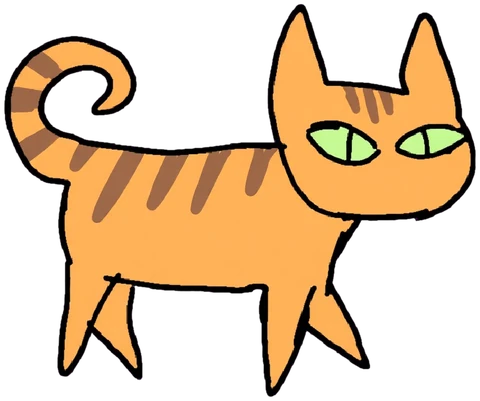
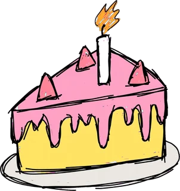

<!doctype html>
<html lang="es">
<head>
<meta charset="utf-8">
<meta name="viewport" content="width=device-width, initial-scale=1, viewport-fit=cover">
<meta name="robots" content="noindex, nofollow">
<title>Dina Física</title>
<link rel="icon" href="../icon-192.png">
<link rel="manifest" href="../manifest.json">
<meta name="theme-color" content="#ff7eb6">
<link rel="apple-touch-icon" href="../apple-touch-icon.png">
<meta name="apple-mobile-web-app-capable" content="yes">
<meta name="mobile-web-app-capable" content="yes">
<meta name="apple-mobile-web-app-title" content="Dina Física">
<meta name="apple-mobile-web-app-status-bar-style" content="default">
<link rel="preconnect" href="https://fonts.googleapis.com">
<link rel="stylesheet" href="https://fonts.googleapis.com/css2?family=Fredoka:wght@500;600;700&display=swap">
<style>
/* Mundo único (rosa pastel de Dina Beat): pantalla de juego de una columna, escena arriba, pregunta y respuestas abajo */
:root{
  --crema:#fff7fb; --rosa:#ff7eb6; --rosa-osc:#e2559a; --tinta:#4a2a3f; --tinta-suave:#7b5a6f;
  --sombra:#e9b6cd; --blanco:#ffffff; --bien:#2fae78; --bien-fondo:#e3f7ee; --mal:#e2496b; --mal-fondo:#fde6ec;
  --b1:#ff7eb6; --b1s:#d9579a; --b2:#ff9a3c; --b2s:#d9741c; --b3:#8a5ce0; --b3s:#6a3fbf; --b4:#2fb37e; --b4s:#1f8a5f; --b5:#22a7c4; --b5s:#13809b; --b6:#5a6bdc; --b6s:#3e4cb5;
  --display:"Fredoka","Baloo 2","Trebuchet MS",system-ui,sans-serif;
  --texto:"Andika","Verdana","Segoe UI",system-ui,sans-serif;
  --escala:1; --pos:#e8553f; --neg:#3a7fd9; --vec:#6a4fd0; --vec2:#d9741c; --res:#1f8a5f;
  color-scheme:light;
}
html,body{height:100%}
:root{padding-top:env(safe-area-inset-top,0px);padding-bottom:env(safe-area-inset-bottom,0px)}
[hidden]{display:none!important}
img{max-width:100%}
body{margin:0;background:var(--crema);color:var(--tinta);font-family:var(--texto);font-size:16px;
  padding-left:max(16px,env(safe-area-inset-left,0px));padding-right:max(16px,env(safe-area-inset-right,0px));
  -webkit-tap-highlight-color:transparent;overflow-x:hidden}
body::after{content:"";position:fixed;inset:0;background:url(assets/nubes.webp) 0 0/220px repeat;opacity:.18;pointer-events:none;z-index:-1}
.app{max-width:460px;margin:0 auto;min-height:100%;display:flex;flex-direction:column;padding-block:12px 20px}
button{font:inherit;color:inherit;cursor:pointer;border:0;background:none}
button:focus-visible{outline:3px solid var(--tinta);outline-offset:2px}
.redondo{width:46px;height:46px;border-radius:50%;background:var(--blanco);box-shadow:0 3px 0 var(--sombra);font-size:20px;display:grid;place-items:center;flex:none}

/* ---------- Menú ---------- */
.top{display:flex;justify-content:space-between;align-items:center}
.top .izq{display:flex;gap:8px}
a.redondo{text-decoration:none;color:inherit}
h1{font-family:var(--display);font-weight:700;font-size:44px;line-height:1;margin:6px 0 4px;text-align:center;color:var(--blanco);
  -webkit-text-stroke:0;text-shadow:0 2px 0 var(--rosa-osc),0 4px 0 var(--rosa),0 6px 10px rgba(226,85,154,.25);letter-spacing:.5px}
.lema{text-align:center;font-family:var(--display);font-weight:600;margin:0 0 6px;font-size:17px;text-wrap:balance}
.duo{display:flex;justify-content:center;align-items:flex-end;gap:8px;height:150px;margin:4px 0}
.duo img{height:100%;width:auto;object-fit:contain}
.duo img.d{height:78%;animation:bamboleo 1.4s ease-in-out infinite}
@keyframes bamboleo{50%{transform:translateY(-6px) rotate(-3deg)}}
.ayuda{text-align:center;color:var(--tinta-suave);font-weight:700;font-size:15px;margin:0 0 12px;text-wrap:balance}
.lista{display:flex;flex-direction:column;gap:10px}
.btn{display:flex;align-items:center;gap:10px;width:100%;padding:13px 16px;border-radius:18px;color:var(--blanco);text-align:left;
  font-family:var(--display);font-weight:600;font-size:19px;box-shadow:0 4px 0 var(--s,#0003);transition:transform .08s}
.btn:active{transform:translateY(3px);box-shadow:0 1px 0 var(--s,#0003)}
.btn .nom{flex:1;min-width:0;line-height:1.15}
.btn .nom small{display:block;font-family:var(--texto);font-weight:700;font-size:12.5px;opacity:.92;letter-spacing:.2px}
.btn .der{text-align:right;font-family:var(--texto);font-size:13px;font-weight:800;white-space:nowrap}
.btn .der .fr{font-size:17px;letter-spacing:-2px}
.btn.mix{background:var(--blanco);color:var(--tinta);--s:var(--sombra);border:2px solid var(--rosa)}
.chips{display:flex;gap:8px;justify-content:center;margin:14px 0 4px;flex-wrap:wrap}
a.chip{text-decoration:none;color:inherit;display:inline-block}
.chip{padding:8px 14px;border-radius:999px;background:var(--blanco);box-shadow:0 2px 0 var(--sombra);font-weight:800;font-size:14px}
.chip[aria-pressed="true"]{background:var(--tinta);color:var(--blanco);box-shadow:none}
.pie{text-align:center;font-size:12px;color:var(--tinta-suave);margin-top:14px;line-height:1.5}

/* ---------- Juego ---------- */
.hud{display:flex;align-items:center;gap:10px}
.porciones{flex:1;display:flex;gap:2px;min-width:0}
.porciones span{flex:1;max-width:26px;aspect-ratio:1;background:url(assets/torta.webp) center/contain no-repeat;transition:opacity .3s,filter .3s}
.porciones span.comida{opacity:.25;filter:grayscale(1)}
.puntos{font-family:var(--display);font-weight:700;font-size:20px;display:flex;align-items:center;gap:4px;font-variant-numeric:tabular-nums}
.puntos img{height:24px}
.racha{font-size:12px;font-weight:800;color:var(--b2s);min-width:34px}
.puntitos{display:flex;gap:5px;justify-content:center;margin:8px 0 4px}
.puntitos i{width:9px;height:9px;border-radius:50%;background:var(--blanco);border:2px solid var(--sombra)}
.puntitos i.ok{background:var(--bien);border-color:var(--bien)}
.puntitos i.no{background:var(--mal);border-color:var(--mal)}
.puntitos i.ya{border-color:var(--tinta)}
.escena{position:relative;height:clamp(170px,27vh,230px);border-radius:24px;background:linear-gradient(#ffe9f3,#ffd9ea);overflow:hidden;
  box-shadow:inset 0 -18px 0 #ffc4dd}
.escena .riel{position:absolute;left:58%;top:8px;bottom:58px;width:6px;margin-left:-3px;border-radius:3px;
  background:repeating-linear-gradient(#ffb3d3 0 8px,transparent 8px 16px)}
.escena .torta{position:absolute;left:58%;bottom:6px;height:64px;transform:translateX(-50%)}
.escena .sofi{position:absolute;left:4%;bottom:4px;height:82%}
.escena .dina{position:absolute;left:58%;top:0;height:62px;transform:translate(-50%,0);will-change:top,transform}
.escena .dina.bob{animation:bob .6s ease-in-out infinite}
@keyframes bob{50%{margin-top:-4px}}
.escena .dina.huye{transition:transform .7s cubic-bezier(.3,.6,.4,1),opacity .7s;transform:translate(120%,-140%) rotate(-35deg) scale(.8);opacity:0}
.escena .dina.come{animation:come .55s ease-in-out}
@keyframes come{30%{transform:translate(-50%,0) scale(1.15) rotate(8deg)}60%{transform:translate(-50%,0) scale(.95) rotate(-8deg)}}
.torta.tiembla{animation:tiembla .4s}
@keyframes tiembla{25%{transform:translateX(-46%) rotate(-5deg)}75%{transform:translateX(-54%) rotate(5deg)}}
.gota{position:absolute;width:8px;height:8px;border-radius:50%;background:#7ec8ff;pointer-events:none;animation:gota .6s ease-out forwards}
@keyframes gota{to{transform:translate(var(--dx),var(--dy));opacity:0}}
.globo{position:absolute;left:50%;top:38%;transform:translate(-50%,-50%);font-family:var(--display);font-weight:700;font-size:26px;white-space:nowrap;
  pointer-events:none;animation:globo .9s ease-out forwards;text-shadow:0 2px 0 var(--blanco)}
@keyframes globo{0%{transform:translate(-50%,-30%) scale(.6);opacity:0}25%{transform:translate(-50%,-50%) scale(1.1);opacity:1}100%{transform:translate(-50%,-90%) scale(1);opacity:0}}
.reloj{position:absolute;right:10px;top:8px;font-weight:800;font-size:13px;background:var(--blanco);padding:3px 9px;border-radius:999px;color:var(--tinta-suave);font-variant-numeric:tabular-nums}

.tarjeta{background:var(--blanco);border-radius:22px;padding:14px 16px 16px;margin-top:12px;box-shadow:0 4px 0 var(--sombra)}
.tema{display:inline-block;font-size:12px;font-weight:800;letter-spacing:.6px;text-transform:uppercase;color:var(--blanco);padding:3px 10px;border-radius:999px;background:var(--tc)}
.preg{font-family:var(--texto);font-weight:700;font-size:calc(19px*var(--escala));line-height:1.4;margin:10px 0 2px;text-wrap:pretty}
.opciones{display:flex;flex-direction:column;gap:9px;margin-top:12px}
.op{display:flex;gap:10px;align-items:flex-start;width:100%;text-align:left;padding:11px 13px;border-radius:16px;background:var(--crema);border:2px solid var(--sombra);
  font-weight:700;font-size:calc(16px*var(--escala));line-height:1.35;transition:transform .08s,background .2s}
.op:active{transform:scale(.98)}
.op b{flex:none;width:26px;height:26px;border-radius:50%;background:var(--blanco);border:2px solid var(--sombra);display:grid;place-items:center;font-family:var(--display);font-size:14px}
.op span{min-width:0}
.op.bien{background:var(--bien-fondo);border-color:var(--bien)}
.op.bien b{background:var(--bien);border-color:var(--bien);color:var(--blanco)}
.op.mal{background:var(--mal-fondo);border-color:var(--mal)}
.op.mal b{background:var(--mal);border-color:var(--mal);color:var(--blanco)}
.op[disabled]{cursor:default}
.op[disabled]:not(.bien):not(.mal){opacity:.55}
.devolucion{margin-top:12px;border-radius:16px;padding:12px 14px;line-height:1.45;font-size:calc(16px*var(--escala))}
.devolucion.si{background:var(--bien-fondo)}
.devolucion.no{background:var(--mal-fondo)}
.devolucion h3{margin:0 0 4px;font-family:var(--display);font-size:19px}
.devolucion p{margin:0}
.devolucion .sec{display:block;margin-top:6px;font-size:13px;color:var(--tinta-suave);font-weight:700}
.sig{margin-top:12px;width:100%;padding:13px;border-radius:16px;background:var(--rosa);color:var(--blanco);font-family:var(--display);font-weight:700;font-size:19px;box-shadow:0 4px 0 var(--rosa-osc)}
.sig:active{transform:translateY(3px);box-shadow:0 1px 0 var(--rosa-osc)}

/* ---------- Resultado ---------- */
.res-cab{text-align:center;margin-top:6px}
.res-cab img{height:120px}
.res-cab h2{font-family:var(--display);font-size:32px;margin:6px 0 2px;text-wrap:balance}
.res-cab .nota{font-family:var(--display);font-weight:700;font-size:22px}
.res-cab .estrellas{font-size:32px;letter-spacing:2px;margin:4px 0}
.res-cab p{margin:4px 0 0;color:var(--tinta-suave);font-weight:700;text-wrap:balance}
.temas{background:var(--blanco);border-radius:20px;padding:14px 16px;margin-top:14px;box-shadow:0 4px 0 var(--sombra);display:flex;flex-direction:column;gap:10px}
.temas h3,.falladas h3{margin:0;font-family:var(--display);font-size:18px}
.fila{display:grid;grid-template-columns:1fr auto;gap:4px 10px;align-items:center;font-weight:700;font-size:14px}
.barra{grid-column:1/-1;height:10px;border-radius:5px;background:var(--crema);overflow:hidden}
.barra i{display:block;height:100%;border-radius:5px;background:var(--tc)}
.falladas{margin-top:14px;display:flex;flex-direction:column;gap:10px}
.falla{background:var(--blanco);border-radius:18px;padding:12px 14px;border-left:0;box-shadow:0 3px 0 var(--sombra);line-height:1.4;font-size:calc(16px*var(--escala))}
.falla .q{font-weight:800}
.falla .r{margin-top:6px;color:var(--bien);font-weight:800}
.falla .e{margin-top:4px;font-size:14px;color:var(--tinta-suave);font-weight:600}
.acciones{display:flex;flex-direction:column;gap:10px;margin-top:16px}
.todo-bien{text-align:center;font-weight:800;color:var(--bien);margin-top:10px}

/* ---------- Ejercicios en papel ---------- */
.btn.ej{background:var(--tinta);--s:#2c1726}
.cab-ej{display:flex;align-items:center;gap:10px;margin-bottom:6px}
.cab-ej h2{font-family:var(--display);font-size:26px;margin:0;flex:1;min-width:0}
.nivel{margin:16px 0 8px;font-family:var(--display);font-size:18px;font-weight:700}
.ej-item{display:flex;align-items:center;gap:10px;width:100%;text-align:left;padding:12px 14px;border-radius:16px;background:var(--blanco);box-shadow:0 3px 0 var(--sombra);font-weight:700;line-height:1.3;font-size:calc(16px*var(--escala))}
.ej-item + .ej-item{margin-top:8px}
.ej-item .n{flex:none;width:30px;height:30px;border-radius:50%;display:grid;place-items:center;background:var(--crema);font-family:var(--display);border:2px solid var(--sombra)}
.ej-item .t{flex:1;min-width:0}
.ej-item .st{flex:none;font-size:20px}
.enun{font-family:var(--texto);font-weight:700;font-size:calc(18px*var(--escala));line-height:1.5;margin:10px 0 0;text-wrap:pretty}
.papel{margin-top:10px;padding:10px 12px;border-radius:14px;background:var(--crema);border:2px dashed var(--sombra);font-weight:700;font-size:14px;color:var(--tinta-suave)}
.pasos{display:flex;flex-direction:column;gap:8px;margin-top:12px}
.paso{border-radius:14px;padding:10px 12px;background:var(--crema);line-height:1.7;font-size:calc(17px*var(--escala));overflow-x:auto;animation:aparece .25s ease-out}
.paso b{display:block;font-size:12px;letter-spacing:.6px;text-transform:uppercase;color:var(--tinta-suave)}
.paso.final{background:var(--bien-fondo);font-weight:800}
@keyframes aparece{from{opacity:0;transform:translateY(6px)}}
.tal{display:grid;grid-template-columns:repeat(3,1fr);gap:8px;margin-top:10px}
.tal button{padding:12px 6px;border-radius:14px;background:var(--crema);border:2px solid var(--sombra);font-weight:800;font-size:15px}
.chip input{font:inherit;border:0;background:transparent;width:8em;outline:none;color:inherit}
.enviado{text-align:center;font-size:12px;color:var(--tinta-suave);margin-top:8px;font-weight:700}

/* ---------- fórmulas legibles ---------- */
sup{font-size:.72em;line-height:0;vertical-align:.6em}
sub{font-size:.72em;line-height:0;vertical-align:-.3em}
.fr{display:inline-flex;flex-direction:column;align-items:stretch;vertical-align:middle;margin:.2em .2em;line-height:1.3;text-align:center}
.fr>span{padding:0 .3em}
.hueco{display:inline-block;width:1.4em}
.fr>span:first-child{border-bottom:2px solid currentColor;padding-bottom:.15em}
.fr>span:last-child{padding-top:.15em}
.fig{width:100%;max-width:400px;height:auto;display:block;margin:12px auto 0;font-family:var(--texto);font-weight:700;font-size:14px}
.fig text{fill:var(--tinta)}
.fig .vt text{fill:inherit}
.fig .suave,.fig .cota{fill:var(--tinta-suave)}
.fig .sg{fill:#fff;font-size:22px;font-family:var(--display)}
.fig .eje{stroke:var(--tinta-suave);stroke-width:1.5}
.ley{margin:4px 0 0;text-align:center;font-weight:700;font-size:calc(15px*var(--escala));line-height:1.6}
.marco{background:var(--blanco);border:2px solid var(--crema);border-radius:14px;padding:4px 6px 8px;margin-top:10px}
.formula{background:var(--blanco);border-radius:16px;padding:12px 14px;box-shadow:0 3px 0 var(--sombra)}
.formula + .formula{margin-top:8px}
.formula .mat{font-size:calc(21px*var(--escala));font-weight:700;line-height:1.7;overflow-x:auto}
.formula p{margin:6px 0 0;color:var(--tinta-suave);font-weight:700;font-size:calc(15px*var(--escala));line-height:1.5}
.metodo{background:var(--blanco);border-radius:16px;padding:12px 14px 12px 36px;margin:0;box-shadow:0 3px 0 var(--sombra);line-height:1.6;font-weight:700;font-size:calc(16px*var(--escala))}
.btn.form{background:var(--b4s);--s:#145c3f}

/* ---------- letra y tamaño ---------- */
.aa{font-family:var(--texto);font-weight:700;font-size:17px;letter-spacing:-.5px}
.hud .aa{width:40px;height:40px;font-size:15px}
.hoja{position:fixed;inset:0;z-index:50;display:flex;align-items:flex-end;justify-content:center;background:rgba(74,42,63,.35);animation:fondo .15s ease-out}
@keyframes fondo{from{opacity:0}}
.panel{width:100%;max-width:460px;max-height:86vh;overflow:auto;background:var(--crema);border-radius:24px 24px 0 0;
  padding:16px max(16px,env(safe-area-inset-right,0px)) calc(16px + env(safe-area-inset-bottom,0px)) max(16px,env(safe-area-inset-left,0px));
  box-shadow:0 -6px 24px rgba(74,42,63,.2);animation:sube .2s ease-out}
@keyframes sube{from{transform:translateY(40px);opacity:.5}}
.panel h2{font-family:var(--display);font-size:22px;margin:0}
.panel .fila-cab{display:flex;align-items:center;gap:10px;margin-bottom:10px}
.panel .fila-cab h2{flex:1}
.panel .sub{font-weight:700;color:var(--tinta-suave);font-size:14px;margin:12px 0 6px}
.letras{display:grid;grid-template-columns:1fr 1fr;gap:8px}
.letra{text-align:left;padding:10px 12px;border-radius:16px;background:var(--blanco);border:2px solid var(--sombra);min-width:0}
.letra[aria-pressed="true"]{border-color:var(--rosa-osc);box-shadow:0 0 0 2px var(--rosa) inset}
.letra .ln{display:block;font-weight:700;font-size:16px}
.letra .lm{display:block;font-size:17px;margin-top:4px;white-space:nowrap;overflow:hidden;text-overflow:ellipsis}
.letra .lf{display:block;font-size:11px;color:var(--tinta-suave);margin-top:2px;font-family:var(--display)}
.tam{display:flex;align-items:center;gap:8px}
.tam button{flex:none;width:52px;height:46px;border-radius:14px;background:var(--blanco);border:2px solid var(--sombra);font-weight:700}
.tam .menos{font-size:15px} .tam .mas{font-size:22px}
.tam .val{flex:1;text-align:center;font-weight:700;font-size:16px}
.muestra{background:var(--blanco);border-radius:16px;padding:10px 14px;line-height:1.6;font-size:calc(17px*var(--escala));margin-top:10px}

/* ---------- números nuevos y simulacro ---------- */
.btn.dado{background:var(--blanco);color:var(--tinta);--s:var(--sombra);border:2px dashed var(--b3);margin-top:12px}
.btn.sim{background:var(--b3s);--s:#4b2a8f}
.btn.examen{background:linear-gradient(135deg,#ff5fa2,#ff9a3c);--s:#c23f74;border:3px solid #fff3a6}
.btn.examen .nom{font-size:21px}
.cuenta{display:inline-block;margin-top:4px;padding:3px 10px;border-radius:999px;background:#fff3a6;color:var(--tinta);font-size:14px;font-weight:700}
.ojo{margin-top:12px;padding:12px 14px;border-radius:16px;background:#fff3d6;border:2px solid #ffc94d;text-align:left}
.ojo h3{margin:0 0 6px;font-size:18px}
.ojo li{margin:4px 0}
.animo{display:flex;gap:10px;align-items:center;text-align:left;background:var(--blanco);border-radius:18px;padding:10px 12px;margin-top:10px;box-shadow:0 3px 0 var(--sombra)}
.animo img{width:64px;height:64px;object-fit:contain;flex:none}
.animo p{margin:0}
.ej-item .vez{font-size:13px;color:var(--tinta-suave);white-space:nowrap}
.meta{margin-top:10px;padding:12px 14px;border-radius:18px;background:var(--blanco);box-shadow:0 3px 0 var(--sombra);text-align:left}
.meta h3{margin:0 0 8px;font-size:17px}
.meta p{margin:8px 0;font-size:calc(15px*var(--escala))}
.meta .bar{height:14px;border-radius:9px;background:var(--crema);border:2px solid var(--sombra);overflow:hidden}
.meta .bar i{display:block;height:100%;background:var(--b4)}
.acor{background:var(--blanco);border-radius:18px;padding:10px 16px;box-shadow:0 3px 0 var(--sombra);text-align:left}
.acor h3{margin:12px 0 4px;font-size:18px}
.acor ul{margin:0;padding-left:20px}
.acor li{margin:5px 0;font-size:calc(15px*var(--escala));line-height:1.45}
@media print{html,body{background:#fff !important;background-image:none !important}.cab-ej,.sig,.noimp{display:none !important}.acor{box-shadow:none;border:1px solid #888;padding:4px 10px}.acor h2{font-size:16px !important}.acor li{font-size:11px;margin:2px 0;line-height:1.3}.acor h3{margin:6px 0 1px;font-size:13px}.fr{font-size:.95em}@page{margin:10mm}.app,body,html{min-height:0 !important;height:auto !important}.app{padding:0 !important}}
.nuevo{display:inline-block;margin-left:6px;font-size:12px;font-weight:800;letter-spacing:.4px;text-transform:uppercase;color:var(--b3s);background:#efe7ff;padding:3px 10px;border-radius:999px}
.anotado{margin:12px 0 0;text-align:center;font-weight:800;color:var(--bien);font-size:17px}
.sub-t{font-weight:700;color:var(--tinta-suave);margin:14px 0 6px}
.nav{display:flex;gap:10px;align-items:center;justify-content:space-between;margin-top:14px}
.nav .sig{margin-top:0;width:auto;flex:1}
.nav .chip{flex:none}
.cab-ej.sim{justify-content:space-between}
.crono{flex:1;text-align:center;font-family:var(--display);font-weight:700;font-size:22px;font-variant-numeric:tabular-nums}
.crono.poco{color:var(--mal)}
.redondo.ancho{width:auto;border-radius:999px;padding:0 14px;font-weight:800;font-size:15px;color:var(--mal)}
.op.elegida{background:#efe7ff;border-color:var(--b3)}
.op.elegida b{background:var(--b3);border-color:var(--b3);color:var(--blanco)}
.falla.bienc{opacity:.8}
.falla .tu{margin-top:6px;color:var(--mal);font-weight:700}
.aviso{background:var(--mal-fondo);border-radius:14px;padding:10px 14px;font-weight:700;margin:8px 0 0}
.tal small{font-weight:600;color:var(--tinta-suave)}

@media (prefers-reduced-motion:reduce){*{animation:none!important;transition:none!important}}
</style>
<script src="config.js"></script>
<script src="../comun/nube.js"></script>
</head>
<body>
<div class="app" id="app"></div>

<script>
/* =====================  BANCO DE PREGUNTAS  =====================
   La primera opción de cada pregunta es la correcta (se mezclan al mostrarlas).
   s = sección del material del Prof. Riveros donde está explicado. */
const TEMAS = {
  b5:{nom:"Ondas", sub:"λ, frecuencia, cualidades del sonido", c:"var(--b5)", s:"var(--b5s)"},
  b6:{nom:"Fenómenos ondulatorios", sub:"reflexión, refracción, interferencia, difracción, polarización", c:"var(--b6)", s:"var(--b6s)"},
  b1:{nom:"Carga eléctrica", sub:"electrones, cuantización, conservación", c:"var(--b1)", s:"var(--b1s)"},
  b2:{nom:"Ley de Coulomb", sub:"fuerza entre dos cargas", c:"var(--b2)", s:"var(--b2s)"},
  b3:{nom:"Campo eléctrico", sub:"sentido, F = qE, líneas, conductores", c:"var(--b3)", s:"var(--b3s)"},
  b4:{nom:"Superposición", sub:"varias cargas y campo nulo", c:"var(--b4)", s:"var(--b4s)"}
};
const BANCO = [
/* ---------- Bloque 5: ondas (repaso del 30/10 y lo que mostró el profe) ---------- */
{id:"o1",b:"b5",q:"¿En qué unidad se mide la longitud de onda (λ)?",o:["Metro (m)","Hertz (Hz)","Segundo (s)","Radián por segundo (rad/s)"],e:"λ es una distancia: la que hay entre dos crestas seguidas. Se mide en metros.",s:"Repaso del 30/10"},
{id:"o2",b:"b5",q:"¿En qué unidad se mide la frecuencia (f)?",o:["Hertz (Hz)","Metro (m)","Segundo (s)","Watt por metro cuadrado (W/m²)"],e:"f = cuántas vibraciones hay en un segundo. 1 Hz = 1 vibración por segundo.",s:"Repaso del 30/10"},
{id:"o3",b:"b5",q:"¿En qué unidad se mide la frecuencia angular (ω)?",o:["rad/s","Hz","m/s","s"],e:"ω = 2π · f y se mide en radianes por segundo.",s:"Repaso del 30/10"},
{id:"o4",b:"b5",q:"¿En qué unidad se mide el período (T)?",o:["Segundo (s)","Hertz (Hz)","Metro (m)","rad/s"],e:"T es el tiempo que tarda una vibración completa. Se mide en segundos.",s:"Repaso del 30/10"},
{id:"o5",b:"b5",q:"¿Cuál es la fórmula de la longitud de onda con la velocidad y la frecuencia?",o:["λ = [[v::f]]","λ = v · f","λ = [[f::v]]","λ = v + f"],e:"λ = v · T y T = [[1::f]], entonces λ = [[v::f]].",s:"Repaso del 30/10"},
{id:"o6",b:"b5",q:"¿Cómo se relacionan el período (T) y la frecuencia (f)?",o:["T = [[1::f]]","T = f²","T = 2 · f","T = f − 1"],e:"Son inversos: si la frecuencia es alta, cada vibración dura menos.",s:"Repaso del 30/10"},
{id:"o7",b:"b5",q:"Una bocina emite 686 Hz y el sonido viaja a 343 m/s. ¿Cuál es la longitud de onda?",o:["0,5 m","2 m","235 298 m","1 029 m"],e:"λ = [[v::f]] = [[343::686]] = 0,5 m. Es el ejercicio que mostró el profe.",s:"Ejercicio del profe"},
{id:"o8",b:"b5",q:"Si la velocidad no cambia y la frecuencia se duplica, ¿qué pasa con la longitud de onda?",o:["Se reduce a la mitad","Se duplica","No cambia","Se cuadruplica"],e:"λ = [[v::f]]: si f está abajo y se duplica, λ queda a la mitad.",s:"Repaso del 30/10"},
{id:"o9",b:"b5",q:"Una onda tiene λ = 2 m y f = 170 Hz. ¿Cuál es su velocidad?",o:["340 m/s","85 m/s","172 m/s","0,012 m/s"],e:"v = λ · f = 2 · 170 = 340 m/s.",s:"Repaso del 30/10"},
{id:"o10",b:"b5",q:"El tono o altura de un sonido depende de…",o:["La frecuencia fundamental (Hz)","La amplitud (W/m²)","El espectro armónico","El tiempo de persistencia"],e:"Frecuencia alta = sonido agudo. Frecuencia baja = sonido grave.",s:"Repaso del 30/10"},
{id:"o11",b:"b5",q:"La intensidad de un sonido depende de…",o:["La amplitud o potencia por área (W/m² o dB)","La frecuencia fundamental (Hz)","El espectro armónico","El tiempo de persistencia (s)"],e:"Intensidad = sonido fuerte o débil. Se mide en W/m² o en decibeles (dB).",s:"Repaso del 30/10"},
{id:"o12",b:"b5",q:"El timbre de un sonido depende de…",o:["El espectro armónico (no tiene unidad)","La frecuencia fundamental (Hz)","La potencia por área (W/m²)","El tiempo de persistencia (s)"],e:"El timbre permite distinguir una guitarra de un piano que tocan la misma nota. Es adimensional.",s:"Repaso del 30/10"},
{id:"o13",b:"b5",q:"La duración de un sonido se relaciona con…",o:["El tiempo de persistencia (s)","La frecuencia fundamental (Hz)","El espectro armónico","La amplitud (dB)"],e:"Cuánto tiempo se escucha el sonido. Se mide en segundos.",s:"Repaso del 30/10"},
{id:"o14",b:"b5",q:"¿Qué cualidad del sonido permite distinguir una guitarra de un piano que tocan la misma nota?",o:["El timbre","El tono","La intensidad","La duración"],e:"Misma nota = mismo tono. Lo que cambia es el timbre (el espectro armónico).",s:"Repaso del 30/10"},
{id:"o15",b:"b5",q:"Un sonido agudo tiene…",o:["Frecuencia alta","Frecuencia baja","Mucha intensidad","Poca duración"],e:"Agudo o grave es el tono, y el tono depende de la frecuencia.",s:"Repaso del 30/10"},
{id:"o16",b:"b5",q:"Un parlante de 10 W reparte su potencia en un área de 2 m². ¿Cuál es la intensidad?",o:["5 W/m²","20 W/m²","12 W/m²","0,2 W/m²"],e:"I = [[P::A]] = [[10::2]] = 5 W/m². P es la potencia y A el área.",s:"Repaso del 30/10"},
{id:"o17",b:"b5",q:"¿Qué es la reflexión?",o:["Una onda llega a una frontera y regresa al medio de donde venía","Una onda pasa a otro medio donde cambia su rapidez","Dos ondas coinciden en el mismo lugar","La onda vibra en un solo plano"],e:"El eco es un ejemplo: el sonido rebota y vuelve.",s:"Repaso del 30/10"},
{id:"o18",b:"b5",q:"¿Qué es la refracción?",o:["Una onda pasa de un medio a otro donde su rapidez es diferente","Una onda rebota en una frontera y vuelve","Dos ondas coinciden en el mismo lugar","La onda vibra en un solo plano"],e:"Ejemplo: una cuchara en un vaso de agua parece quebrada.",s:"Repaso del 30/10"},
{id:"o19",b:"b5",q:"¿Qué es la interferencia?",o:["Dos o más ondas coinciden al mismo tiempo en una región del espacio","Una onda rebota en una frontera","Una onda cambia de medio","Una onda pierde energía"],e:"Las ondas se suman: pueden reforzarse o anularse.",s:"Repaso del 30/10"},
{id:"o20",b:"b5",q:"¿Qué es la polarización?",o:["Cuando la vibración de una onda transversal queda en un solo plano","Cuando una onda rebota y vuelve","Cuando una onda cambia de medio","Cuando dos ondas se suman"],e:"Ejemplo: los lentes de sol polarizados dejan pasar la luz que vibra en un solo plano.",s:"Repaso del 30/10"},
{id:"o21",b:"b5",q:"¿Se puede polarizar el sonido en el aire?",o:["No, porque es una onda longitudinal","Sí, como la luz","Sí, pero solo en el agua","No, porque no tiene frecuencia"],e:"Solo se polarizan las ondas transversales, como la luz. El sonido es longitudinal.",s:"Repaso del 30/10"},
{id:"o22",b:"b5",q:"¿Cuál es la diferencia entre ondas mecánicas y electromagnéticas?",o:["Las mecánicas necesitan un medio; las electromagnéticas viajan también en el vacío","Las mecánicas viajan en el vacío; las electromagnéticas no","Las mecánicas no tienen frecuencia","No hay diferencia"],e:"El sonido (mecánica) no viaja en el vacío. La luz (electromagnética) sí.",s:"Repaso del 30/10"},
{id:"o23",b:"b5",q:"¿Cuál de estas es una onda electromagnética?",o:["La luz","El sonido","Una ola del mar","Una onda en una cuerda"],e:"Luz, radio, rayos X y microondas son electromagnéticas. Las otras son mecánicas.",s:"Repaso del 30/10"},
{id:"o24",b:"b5",q:"El eco es un ejemplo de…",o:["Reflexión","Refracción","Interferencia","Polarización"],e:"El sonido rebota en una pared y vuelve.",s:"Repaso del 30/10"},
{id:"o25",b:"b5",q:"Para pasar de centímetros a metros…",o:["Se divide por 100","Se multiplica por 100","Se divide por 1 000","Se multiplica por 10"],e:"30 cm ÷ 100 = 0,30 m. Siempre en metros antes de usar una fórmula.",s:"Repaso del 30/10"},
/* ---------- Bloque 6: fenómenos ondulatorios (material «Fenómenos ondulatorios», 12/11) ---------- */
{id:"n1",b:"b6",q:"¿Qué es una onda?",o:["Una perturbación que se propaga y transporta energía, sin transportar materia de forma neta","Un desplazamiento de materia de un lugar a otro","Una fuerza que empuja a las partículas del medio","Un movimiento que no transporta energía"],e:"La onda lleva energía de un lugar a otro, pero la materia no viaja con ella.",s:"Sección 1"},
{id:"n2",b:"b6",q:"¿Qué necesita una onda mecánica para propagarse?",o:["Un medio material","El vacío","Una fuente de luz","Un campo eléctrico"],e:"El sonido, las ondas en una cuerda o en el agua necesitan un medio. Por eso el sonido no viaja en el vacío.",s:"Sección 1"},
{id:"n3",b:"b6",q:"En una onda transversal, las partículas vibran…",o:["perpendicular a la dirección de propagación","paralelo a la dirección de propagación","sin moverse","en círculos alrededor de la fuente"],e:"Transversal: vibración ⊥ propagación. Ejemplo: una onda en una cuerda.",s:"Sección 1.1"},
{id:"n4",b:"b6",q:"En una onda longitudinal, las partículas vibran…",o:["paralelo a la dirección de propagación","perpendicular a la dirección de propagación","solo en la superficie","a 45° de la propagación"],e:"Longitudinal: vibración ∥ propagación. Ejemplo: el sonido en el aire, con zonas de compresión y de rarefacción.",s:"Sección 1.2"},
{id:"n5",b:"b6",q:"¿Qué representa la amplitud A de una onda?",o:["El máximo desplazamiento de una partícula respecto de su posición de equilibrio","La distancia entre dos crestas","El tiempo de una vibración completa","La velocidad de la onda"],e:"La distancia entre dos crestas es la longitud de onda λ, no la amplitud.",s:"Sección 1.1"},
{id:"n6",b:"b6",q:"¿Cuál es la fórmula del número de onda k?",o:["k = [[2π::λ]]","k = 2π · λ","k = [[λ::2π]]","k = [[1::T]]"],e:"k = [[2π::λ]]. Y también v = [[ω::k]].",s:"Sección 2.3"},
{id:"n7",b:"b6",q:"¿Cuál es la ley de la reflexión?",o:["El ángulo de incidencia es igual al ángulo de reflexión (θ_i = θ_r)","El ángulo de reflexión es el doble del de incidencia","El ángulo de reflexión es 90° menos el de incidencia","Los dos ángulos suman 180°"],e:"θ_i = θ_r, los dos medidos respecto de la normal.",s:"Sección 3.1"},
{id:"n8",b:"b6",q:"Una onda incide en una frontera formando 38° con la normal. ¿Cuánto vale el ángulo de reflexión?",o:["38°","52°","76°","142°"],e:"θ_r = θ_i = 38°. La onda incidente y la reflejada forman el mismo ángulo con la normal.",s:"Sección 3.4"},
{id:"n9",b:"b6",q:"En la reflexión, los ángulos de incidencia y de reflexión se miden respecto de…",o:["la normal","la frontera","la dirección de la fuente","el eje horizontal"],e:"La normal es la línea perpendicular a la frontera.",s:"Sección 3.1"},
{id:"n10",b:"b6",q:"Un pulso en una cuerda llega a un extremo fijo. ¿Qué pasa al reflejarse?",o:["Se refleja invertido (cambio de fase de π, o sea 180°)","Se refleja sin invertirse","Desaparece","Se refracta"],e:"Extremo fijo: el pulso vuelve invertido, Δφ = π.",s:"Sección 3.3.1"},
{id:"n11",b:"b6",q:"Un pulso en una cuerda llega a un extremo libre. ¿Qué pasa al reflejarse?",o:["Vuelve sin invertirse (Δφ = 0)","Vuelve invertido (Δφ = π)","Se detiene","Cambia su frecuencia"],e:"Extremo libre: el pulso vuelve igual, sin invertirse.",s:"Sección 3.3.2"},
{id:"n12",b:"b6",q:"Cuando una onda cambia de medio (refracción), ¿cuál de estas magnitudes NO cambia?",o:["La frecuencia","La rapidez","La longitud de onda","La rapidez y la longitud de onda juntas"],e:"La frecuencia la determina la fuente: f₁ = f₂. Cambian v y λ.",s:"Sección 4"},
{id:"n13",b:"b6",q:"En la refracción, si la rapidez de la onda disminuye en el segundo medio, su longitud de onda…",o:["disminuye","aumenta","no cambia","se vuelve cero"],e:"[[v₁::v₂]] = [[λ₁::λ₂]] porque f no cambia. Si baja v, baja λ.",s:"Sección 4.1"},
{id:"n14",b:"b6",q:"¿Cuál es la relación entre el ángulo y la rapidez en la refracción?",o:["[[sin θ₁::v₁]] = [[sin θ₂::v₂]]","sin θ₁ · v₁ = sin θ₂ · v₂","[[θ₁::v₂]] = [[θ₂::v₁]]","sin θ₁ + v₁ = sin θ₂ + v₂"],e:"Es la ley de Snell para ondas: el seno del ángulo dividido la rapidez es igual en los dos medios.",s:"Sección 4.2"},
{id:"n15",b:"b6",q:"Si v₂ < v₁, la onda refractada…",o:["se acerca a la normal (θ₂ < θ₁)","se aleja de la normal (θ₂ > θ₁)","no cambia de dirección","vuelve al primer medio"],e:"Más lenta en el segundo medio → se desvía hacia la normal.",s:"Sección 4.4"},
{id:"n16",b:"b6",q:"Si v₂ > v₁, la onda refractada…",o:["se aleja de la normal (θ₂ > θ₁)","se acerca a la normal (θ₂ < θ₁)","no cambia de dirección","se refleja"],e:"Más rápida en el segundo medio → se desvía alejándose de la normal.",s:"Sección 4.4"},
{id:"n17",b:"b6",q:"Una onda viaja a v₁ = 4,0 m/s y llega a la frontera con θ₁ = 30°. En el segundo medio v₂ = 2,0 m/s. ¿Cuánto vale θ₂?",o:["≈ 14,5°","≈ 60°","≈ 15°","≈ 25°"],e:"sin θ₂ = [[v₂::v₁]] · sin θ₁ = [[2::4]] · 0,5 = 0,25 → θ₂ ≈ 14,5°. Como v₂ < v₁, se acerca a la normal.",s:"Sección 4.5"},
{id:"n18",b:"b6",q:"¿Qué es el principio de superposición?",o:["Si dos ondas coinciden, la onda resultante es la suma: y_R = y₁ + y₂","La onda resultante es la resta de las dos ondas","La onda más grande borra a la más chica","Dos ondas nunca pueden coincidir en el mismo lugar"],e:"Es la base de la interferencia.",s:"Sección 5"},
{id:"n19",b:"b6",q:"¿Cuándo hay interferencia constructiva?",o:["Cuando las ondas llegan en fase: Δr = mλ","Cuando una cresta coincide con un valle","Cuando Δr = (m + ½) · λ","Cuando las ondas tienen distinta frecuencia"],e:"En fase: A + A = 2A. La amplitud aumenta. m = 0, 1, 2, 3…",s:"Sección 5.1"},
{id:"n20",b:"b6",q:"¿Cuándo hay interferencia destructiva (con amplitudes iguales)?",o:["Cuando una cresta coincide con un valle: Δr = (m + ½) · λ","Cuando las ondas llegan en fase","Cuando Δr = mλ","Cuando las ondas no se encuentran"],e:"A + (−A) = 0. La condición es Δr = (m + ½) · λ.",s:"Sección 5.2"},
{id:"n21",b:"b6",q:"En un punto, λ = 0,80 m y la diferencia de caminos es Δr = 2,40 m. ¿Qué interferencia hay?",o:["Constructiva (Δr = 3λ)","Destructiva","Ninguna","No se puede saber"],e:"[[Δr::λ]] = [[2,40::0,80]] = 3, un número entero → Δr = mλ → constructiva.",s:"Sección 5.5"},
{id:"n22",b:"b6",q:"¿Cuánto vale la diferencia de fase Δφ en función de Δr?",o:["Δφ = [[2π::λ]] · Δr","Δφ = [[λ::2π]] · Δr","Δφ = 2π · λ · Δr","Δφ = [[Δr::2π]]"],e:"Constructiva: Δφ = 2mπ. Destructiva: Δφ = (2m + 1)π.",s:"Sección 5.3"},
{id:"n23",b:"b6",q:"En una interferencia destructiva, las ondas…",o:["no desaparecen para siempre: sus desplazamientos se cancelan mientras se superponen","desaparecen para siempre","pierden toda su energía","cambian de frecuencia"],e:"Después de cruzarse, cada onda sigue su camino como si nada.",s:"Sección 12"},
{id:"n24",b:"b6",q:"¿Qué es la difracción?",o:["La onda se extiende o se curva al atravesar una abertura o rodear un obstáculo","La onda rebota en una frontera","La onda cambia de rapidez al cambiar de medio","La vibración queda en un solo plano"],e:"Ejemplo: escuchás una conversación desde otra habitación porque el sonido dobla en la puerta.",s:"Sección 6"},
{id:"n25",b:"b6",q:"¿Cuándo es más evidente la difracción?",o:["Cuando el tamaño de la abertura es comparable con la longitud de onda (a ≈ λ)","Cuando la abertura es mucho mayor que λ (a ≫ λ)","Cuando la onda es longitudinal","Cuando la frecuencia es cero"],e:"Si a ≫ λ la difracción es pequeña. Si a ≈ λ es muy apreciable.",s:"Sección 6.1"},
{id:"n26",b:"b6",q:"Una onda de agua tiene λ = 0,50 m y pasa por una abertura de a = 0,55 m. ¿Cómo es la difracción?",o:["Apreciable (a/λ = 1,1, o sea a ≈ λ)","Muy pequeña","No hay difracción","Se transforma en refracción"],e:"[[a::λ]] = [[0,55::0,50]] = 1,1. Como a ≈ λ, se espera una difracción apreciable.",s:"Sección 6.4"},
{id:"n27",b:"b6",q:"¿Qué dice el principio de Huygens?",o:["Cada punto de un frente de onda es fuente de ondas secundarias; la envolvente forma el nuevo frente","Las ondas siempre se propagan en línea recta","La frecuencia no cambia al cambiar de medio","La luz no puede polarizarse"],e:"Ayuda a entender la reflexión, la refracción y la difracción.",s:"Sección 6.3"},
{id:"n28",b:"b6",q:"¿Qué se necesita para que una onda se pueda polarizar?",o:["Que sea una onda transversal","Que sea una onda longitudinal","Que viaje en el vacío","Que tenga frecuencia baja"],e:"La polarización selecciona una dirección de vibración, y eso solo existe en ondas transversales.",s:"Sección 7"},
{id:"n29",b:"b6",q:"La polarización de la luz es una evidencia de que la luz es…",o:["una onda transversal","una onda longitudinal","una onda mecánica","una partícula sin energía"],e:"La luz es una onda electromagnética transversal, por eso se puede polarizar.",s:"Sección 7.3"},
{id:"n30",b:"b6",q:"Luz polarizada con I₀ = 100 W/m² pasa por un analizador a 60°. ¿Cuánto vale la intensidad transmitida?",o:["25 W/m²","50 W/m²","75 W/m²","86,6 W/m²"],e:"I = I₀ · cos²θ = 100 · (0,5)² = 100 · 0,25 = 25 W/m².",s:"Sección 7.5"},
{id:"n31",b:"b6",q:"¿Cuál es la ley de Malus?",o:["I = I₀ · cos²θ","I = I₀ · cos θ","I = I₀ · sin²θ","I = [[I₀::cos²θ]]"],e:"I₀ es la intensidad inicial e I la transmitida. θ es el ángulo entre las direcciones de polarización.",s:"Sección 7.4"},
{id:"n32",b:"b6",q:"¿Se puede polarizar el sonido ordinario en el aire?",o:["No de la misma forma que una onda transversal, porque es longitudinal","Sí, igual que la luz","Sí, pero solo de noche","No, porque no tiene amplitud"],e:"El sonido en el aire es longitudinal: no tiene una dirección transversal para seleccionar.",s:"Sección 7.2"},
{id:"n33",b:"b6",q:"La onda llega a una frontera y vuelve al medio de donde venía. ¿Qué fenómeno es?",o:["Reflexión","Refracción","Difracción","Polarización"],e:"Pregunta 1 de la lista del material: ¿llega a una frontera y regresa? → reflexión.",s:"Sección 9"},
{id:"n34",b:"b6",q:"La onda entra en otra región y cambia su velocidad o su dirección. ¿Qué fenómeno es?",o:["Refracción","Reflexión","Interferencia","Difracción"],e:"Pregunta 2 de la lista del material: cambia de medio y de rapidez → refracción.",s:"Sección 9"},
{id:"n35",b:"b6",q:"Dos ondas coinciden en el mismo lugar al mismo tiempo. ¿Qué fenómeno es?",o:["Interferencia","Difracción","Reflexión","Polarización"],e:"Pregunta 3 de la lista del material: se suman por el principio de superposición.",s:"Sección 9"},
{id:"n36",b:"b6",q:"La onda atraviesa una abertura o rodea un obstáculo y se abre. ¿Qué fenómeno es?",o:["Difracción","Refracción","Interferencia","Reflexión"],e:"Pregunta 4 de la lista del material. No lo confundas con la refracción: la difracción tiene que ver con aberturas y obstáculos.",s:"Sección 9"},
{id:"n37",b:"b6",q:"Se selecciona una dirección transversal de vibración. ¿Qué fenómeno es?",o:["Polarización","Difracción","Interferencia","Refracción"],e:"Pregunta 5 de la lista del material.",s:"Sección 9"},
{id:"n38",b:"b6",q:"¿Cuál es la diferencia entre reflexión y refracción?",o:["En la reflexión la onda vuelve; en la refracción continúa hacia otro medio","En la reflexión cambia la frecuencia; en la refracción no","Son lo mismo","En la refracción la onda vuelve; en la reflexión continúa"],e:"Error frecuente del material: reflexión = vuelve. Refracción = sigue hacia otro medio y cambia su rapidez.",s:"Sección 12"},
{id:"n39",b:"b6",q:"¿Cuál es el orden recomendado para resolver un problema de ondas?",o:["Datos → Incógnita → Ecuación → Despeje → Cálculo → Resultado","Cálculo → Datos → Ecuación → Resultado","Ecuación → Resultado → Datos","Resultado → Datos → Cálculo"],e:"Y al final: el resultado con unidades y una interpretación física.",s:"Sección 10"},
/* ---------- lo que mostró el profe (Coulomb y triángulo) ---------- */
{id:"x1",b:"b2",q:"q₁ = +4 µC y q₂ = +6 µC están separadas 30 cm. ¿La fuerza es de atracción o de repulsión?",o:["Repulsión","Atracción","No hay fuerza","Depende de la distancia"],e:"Las dos son positivas: mismo signo → se repelen. F ≈ 2,4 N.",s:"Ejercicio del profe"},
{id:"x2",b:"b2",q:"q₁ = +4 µC y q₂ = +6 µC están a 0,30 m. Con k = 9 × 10⁹, ¿cuánto vale F?",o:["2,4 N","0,72 N","7,2 N","24 N"],e:"F = [[(9 × 10⁹) · (4 × 10⁻⁶) · (6 × 10⁻⁶)::(0,30)²]] = [[0,216::0,09]] = 2,4 N.",s:"Ejercicio del profe"},
{id:"x3",b:"b4",q:"En el triángulo del profe (q₁ = +2 µC, q₂ = −4 µC, q₃ = +7 µC), ¿qué ángulo forman F₁₃ y F₂₃?",o:["120°","60°","90°","180°"],e:"F₁₃ se aleja de q₁ (repulsión) y F₂₃ va hacia q₂ (atracción). Entre las dos flechas quedan 120°.",s:"Ejercicio del profe"},
{id:"x4",b:"b4",q:"¿Cuánto vale cos 120°?",o:["−0,5","0,5","−0,87","0,87"],e:"cos 120° = −0,5. La calculadora tiene que estar en grados (DEG o D en la pantalla).",s:"Ejercicio del profe"},
{id:"x5",b:"b4",q:"¿Cuál es la fórmula de la resultante de dos fuerzas que forman un ángulo α?",o:["F_R = √(F₁₃² + F₂₃² + 2 · F₁₃ · F₂₃ · cos α)","F_R = F₁₃ + F₂₃","F_R = √(F₁₃² + F₂₃ + 2 · F₁₃ · F₂₃ · cos α)","F_R = F₁₃² + F₂₃² · cos α"],e:"Las dos fuerzas van al cuadrado. Si α = 120°, el último término resta porque cos 120° es negativo.",s:"Ejercicio del profe"},
{id:"x6",b:"b4",q:"Para calcular F₂₃ (la fuerza de q₂ sobre q₃), ¿qué cargas se multiplican?",o:["q₂ · q₃","q₁ · q₃","q₁ · q₂","q₁ · q₂ · q₃"],e:"Los subíndices te dicen cuáles: F₂₃ → q₂ y q₃. La distancia es el lado del triángulo.",s:"Ejercicio del profe"},
{id:"x7",b:"b4",q:"En el triángulo del profe, F₁₃ = 0,504 N y F₂₃ = 1,008 N forman 120°. ¿Cuánto vale F_R?",o:["≈ 0,87 N","≈ 1,51 N","≈ 1,33 N","≈ 0,50 N"],e:"F_R = √(0,504² + 1,008² + 2 · 0,504 · 1,008 · (−0,5)) = √0,762 ≈ 0,87 N.",s:"Ejercicio del profe"},
/* ---------- Bloque 1: carga eléctrica ---------- */
{id:"c1",b:"b1",q:"¿Qué es la carga eléctrica?",o:["Una propiedad de la materia responsable de las interacciones eléctricas","La cantidad de átomos que tiene un cuerpo","La fuerza que hacen dos cuerpos entre sí","La energía que guarda un átomo"],e:"Es una propiedad física de la materia. Se representa con q o Q y hay dos tipos: positiva y negativa.",s:"Sección 4"},
{id:"c2",b:"b1",q:"¿Cuál es la unidad de carga en el Sistema Internacional?",o:["El coulomb (C)","El newton (N)","El newton por coulomb (N/C)","El electrón (e)"],e:"[q] = C. El newton es de fuerza y el N/C es de campo.",s:"Sección 4"},
{id:"c3",b:"b1",q:"¿Cuánto vale la carga elemental e?",o:["1,602 × 10⁻¹⁹ C","8,99 × 10⁹ C","1,602 × 10¹⁹ C","8,854 × 10⁻¹² C"],e:"e = 1,602 × 10⁻¹⁹ C. Es la carga de un protón (+e) o de un electrón (−e). 8,99 × 10⁹ es la constante k.",s:"Sección 5"},
{id:"c4",b:"b1",q:"¿Qué carga tiene un neutrón?",o:["Nula (0)","+e","−e","Depende del átomo"],e:"Protón: positiva. Electrón: negativa. Neutrón: carga nula.",s:"Sección 3"},
{id:"c5",b:"b1",q:"Un cuerpo tiene Q = −3,2 µC. ¿Qué le pasa?",o:["Tiene exceso de electrones","Tiene falta de electrones","Tiene exceso de protones","Está neutro"],e:"Si Q < 0 el cuerpo tiene electrones de más. Si Q > 0, le faltan electrones.",s:"Sección 6"},
{id:"c6",b:"b1",q:"¿Cuántos electrones de más tiene un cuerpo con Q = −3,2 µC?",o:["≈ 2,0 × 10¹³ electrones","≈ 2,0 × 10⁻¹³ electrones","≈ 5,1 × 10⁻²⁵ electrones","≈ 3,2 × 10⁶ electrones"],e:"n = |Q| / e = (3,2 × 10⁻⁶) / (1,602 × 10⁻¹⁹) ≈ 2,0 × 10¹³. Primero se pasa µC a C.",s:"Secciones 6 y 7"},
{id:"c7",b:"b1",q:"¿Qué significa que la carga esté cuantizada?",o:["Que siempre es un múltiplo entero de e (Q = ne)","Que puede tener cualquier valor","Que no se crea ni se destruye","Que se mide en N/C"],e:"Q = n·e con n entero. Por eso se puede contar cuántos electrones se pasaron.",s:"Sección 6"},
{id:"c8",b:"b1",q:"¿Qué dice la conservación de la carga?",o:["En un sistema aislado la carga total no cambia: los electrones solo pasan de un cuerpo a otro","Al frotar dos cuerpos se crea carga nueva","La carga desaparece cuando un cuerpo se descarga","Los protones pasan de un cuerpo a otro"],e:"Q inicial = Q final. Lo que se mueve son electrones, no se crea carga.",s:"Sección 8"},
{id:"c9",b:"b1",q:"Después de frotarlo, un cuerpo queda con carga positiva. ¿Por qué?",o:["Perdió electrones","Ganó protones","Ganó electrones","Se crearon cargas positivas"],e:"Queda con menos electrones que protones. Los protones no se mueven en la electrización.",s:"Secciones 6 y 8"},
{id:"c10",b:"b1",q:"¿Qué pasa entre dos cargas negativas?",o:["Se repelen","Se atraen","No interactúan","Depende de la distancia"],e:"Mismo signo se repelen: (−, −) → repulsión, igual que (+, +).",s:"Sección 9"},
{id:"c11",b:"b1",q:"¿Qué pasa entre una carga positiva y una negativa?",o:["Se atraen","Se repelen","No interactúan","Se anulan y desaparecen"],e:"Signos opuestos se atraen: (+, −) → atracción. Las fuerzas apuntan una hacia la otra.",s:"Sección 9"},
{id:"c12",b:"b1",q:"¿A cuántos coulomb equivale 1 µC (microcoulomb)?",o:["10⁻⁶ C","10⁻³ C","10⁻⁹ C","10⁶ C"],e:"1 µC = 10⁻⁶ C y 1 nC = 10⁻⁹ C. No convertir es el error más frecuente.",s:"Secciones 20 y 50"},
{id:"c13",b:"b1",q:"¿A cuántos coulomb equivale 1 nC (nanocoulomb)?",o:["10⁻⁹ C","10⁻⁶ C","10⁻¹² C","10⁹ C"],e:"1 nC = 10⁻⁹ C.",s:"Sección 20"},
{id:"c14",b:"b1",q:"Un átomo es eléctricamente neutro cuando…",o:["tiene la misma cantidad de protones que de electrones","no tiene electrones","tiene más neutrones que protones","tiene solo neutrones"],e:"Neutro = igual cantidad de protones y electrones; sus cargas se compensan.",s:"Sección 3"},

/* ---------- Bloque 2: Ley de Coulomb ---------- */
{id:"k1",b:"b2",q:"¿Qué dice la Ley de Coulomb?",o:["F es proporcional al producto de las cargas e inversamente proporcional al cuadrado de la distancia","F es proporcional a la distancia","F es inversamente proporcional a la distancia (sin cuadrado)","F es proporcional a la suma de las cargas"],e:"F = k·|q₁q₂| / r².",s:"Sección 11"},
{id:"k2",b:"b2",q:"Si la distancia entre dos cargas se duplica, la fuerza…",o:["se reduce a la cuarta parte (F/4)","se reduce a la mitad (F/2)","se duplica (2F)","se cuadruplica (4F)"],e:"F ∝ 1/r². Con 2r queda 1/(2)² = 1/4.",s:"Sección 15.3"},
{id:"k3",b:"b2",q:"Si la distancia se triplica, la fuerza…",o:["se reduce a la novena parte (F/9)","se reduce a la tercera parte (F/3)","se reduce a la sexta parte (F/6)","se hace 9 veces mayor"],e:"1/(3)² = 1/9.",s:"Sección 15.3"},
{id:"k4",b:"b2",q:"Si la distancia se reduce a la mitad, la fuerza…",o:["se cuadruplica (4F)","se reduce a la mitad","se duplica (2F)","se reduce a la cuarta parte"],e:"Con r/2 queda 1/(1/2)² = 4. Más cerca, mucha más fuerza.",s:"Sección 15.3"},
{id:"k5",b:"b2",q:"Si una de las cargas se duplica (lo demás igual), la fuerza…",o:["se duplica (2F)","se cuadruplica (4F)","no cambia","se reduce a la mitad"],e:"F es proporcional a cada carga: 2q → 2F.",s:"Sección 15.1"},
{id:"k6",b:"b2",q:"Si las dos cargas se duplican (misma distancia), la fuerza…",o:["se cuadruplica (4F)","se duplica (2F)","no cambia","se reduce a la cuarta parte"],e:"(2q₁)(2q₂) = 4q₁q₂ → 4F.",s:"Sección 15.2"},
{id:"k7",b:"b2",q:"Una carga se duplica y la distancia también se duplica. La fuerza…",o:["queda a la mitad (F/2)","no cambia","se duplica","queda a la cuarta parte"],e:"La carga multiplica por 2 y la distancia divide por 4: 2/4 = 1/2.",s:"Sección 15"},
{id:"k8",b:"b2",q:"¿Cuánto vale la constante de Coulomb k en el vacío?",o:["8,99 × 10⁹ N·m²/C²","1,602 × 10⁻¹⁹ C","8,854 × 10⁻¹² C²/(N·m²)","9,8 m/s²"],e:"k = 8,99 × 10⁹ N·m²/C² (se puede usar 9,0 × 10⁹). 8,854 × 10⁻¹² es ε₀.",s:"Sección 13"},
{id:"k9",b:"b2",q:"q₁ = +4 µC y q₂ = −6 µC están a 0,30 m. ¿Cuál es la fuerza?",o:["≈ 2,40 N, de atracción","≈ 2,40 N, de repulsión","≈ 0,72 N, de atracción","≈ 2,40 × 10⁻⁶ N, de atracción"],e:"F = (8,99 × 10⁹)(24 × 10⁻¹²) / 0,09 ≈ 2,40 N. Signos opuestos → atracción. (0,72 N sale si no elevás r al cuadrado.)",s:"Sección 21"},
{id:"k10",b:"b2",q:"Dos cargas de +2 µC y +7 µC están a 0,25 m. ¿Cuál es la fuerza?",o:["≈ 2,01 N, de repulsión","≈ 2,01 N, de atracción","≈ 0,50 N, de repulsión","≈ 2,01 × 10⁻³ N, de repulsión"],e:"F = (8,99 × 10⁹)(14 × 10⁻¹²) / (0,25)² ≈ 2,01 N. Las dos son positivas → repulsión.",s:"Ejercicio básico 2"},
{id:"k11",b:"b2",q:"+5 µC y −8 µC están separadas 40 cm. ¿Cuál es la fuerza?",o:["≈ 2,25 N, de atracción","≈ 2,25 × 10⁻⁴ N, de atracción","≈ 2,25 N, de repulsión","≈ 0,90 N, de atracción"],e:"Primero 40 cm = 0,40 m. F = (8,99 × 10⁹)(40 × 10⁻¹²) / 0,16 ≈ 2,25 N. (2,25 × 10⁻⁴ sale si usás 40 sin convertir.)",s:"Ejercicio básico 3"},
{id:"k12",b:"b2",q:"Antes de usar la Ley de Coulomb, ¿cómo se escriben 40 cm?",o:["0,40 m","40 m","4 m","0,040 m"],e:"1 cm = 10⁻² m, entonces 40 cm = 0,40 m. Usar centímetros directo es un error frecuente.",s:"Secciones 20 y 50"},
{id:"k13",b:"b2",q:"q₁ hace una fuerza sobre q₂, y q₂ una sobre q₁. Esas dos fuerzas…",o:["tienen igual módulo y sentidos opuestos (3.ª ley de Newton)","son más grandes sobre la carga más chica","apuntan para el mismo lado","se anulan porque actúan sobre el mismo cuerpo"],e:"F₁₂ = −F₂₁. Igual módulo, misma dirección, sentidos opuestos, y actúan sobre cuerpos distintos (por eso no se anulan).",s:"Sección 17"},
{id:"k14",b:"b2",q:"¿Qué dirección tiene la fuerza eléctrica entre dos cargas puntuales?",o:["La de la recta que une las dos cargas","Siempre horizontal","Perpendicular a la recta que las une","Siempre hacia abajo"],e:"La dirección es la línea que une las cargas; el sentido depende de si se atraen o se repelen.",s:"Sección 16"},
{id:"k15",b:"b2",q:"Dos cargas iguales a 0,15 m se hacen una fuerza de 3,6 N. ¿Cuánto vale cada carga?",o:["≈ 3,0 µC","≈ 9,0 µC","≈ 0,3 µC","≈ 30 µC"],e:"q² = F·r² / k = (3,6)(0,0225) / (8,99 × 10⁹) ≈ 9,0 × 10⁻¹² → q ≈ 3,0 × 10⁻⁶ C. ¡Falta sacar la raíz!",s:"Ejercicio intermedio 1"},
{id:"k16",b:"b2",q:"¿A qué distancia deben estar 2 µC y 5 µC para que F = 1,0 N?",o:["≈ 0,30 m","≈ 0,09 m","≈ 3,0 m","≈ 0,90 m"],e:"r = √(k·q₁q₂ / F) = √(8,99 × 10⁹ · 10 × 10⁻¹²) = √0,0899 ≈ 0,30 m. (0,09 es r², falta la raíz.)",s:"Ejercicio intermedio 2"},

/* ---------- Bloque 3: campo eléctrico ---------- */
{id:"e1",b:"b3",q:"¿Cómo se define el campo eléctrico?",o:["E = F / q₀, con una carga de prueba positiva q₀","E = F · q₀","E = k·|q₁q₂| / r²","E = q₀ / F"],e:"Es la fuerza por unidad de carga sobre una carga de prueba positiva.",s:"Sección 25"},
{id:"e2",b:"b3",q:"¿Cuál es la unidad del campo eléctrico?",o:["N/C","N","C/N","N·m²/C²"],e:"[E] = newton por coulomb. N es de fuerza; N·m²/C² es la unidad de k.",s:"Sección 26"},
{id:"e3",b:"b3",q:"¿Hacia dónde apunta el campo de una carga positiva?",o:["Radialmente hacia afuera, alejándose de la carga","Hacia la carga","En círculos alrededor de la carga","Una carga positiva no tiene campo"],e:"Q > 0 ⇒ campo hacia afuera.",s:"Secciones 29 y 30"},
{id:"e4",b:"b3",q:"¿Hacia dónde apunta el campo de una carga negativa?",o:["Radialmente hacia la carga","Hacia afuera, alejándose de la carga","En círculos alrededor de la carga","Para arriba"],e:"Q < 0 ⇒ campo hacia adentro. Decir que apunta hacia afuera es un error frecuente.",s:"Secciones 29 y 31"},
{id:"e5",b:"b3",q:"El sentido del campo se define como el sentido de la fuerza sobre…",o:["una carga de prueba positiva","un electrón","la carga fuente","cualquier carga, da igual el signo"],e:"Siempre con carga de prueba positiva; por eso una carga negativa siente fuerza al revés del campo.",s:"Secciones 29 y 33"},
{id:"e6",b:"b3",q:"Una carga negativa dentro de un campo eléctrico siente una fuerza…",o:["de sentido contrario al campo","en el mismo sentido que el campo","perpendicular al campo","nula"],e:"F = qE y q < 0, así que F y E apuntan al revés.",s:"Sección 33"},
{id:"e7",b:"b3",q:"Una carga positiva dentro de un campo eléctrico siente una fuerza…",o:["en el mismo sentido que el campo","de sentido contrario al campo","perpendicular al campo","nula"],e:"F = qE con q > 0: mismo sentido.",s:"Sección 33"},
{id:"e8",b:"b3",q:"Para una carga puntual, si te alejás al doble de distancia, el campo…",o:["se reduce a la cuarta parte","se reduce a la mitad","no cambia","se duplica"],e:"E = k·|Q| / r², así que E ∝ 1/r², igual que la fuerza.",s:"Sección 28"},
{id:"e9",b:"b3",q:"q = −3,0 µC está en un campo E = 4,0 × 10⁵ N/C. ¿Qué fuerza siente?",o:["1,20 N, opuesta al campo","1,20 N, en el sentido del campo","1,2 × 10¹² N, opuesta al campo","0,75 N, opuesta al campo"],e:"F = |q|·E = (3,0 × 10⁻⁶)(4,0 × 10⁵) = 1,20 N. Carga negativa → al revés del campo.",s:"Sección 44"},
{id:"e10",b:"b3",q:"¿Qué campo produce Q = +6,0 µC a 0,20 m?",o:["≈ 1,35 × 10⁶ N/C, hacia afuera","≈ 2,70 × 10⁵ N/C, hacia afuera","≈ 1,35 × 10⁶ N/C, hacia la carga","≈ 1,35 × 10⁶ N, hacia afuera"],e:"E = (8,99 × 10⁹)(6,0 × 10⁻⁶) / 0,04 ≈ 1,35 × 10⁶ N/C. Positiva → hacia afuera. (2,70 × 10⁵ sale sin elevar al cuadrado.)",s:"Sección 43"},
{id:"e11",b:"b3",q:"¿Qué campo produce Q = −6 µC a 0,20 m?",o:["≈ 1,35 × 10⁶ N/C, apuntando hacia la carga","≈ 1,35 × 10⁶ N/C, hacia afuera","≈ −1,35 × 10⁶ N/C, hacia afuera","≈ 2,70 × 10⁵ N/C, hacia la carga"],e:"El módulo usa |Q|: E ≈ 1,35 × 10⁶ N/C. El signo negativo se ve en el sentido: hacia la carga.",s:"Ejercicio básico 5"},
{id:"e12",b:"b3",q:"¿Puede haber campo eléctrico en un punto donde no hay ninguna carga de prueba?",o:["Sí, lo producen las cargas fuente; la de prueba solo sirve para medirlo","No, sin carga de prueba no hay campo","Solo si la carga fuente es positiva","Solo dentro de un conductor"],e:"En E = k·|Q| / r² la carga de prueba ni aparece. Creer que el campo depende de ella es un error frecuente.",s:"Secciones 27 y 34"},
{id:"e13",b:"b3",q:"¿Por qué las líneas de campo nunca se cruzan?",o:["Porque en cada punto el campo tiene una sola dirección","Porque las líneas se repelen entre sí","Porque son todas paralelas","Porque salen siempre de cargas negativas"],e:"Si se cruzaran, en ese punto el campo tendría dos direcciones a la vez, y eso es imposible.",s:"Sección 37"},
{id:"e14",b:"b3",q:"Donde las líneas de campo están más juntas, el campo es…",o:["más intenso","más débil","nulo","siempre uniforme"],e:"La densidad de líneas indica la intensidad del campo.",s:"Sección 36"},
{id:"e15",b:"b3",q:"Las líneas de campo eléctrico…",o:["salen de las cargas positivas y llegan a las negativas","salen de las negativas y llegan a las positivas","forman círculos cerrados alrededor de la carga","se cruzan entre las dos cargas"],e:"Salen de + y llegan a − (o se van al infinito). El campo es tangente a la línea.",s:"Sección 36"},
{id:"e16",b:"b3",q:"¿Cómo es un campo eléctrico uniforme?",o:["Igual módulo, dirección y sentido en toda la región: líneas rectas, paralelas y a la misma distancia","El que produce una carga puntual","Uno que cambia con la distancia","Uno con líneas que se cruzan"],e:"Se logra aproximadamente entre dos placas paralelas con cargas opuestas.",s:"Sección 39"},
{id:"e17",b:"b3",q:"El campo de una carga puntual es un ejemplo de campo…",o:["no uniforme, porque cambia con la distancia","uniforme","nulo","que no tiene dirección"],e:"E = k·|Q| / r² depende de r, así que E ≠ constante.",s:"Sección 40"},
{id:"e18",b:"b3",q:"En un conductor en equilibrio electrostático…",o:["el campo adentro es cero y la carga de más queda en la superficie","el campo adentro es máximo","la carga se reparte por todo el interior","el campo afuera es paralelo a la superficie"],e:"E = 0 adentro, carga en la superficie externa y campo perpendicular justo afuera (blindaje electrostático).",s:"Sección 41"},
{id:"e19",b:"b3",q:"¿Cuál es la diferencia entre campo y fuerza?",o:["El campo es una propiedad del espacio (N/C); la fuerza es lo que siente una carga puesta ahí (N)","Son lo mismo con distinto nombre","El campo depende de la carga de prueba y la fuerza no","La fuerza se mide en N/C y el campo en N"],e:"Se relacionan con F = qE.",s:"Sección 34"},
{id:"e20",b:"b3",q:"Una partícula siente 0,25 N en un campo de 5 × 10⁴ N/C. ¿Cuánto vale su carga?",o:["5 µC","12 500 C","0,5 µC","50 µC"],e:"|q| = F / E = 0,25 / (5 × 10⁴) = 5 × 10⁻⁶ C = 5 µC.",s:"Ejercicio intermedio 4"},

/* ---------- Bloque 4: superposición y campo nulo ---------- */
{id:"s1",b:"b4",q:"¿Qué dice el principio de superposición?",o:["La fuerza (o campo) total es la suma vectorial de lo que produce cada carga","Se suman los módulos sin mirar el sentido","Solo cuenta la carga más cercana","Solo cuenta la carga más grande"],e:"F_R = ΣFᵢ y E_R = ΣEᵢ, sumando como vectores. Sumar como números es un error frecuente.",s:"Secciones 19 y 35"},
{id:"s2",b:"b4",q:"Dos cargas positivas iguales. ¿Cuánto vale el campo en el punto medio?",o:["Cero: los dos campos son iguales y opuestos","El doble del campo de una","El campo de una sola","Depende del signo de la carga de prueba"],e:"Cada carga sí produce campo, pero en el medio se cancelan.",s:"Sección 45"},
{id:"s3",b:"b4",q:"+q y −q (igual valor). ¿Qué pasa con el campo en el punto medio?",o:["Los dos apuntan hacia la negativa y se suman","Se cancelan","Apuntan hacia la positiva y se suman","Es perpendicular a la línea de las cargas"],e:"El de + se aleja de + y el de − va hacia −: los dos apuntan de + a −.",s:"Sección 46"},
{id:"s4",b:"b4",q:"+4 µC y −4 µC a 0,60 m. ¿Cuánto vale el campo en el punto medio?",o:["≈ 7,99 × 10⁵ N/C, de la + hacia la −","0","≈ 4,00 × 10⁵ N/C, de la + hacia la −","≈ 7,99 × 10⁵ N/C, de la − hacia la +"],e:"Cada uno: (8,99 × 10⁹)(4 × 10⁻⁶) / 0,09 ≈ 4,0 × 10⁵. Mismo sentido → se suman: ≈ 7,99 × 10⁵ N/C.",s:"Sección 46"},
{id:"s5",b:"b4",q:"Dos cargas del MISMO signo. ¿Dónde puede estar el punto de campo cero?",o:["Entre las dos cargas, más cerca de la menor","Afuera, del lado de la mayor","Afuera, del lado de la menor","No existe nunca"],e:"Entre ellas los campos apuntan al revés. Queda más cerca de la menor para compensar su menor valor.",s:"Sección 48"},
{id:"s6",b:"b4",q:"Cargas de signo OPUESTO y distinto valor. ¿Dónde puede estar el punto de campo cero?",o:["Afuera del segmento, del lado de la carga menor","Entre las dos cargas","Afuera, del lado de la carga mayor","Justo en el medio"],e:"Entre ellas los campos se suman, así que el cero solo puede estar afuera, cerca de la menor.",s:"Sección 48"},
{id:"s7",b:"b4",q:"+4 µC en x = 0 y +1 µC en x = 0,30 m. ¿Dónde es E = 0?",o:["x = 0,20 m","x = 0,10 m","x = 0,15 m","x = 0,60 m"],e:"4/x² = 1/(0,30 − x)² → 2/x = 1/(0,30 − x) → x = 0,20 m. Queda más cerca de la carga chica.",s:"Sección 48"},
{id:"s8",b:"b4",q:"+9 µC en x = 0 y −4 µC en x = 0,30 m. ¿Dónde es E = 0?",o:["x = 0,90 m","x = 0,18 m","x = 0,12 m","x = −0,60 m"],e:"Signos opuestos → afuera, del lado de la menor: 9/x² = 4/(x − 0,30)² → x = 0,90 m.",s:"Sección 48"},
{id:"s9",b:"b4",q:"Eₓ = 3,0 × 10⁴ N/C y E_y = 4,0 × 10⁴ N/C. ¿Cuánto vale E_R?",o:["5,0 × 10⁴ N/C","7,0 × 10⁴ N/C","1,0 × 10⁴ N/C","2,5 × 10⁴ N/C"],e:"E_R = √(Eₓ² + E_y²) = √(9 + 16) × 10⁴ = 5,0 × 10⁴ N/C. Sumar 3 + 4 = 7 es tratarlos como números.",s:"Sección 47"},
{id:"s10",b:"b4",q:"Con Eₓ = 3,0 × 10⁴ y E_y = 4,0 × 10⁴ N/C, ¿qué ángulo forma E_R con el eje +x?",o:["≈ 53,1°","≈ 36,9°","45°","90°"],e:"tan θ = E_y / Eₓ = 4/3 → θ ≈ 53,1°.",s:"Sección 47"},
{id:"s11",b:"b4",q:"Sobre una carga actúan 5,39 N hacia la izquierda y 1,80 N hacia la derecha. ¿Resultante?",o:["≈ 3,60 N hacia la izquierda","≈ 7,19 N hacia la izquierda","≈ 3,60 N hacia la derecha","1,80 N hacia la derecha"],e:"Misma dirección y sentidos opuestos: se restan y gana la más grande.",s:"Sección 19"},
{id:"s12",b:"b4",q:"Sobre una carga actúan 1,35 N y 1,20 N, las dos hacia la derecha. ¿Resultante?",o:["2,55 N hacia la derecha","0,15 N hacia la derecha","2,55 N hacia la izquierda","1,80 N hacia la derecha"],e:"Mismo sentido → se suman: 1,35 + 1,20 = 2,55 N.",s:"Sección 23"},
{id:"s13",b:"b4",q:"Una fuerza de 0,60 N en −x y otra de 0,45 N en +y. ¿Módulo de la resultante?",o:["≈ 0,75 N","1,05 N","0,15 N","≈ 0,52 N"],e:"Son perpendiculares: F_R = √(0,60² + 0,45²) = √0,5625 = 0,75 N.",s:"Secciones 18 y 19"},
{id:"s14",b:"b4",q:"Cuatro cargas iguales en los vértices de un cuadrado. ¿Campo en el centro?",o:["Cero, se cancelan de a pares opuestos","Cuatro veces el de una carga","El doble del de una carga","Apunta hacia una de las esquinas"],e:"Cada carga produce campo en el centro, pero los de vértices opuestos son iguales y opuestos.",s:"Secciones 35 y 45"},
{id:"s15",b:"b4",q:"Tres cargas positivas iguales en un triángulo equilátero. ¿La fuerza sobre una de ellas?",o:["Apunta hacia afuera del triángulo, por la bisectriz del vértice","Es cero","Apunta hacia el centro del triángulo","Apunta hacia una de las otras cargas"],e:"Las dos repulsiones forman 60°: las componentes de costado se cancelan y las de afuera se suman.",s:"Sección 19"},
{id:"s16",b:"b4",q:"En un punto el campo resultante es cero. Si ponés ahí una carga de 5 µC…",o:["no siente fuerza eléctrica","siente una fuerza muy grande","siente fuerza hacia la carga más cercana","se vuelve neutra"],e:"F = qE = q·0 = 0, sea cual sea la carga.",s:"Secciones 32 y 48"},
{id:"s17",b:"b4",q:"¿Cuál es la diferencia entre E = 0 y F = 0?",o:["E = 0 es del punto del espacio; F = 0 es de una carga concreta (también pasa si esa carga es 0)","Son exactamente lo mismo","E = 0 solo pasa dentro de conductores","F = 0 significa que no hay cargas cerca"],e:"F = qE: F es cero si E = 0 o si q = 0. Un cuerpo sin carga no siente fuerza aunque haya campo.",s:"Secciones 32 y 34"},
{id:"s18",b:"b4",q:"¿Qué describe la secuencia Q → E → q → F?",o:["La carga fuente crea un campo, y otra carga puesta en ese campo siente F = qE","La fuerza crea la carga","El campo crea a la carga fuente","q y Q se suman para dar F"],e:"Combinando E = k·|Q| / r² con F = qE sale de nuevo la Ley de Coulomb.",s:"Secciones 24 y 49"},
{id:"s19",b:"b4",q:"Dos cargas positivas iguales están a 0,80 m. ¿Cuánto vale el campo en el punto medio?",o:["Cero","El doble del campo de una","No se puede saber sin el valor de las cargas","Depende de la carga de prueba"],e:"Por simetría los dos campos se cancelan, sin importar cuánto valgan las cargas.",s:"Ejercicio intermedio 5"}
];

/* =====================  EJERCICIOS EN PAPEL  =====================
   Los del material (secciones 52 a 54). Los avanzados no traen números en el material:
   se usan los mismos datos que en el PDF de ejercicios resueltos.
   Escritura: [[arriba::abajo]] = fracción · q₁, F_Rx = subíndice · 10⁻⁶ = potencia · \n = renglón nuevo.
   fig = dibujo del enunciado · figR = dibujo con los vectores de la respuesta. */
const NIVELES = {examen:"⭐ Lo que va a salir (los del profe)", ondas:"🌊 Más problemas de ondas", fenom:"🌠 Fenómenos ondulatorios (material del 12/11)", basico:"Nivel básico", inter:"Nivel intermedio", avanz:"Nivel avanzado"};
const K = "(8,99 × 10⁹)";
const EJ = [
{id:"b1",n:"basico",t:"Número de electrones",q:"Determine el número de electrones correspondiente a una carga Q = −3,2 µC.",
 p:[["Datos y conversión","Q = −3,2 µC = −3,2 × 10⁻⁶ C\ne = 1,602 × 10⁻¹⁹ C"],["Ecuación","n = [[|Q|::e]]"],["Cálculo","n = [[3,2 × 10⁻⁶::1,602 × 10⁻¹⁹]] ≈ 2,0 × 10¹³"]],
 r:"n ≈ 2,0 × 10¹³ electrones. Como Q es negativa, son electrones de más."},
{id:"b2",n:"basico",t:"Fuerza entre +2 µC y +7 µC",q:"Dos cargas q₁ = +2 µC y q₂ = +7 µC están separadas r = 0,25 m. Determine la fuerza eléctrica.",
 fig:{w:360,h:110,c:[[90,50,"+","q₁ = +2 µC"],[270,50,"+","q₂ = +7 µC"]],cota:[[90,92,270,92,"0,25 m"]]},
 figR:{w:360,h:110,c:[[90,50,"+","q₁"],[270,50,"+","q₂"]],v:[[90,50,30,50,"F",1],[270,50,330,50,"F",1]],cota:[[90,92,270,92,"0,25 m"]]},
 p:[["Datos y conversión","q₁ = 2 × 10⁻⁶ C\nq₂ = 7 × 10⁻⁶ C\nr = 0,25 m"],["Atracción o repulsión","Las dos son positivas → repulsión."],["Ecuación","F = k · [[|q₁ · q₂|::r²]]"],["Cálculo",`F = [[${K} · (2 × 10⁻⁶) · (7 × 10⁻⁶)::(0,25)²]]\nF = [[0,126::0,0625]] ≈ 2,01 N`]],
 r:"F ≈ 2,01 N, en la recta que une las cargas, de repulsión: cada una empuja a la otra hacia afuera."},
{id:"b3",n:"basico",t:"Fuerza entre +5 µC y −8 µC",q:"Dos cargas q₁ = +5 µC y q₂ = −8 µC están separadas 40 cm. Determine el módulo de la fuerza e indique si hay atracción o repulsión.",
 fig:{w:360,h:110,c:[[90,50,"+","q₁ = +5 µC"],[270,50,"−","q₂ = −8 µC"]],cota:[[90,92,270,92,"40 cm"]]},
 figR:{w:360,h:110,c:[[90,50,"+","q₁"],[270,50,"−","q₂"]],v:[[90,50,150,50,"F",1],[270,50,210,50,"F",1]],cota:[[90,92,270,92,"0,40 m"]]},
 p:[["Datos y conversión","q₁ = 5 × 10⁻⁶ C\nq₂ = −8 × 10⁻⁶ C\nr = 40 cm = 0,40 m (¡hay que convertir!)"],["Atracción o repulsión","Signos opuestos → atracción."],["Ecuación","F = k · [[|q₁ · q₂|::r²]]"],["Cálculo",`F = [[${K} · (5 × 10⁻⁶) · (8 × 10⁻⁶)::(0,40)²]]\nF = [[0,360::0,16]] ≈ 2,25 N`]],
 r:"F ≈ 2,25 N, de atracción: las fuerzas apuntan una hacia la otra."},
{id:"b4",n:"basico",t:"Campo de Q = +4 µC",q:"Una carga Q = +4 µC produce un campo eléctrico. Determine su intensidad a r = 0,30 m.",
 fig:{w:360,h:110,c:[[90,50,"+","Q = +4 µC"]],pt:[[270,50,"P"]],cota:[[90,92,270,92,"0,30 m"]]},
 figR:{w:360,h:110,c:[[90,50,"+","Q"]],pt:[[270,50,"P"]],v:[[270,50,340,50,"E",2]],cota:[[90,92,270,92,"0,30 m"]]},
 p:[["Datos y conversión","Q = 4 × 10⁻⁶ C\nr = 0,30 m"],["Sentido","Q > 0 → el campo apunta hacia afuera."],["Ecuación","E = k · [[|Q|::r²]]"],["Cálculo",`E = [[${K} · (4 × 10⁻⁶)::(0,30)²]]\nE = [[35 960::0,09]] ≈ 4,0 × 10⁵ N/C`]],
 r:"E ≈ 4,0 × 10⁵ N/C, radial, alejándose de la carga."},
{id:"b5",n:"basico",t:"Campo de Q = −6 µC",q:"Una carga Q = −6 µC produce un campo eléctrico a r = 0,20 m. Determine módulo y sentido.",
 fig:{w:360,h:110,c:[[90,50,"−","Q = −6 µC"]],pt:[[270,50,"P"]],cota:[[90,92,270,92,"0,20 m"]]},
 figR:{w:360,h:110,c:[[90,50,"−","Q"]],pt:[[270,50,"P"]],v:[[270,50,200,50,"E",2]],cota:[[90,92,270,92,"0,20 m"]]},
 p:[["Datos y conversión","Q = −6 × 10⁻⁶ C\nr = 0,20 m"],["Sentido","Q < 0 → el campo apunta hacia la carga."],["Ecuación","E = k · [[|Q|::r²]]  (el módulo usa |Q|, sin el signo)"],["Cálculo",`E = [[${K} · (6 × 10⁻⁶)::(0,20)²]]\nE = [[53 940::0,04]] ≈ 1,35 × 10⁶ N/C`]],
 r:"E ≈ 1,35 × 10⁶ N/C, radial, apuntando hacia la carga."},
{id:"i1",n:"inter",t:"Dos cargas iguales que hacen 3,6 N",q:"Dos cargas iguales ejercen una fuerza F = 3,6 N cuando están separadas r = 0,15 m. Determine el módulo de cada carga.",
 p:[["Datos","F = 3,6 N\nr = 0,15 m\nq₁ = q₂ = q"],["Despeje","F = k · [[q²::r²]]   →   q² = [[F · r²::k]]"],["Cálculo",`q² = [[3,6 · (0,15)²::8,99 × 10⁹]] = [[0,081::8,99 × 10⁹]] ≈ 9,0 × 10⁻¹²`],["Raíz","q = √(9,0 × 10⁻¹²) ≈ 3,0 × 10⁻⁶ C"]],
 r:"|q| ≈ 3,0 µC cada una."},
{id:"i2",n:"inter",t:"¿A qué distancia para 1,0 N?",q:"¿A qué distancia deben encontrarse dos cargas de 2 µC y 5 µC para que la fuerza sea F = 1,0 N?",
 p:[["Datos y conversión","q₁ = 2 × 10⁻⁶ C\nq₂ = 5 × 10⁻⁶ C\nF = 1,0 N"],["Despeje","F = k · [[|q₁ · q₂|::r²]]   →   r² = [[k · |q₁ · q₂|::F]]"],["Cálculo",`r² = [[${K} · (10 × 10⁻¹²)::1,0]] = 0,0899 m²`],["Raíz","r = √0,0899 ≈ 0,30 m"]],
 r:"r ≈ 0,30 m."},
{id:"i3",n:"inter",t:"Carga negativa en un campo",q:"Una carga q = −2 µC se encuentra en un campo E = 6 × 10⁴ N/C. Determine la fuerza.",
 fig:{w:360,h:110,campo:1,c:[[180,55,"−","q = −2 µC"]]},
 figR:{w:360,h:110,campo:1,c:[[180,55,"−","q"]],v:[[180,55,110,55,"F",1]]},
 p:[["Datos y conversión","q = −2 × 10⁻⁶ C\nE = 6 × 10⁴ N/C"],["Ecuación","F = |q| · E   (el sentido sale del signo)"],["Cálculo","F = (2 × 10⁻⁶) · (6 × 10⁴) = 0,12 N"],["Sentido","q < 0 → la fuerza va al revés del campo."]],
 r:"F = 0,12 N, de sentido contrario al campo."},
{id:"i4",n:"inter",t:"¿Cuánta carga tiene?",q:"Una partícula experimenta una fuerza F = 0,25 N en un campo E = 5 × 10⁴ N/C. Determine el módulo de su carga.",
 p:[["Datos","F = 0,25 N\nE = 5 × 10⁴ N/C"],["Despeje","F = |q| · E   →   |q| = [[F::E]]"],["Cálculo","|q| = [[0,25::5 × 10⁴]] = 5 × 10⁻⁶ C"]],
 r:"|q| = 5 × 10⁻⁶ C = 5 µC."},
{id:"i5",n:"inter",t:"Punto medio entre cargas iguales",q:"Dos cargas positivas iguales se encuentran separadas 0,80 m. Determine el campo en el punto medio.",
 fig:{w:360,h:110,c:[[60,50,"+","+q"],[300,50,"+","+q"]],pt:[[180,50,"P"]],cota:[[60,92,180,92,"0,40 m"],[180,92,300,92,"0,40 m"]]},
 figR:{w:360,h:110,c:[[60,50,"+","+q"],[300,50,"+","+q"]],pt:[[180,50,"P"]],v:[[180,50,240,50,"E₁",2],[180,50,120,50,"E₂",2]],cota:[[60,92,180,92,"0,40 m"],[180,92,300,92,"0,40 m"]]},
 p:[["Sentido","En P, el campo de la carga de la izquierda apunta a la derecha y el de la derecha apunta a la izquierda."],["Superposición","Cargas iguales y distancias iguales → E₁ = E₂ con sentidos opuestos → se cancelan."]],
 r:"E_R = 0 en el punto medio. Cada carga produce campo, pero se anulan."},
{id:"a1",n:"avanz",t:"Tres cargas en línea",q:"Tres cargas están en línea recta: q₁ = +3 µC, q₂ = −2 µC (en el centro) y q₃ = +4 µC. De q₁ a q₂ hay 0,10 m y de q₂ a q₃, 0,20 m. Determine la fuerza resultante sobre q₂.",
 fig:{w:360,h:130,c:[[50,40,"+","q₁ = +3 µC"],[125,40,"−","q₂ = −2 µC","b",6],[275,40,"+","q₃ = +4 µC"]],cota:[[50,105,125,105,"0,10 m"],[125,105,275,105,"0,20 m"]]},
 figR:{w:360,h:160,c:[[70,40,"+","q₁"],[145,40,"−","q₂"],[295,40,"+","q₃"]],v:[[145,80,55,80,"F₁₂ = 5,39 N",1,"b"],[145,80,175,80,"F₃₂ = 1,80 N",1,"d"],[145,125,85,125,"F_R = 3,60 N",3,"b"]],l:[[145,54,145,130,2]]},
 p:[["Datos y conversión","q₁ = 3 × 10⁻⁶ C\nq₂ = −2 × 10⁻⁶ C\nq₃ = 4 × 10⁻⁶ C\nr₁₂ = 0,10 m\nr₂₃ = 0,20 m"],["Atracción o repulsión","q₁ (+) y q₂ (−) se atraen → q₂ es atraída hacia la izquierda.\nq₃ (+) y q₂ (−) se atraen → q₂ es atraída hacia la derecha."],["F₁₂",`F₁₂ = [[${K} · (3 × 10⁻⁶) · (2 × 10⁻⁶)::(0,10)²]] ≈ 5,39 N (←)`],["F₃₂",`F₃₂ = [[${K} · (4 × 10⁻⁶) · (2 × 10⁻⁶)::(0,20)²]] ≈ 1,80 N (→)`],["Superposición","Sentidos opuestos → se restan:\nF_R = 5,39 − 1,80 ≈ 3,60 N"]],
 r:"F_R ≈ 3,60 N, horizontal, hacia la izquierda (hacia q₁). Gana q₁ porque está a la mitad de distancia."},
{id:"a2",n:"avanz",t:"Triángulo rectángulo",q:"q₀ = +2 µC está en el ángulo recto (en el origen). q_A = +3 µC está en (0,30 ; 0) m y q_B = −4 µC en (0 ; 0,40) m. Determine la fuerza resultante sobre q₀.",
 fig:{w:360,h:250,ejes:[150,190],c:[[150,190,"+","q₀ = +2 µC","bi"],[270,190,"+","q_A = +3 µC","b"],[150,30,"−","q_B = −4 µC","d"]],l:[[270,190,150,30]],cota:[[150,232,270,232,"0,30 m"],[110,190,110,30,"0,40 m","i"]]},
 figR:{w:360,h:230,ejes:[230,170],c:[[230,170,"+","q₀","bd"]],v:[[230,170,158,170,"F_A = 0,60 N",1,"b"],[230,170,230,116,"F_B = 0,45 N",1,"d"],[230,170,158,116,"F_R = 0,75 N",3,"a"]],l:[[158,170,158,116,1],[158,116,230,116,1]],ang:[230,170,143.1,180,"36,9°"]},
 p:[["Datos y conversión","q₀ = 2 × 10⁻⁶ C\nq_A = 3 × 10⁻⁶ C, a 0,30 m\nq_B = −4 × 10⁻⁶ C, a 0,40 m"],["Atracción o repulsión","q₀ y q_A (+,+): repulsión → fuerza en −x.\nq₀ y q_B (+,−): atracción → fuerza en +y."],["F_A",`F_A = [[${K} · (2 × 10⁻⁶) · (3 × 10⁻⁶)::(0,30)²]] ≈ 0,599 N`],["F_B",`F_B = [[${K} · (2 × 10⁻⁶) · (4 × 10⁻⁶)::(0,40)²]] ≈ 0,450 N`],["Componentes","F_Rx = −0,599 N\nF_Ry = +0,450 N"],["Módulo","F_R = √(0,599² + 0,450²) ≈ 0,749 N"],["Dirección","tan θ = [[0,450::0,599]]   →   θ ≈ 36,9° sobre el eje −x"]],
 r:"F_R ≈ 0,75 N, a 36,9° por encima del eje −x (143,1° desde el eje +x)."},
{id:"a3",n:"avanz",t:"Cargas opuestas: punto medio",q:"Dos cargas q₁ = +5 µC y q₂ = −5 µC están separadas 0,50 m. Determine el campo eléctrico en el punto medio.",
 fig:{w:360,h:110,c:[[60,50,"+","q₁ = +5 µC"],[300,50,"−","q₂ = −5 µC"]],pt:[[180,50,"P"]],cota:[[60,92,180,92,"0,25 m"],[180,92,300,92,"0,25 m"]]},
 figR:{w:360,h:150,c:[[60,40,"+","q₁"],[300,40,"−","q₂"]],pt:[[180,40,"P"]],v:[[180,40,240,40,"E₁",2],[180,80,240,80,"E₂",2],[180,120,300,120,"E_R",3]]},
 p:[["Datos y conversión","q₁ = 5 × 10⁻⁶ C\nq₂ = −5 × 10⁻⁶ C\nr = 0,25 m de cada carga hasta P"],["Sentido","q₁ > 0: su campo se aleja de ella (→).\nq₂ < 0: su campo apunta hacia ella (→).\nLos dos apuntan a la derecha."],["Cada campo",`E = [[${K} · (5 × 10⁻⁶)::(0,25)²]] ≈ 7,19 × 10⁵ N/C`],["Superposición","Mismo sentido → se suman:\nE_R = 2 · 7,19 × 10⁵ ≈ 1,44 × 10⁶ N/C"]],
 r:"E_R ≈ 1,44 × 10⁶ N/C, horizontal, de la carga positiva hacia la negativa."},
{id:"a4",n:"avanz",t:"Triángulo equilátero",q:"Tres cargas iguales q = +2 µC están en los vértices de un triángulo equilátero de lado 0,10 m. Determine la fuerza resultante sobre la carga de arriba (q_A).",
 fig:{w:360,h:200,c:[[180,40,"+","q_A","d"],[110,160,"+","q_B","b"],[250,160,"+","q_C","b"]],l:[[180,40,110,160,1],[180,40,250,160,1],[110,160,250,160,1]],txt:[[300,110,"lado = 0,10 m"],[300,128,"q = +2 µC"]]},
 figR:{w:360,h:220,c:[[180,140,"+","q_A","b"]],l:[[180,140,140,209,1],[180,140,220,209,1]],v:[[180,140,214,81,"F_BA = 3,60 N",1,"d"],[180,140,146,81,"F_CA = 3,60 N",1,"i"],[180,140,180,22,"F_R = 6,23 N",3,"d"]]},
 p:[["Datos y conversión","q = 2 × 10⁻⁶ C en cada vértice\na = 0,10 m"],["Atracción o repulsión","Todas positivas → repulsión. Cada fuerza sale de q_A alejándose de la otra carga."],["Cada fuerza",`F = [[${K} · (2 × 10⁻⁶)²::(0,10)²]] ≈ 3,60 N`],["Componentes","Las dos fuerzas forman 60° entre sí: cada una está a 30° de la vertical.\nLas componentes de costado (3,60 · sen 30°) se cancelan.\nLas verticales (3,60 · cos 30°) se suman."],["Módulo","F_R = 2 · 3,60 · cos 30° ≈ 6,23 N"]],
 r:"F_R ≈ 6,23 N, vertical (por la bisectriz del vértice), hacia afuera del triángulo."},
{id:"a5",n:"avanz",t:"Campo nulo (mismo signo)",q:"Dos cargas están sobre el eje x: q₁ = +4 µC en x = 0 y q₂ = +1 µC en x = 0,30 m. Determine el punto donde el campo resultante es cero.",
 fig:{w:360,h:115,c:[[60,50,"+","q₁ = +4 µC"],[300,50,"+","q₂ = +1 µC"]],cota:[[60,98,300,98,"0,30 m"]],txt:[[60,84,"x = 0"],[300,84,"x = 0,30 m"]]},
 figR:{w:360,h:145,c:[[60,40,"+","q₁"],[300,40,"+","q₂"]],pt:[[220,40,"P"]],v:[[220,80,280,80,"E₁",2,"d"],[220,80,160,80,"E₂",2,"i"]],cota:[[60,115,220,115,"x = 0,20 m"],[220,115,300,115,"0,10 m"]]},
 p:[["Dónde buscar","Las dos son positivas: solo entre las cargas los campos apuntan al revés. Ahí puede estar el cero."],["Condición","E₁ = E₂   →   [[|q₁|::x²]] = [[|q₂|::(0,30 − x)²]]   (k se cancela)"],["Reemplazo","[[4::x²]] = [[1::(0,30 − x)²]]"],["Raíz de los dos lados","[[2::x]] = [[1::0,30 − x]]   →   0,60 − 2x = x"],["Cálculo","3x = 0,60   →   x = 0,20 m"]],
 r:"E_R = 0 en x = 0,20 m: entre las cargas, a 0,10 m de q₂ (la menor)."},
{id:"a6",n:"avanz",t:"Componentes del campo",q:"El punto P está en el origen. q₁ = +2 µC está en x = −0,30 m y q₂ = −3 µC en y = +0,40 m. Determine las componentes del campo eléctrico en P.",
 fig:{w:360,h:230,ejes:[230,190],c:[[110,190,"+","q₁ = +2 µC","a"],[230,30,"−","q₂ = −3 µC","i"]],pt:[[230,190,"P","bd"]],cota:[[110,212,230,212,"0,30 m"],[290,190,290,30,"0,40 m","d"]]},
 figR:{w:360,h:220,ejes:[120,180],pt:[[120,180,"P","bi"]],v:[[120,180,220,180,"E₁ = 2,00 × 10⁵",2,"b"],[120,180,120,96,"E₂ = 1,69 × 10⁵",2,"i"],[120,180,220,96,"E_R = 2,61 × 10⁵ N/C",3,"a"]],l:[[220,180,220,96,1],[120,96,220,96,1]],ang:[120,180,0,40.2,"40,2°"]},
 p:[["Datos y conversión","q₁ = 2 × 10⁻⁶ C, a 0,30 m de P\nq₂ = −3 × 10⁻⁶ C, a 0,40 m de P"],["Sentido","q₁ > 0: el campo se aleja de q₁ → apunta a +x.\nq₂ < 0: el campo va hacia q₂ → apunta a +y."],["E₁",`E₁ = [[${K} · (2 × 10⁻⁶)::(0,30)²]] ≈ 2,00 × 10⁵ N/C`],["E₂",`E₂ = [[${K} · (3 × 10⁻⁶)::(0,40)²]] ≈ 1,69 × 10⁵ N/C`],["Componentes","E_x = 2,00 × 10⁵ N/C\nE_y = 1,69 × 10⁵ N/C"],["Módulo","E_R = √(E_x² + E_y²) ≈ 2,61 × 10⁵ N/C"],["Dirección","tan θ = [[1,69::2,00]]   →   θ ≈ 40,2° sobre el eje +x"]],
 r:"E_x ≈ 2,00 × 10⁵ N/C y E_y ≈ 1,69 × 10⁵ N/C. E_R ≈ 2,61 × 10⁵ N/C a 40,2° sobre el eje +x."},
{id:"a7",n:"avanz",t:"Cuatro cargas en un cuadrado",q:"Cuatro cargas iguales q = +2 µC están en los vértices de un cuadrado de lado 0,20 m. Analice el campo eléctrico en el centro O.",
 fig:{w:360,h:215,c:[[90,30,"+","q₁","i"],[270,30,"+","q₂","d"],[270,180,"+","q₃","d"],[90,180,"+","q₄","i"]],l:[[90,30,270,30,1],[270,30,270,180,1],[270,180,90,180,1],[90,180,90,30,1],[90,30,270,180,2],[270,30,90,180,2]],pt:[[180,105,"O","d"]],txt:[[180,208,"lado = 0,20 m"]]},
 figR:{w:360,h:215,c:[[90,30,"+","q₁","i"],[270,30,"+","q₂","d"],[270,180,"+","q₃","d"],[90,180,"+","q₄","i"]],l:[[90,30,270,30,1],[270,30,270,180,1],[270,180,90,180,1],[90,180,90,30,1]],pt:[[180,105,"O","a"]],v:[[180,105,225,150,"E₁",2,"d"],[180,105,135,150,"E₂",2,"i"],[180,105,135,60,"E₃",2,"i"],[180,105,225,60,"E₄",2,"d"]],txt:[[180,208,"E₁ y E₃ se anulan · E₂ y E₄ se anulan"]]},
 p:[["Distancia","r = media diagonal = [[0,20 · √2::2]] ≈ 0,141 m\nr² = 0,020 m²"],["Cada campo",`E = [[${K} · (2 × 10⁻⁶)::0,020]] ≈ 8,99 × 10⁵ N/C (los cuatro iguales)`],["Sentido","Cada campo se aleja de su carga, hacia el vértice opuesto."],["Superposición","Los campos de vértices opuestos son iguales y opuestos → se cancelan de a pares."]],
 r:"E_R = 0 en el centro. Cada carga produce campo, pero se anulan por simetría."},
{id:"a8",n:"avanz",t:"Campo nulo (signos opuestos)",q:"Una carga q₁ = +9 µC está en x = 0 y una carga q₂ = −4 µC en x = 0,30 m. Determine la región donde podría haber un punto de campo nulo.",
 fig:{w:360,h:120,c:[[90,55,"+","q₁ = +9 µC"],[200,55,"−","q₂ = −4 µC"]],cota:[[90,97,200,97,"0,30 m"]],txt:[[42,18,"región I"],[145,18,"región II"],[285,18,"región III"]],l:[[90,22,90,82,2],[200,22,200,82,2]]},
 figR:{w:360,h:150,c:[[40,45,"+","q₁"],[100,45,"−","q₂"]],pt:[[280,45,"P"]],v:[[280,85,330,85,"E₁",2,"d"],[280,85,230,85,"E₂",2,"i"]],cota:[[40,125,280,125,"x = 0,90 m"]]},
 p:[["Región I (x < 0)","Los campos apuntan al revés, pero q₁ es mayor y está más cerca → siempre gana. No hay punto nulo."],["Región II (entre las cargas)","E₁ → (se aleja de +) y E₂ → (va hacia −): mismo sentido, se suman. No hay punto nulo."],["Región III (x > 0,30)","Los campos apuntan al revés y la carga menor (q₂) está más cerca → se pueden igualar. Sí hay punto nulo."],["Condición","[[9::x²]] = [[4::(x − 0,30)²]]   →   [[3::x]] = [[2::x − 0,30]]"],["Cálculo","3x − 0,90 = 2x   →   x = 0,90 m"]],
 r:"El punto nulo está en la región III, en x = 0,90 m (0,60 m a la derecha de q₂)."}
];

/* ---------- dibujos (SVG) ----------
   c: cargas [x,y,signo,texto,dónde va el texto] · pt: puntos [x,y,texto] · v: vectores [x1,y1,x2,y2,texto,tipo,dónde]
   tipo 1 = fuerza, 2 = campo, 3 = resultante · l: líneas [x1,y1,x2,y2,punteada] · cota: [x1,y1,x2,y2,texto]
   ejes: [x0,y0] · campo: líneas de un campo uniforme hacia la derecha · ang: [x,y,ánguloBase,texto] */
const COL = {1:"var(--vec)",2:"var(--vec2)",3:"var(--res)"};
function esc(s){ return String(s).replace(/&/g,"&amp;").replace(/</g,"&lt;"); }
function etiq(x,y,t,donde,dy){
  const o={a:[0,-14,"middle"],b:[0,24,"middle"],d:[14,5,"start"],i:[-14,5,"end"],bi:[-10,24,"end"],bd:[10,24,"start"],ai:[-10,-14,"end"],ad:[10,-14,"start"]}[donde||"a"];
  return `<text x="${x+o[0]}" y="${y+o[1]+(dy||0)}" text-anchor="${o[2]}">${subSVG(t)}</text>`;
}
function subSVG(t){ // q₁ → q con subíndice; q_A → q con subíndice A
  return esc(t).replace(/([A-Za-z])_([A-Za-z0-9]+)/g,(m,a,b)=>`${a}<tspan dy="4" font-size="75%">${b}</tspan><tspan dy="-4"></tspan>`);
}
function dib(f){
  let s=`<svg viewBox="0 0 ${f.w} ${f.h}" class="fig" role="img" aria-label="Dibujo del ejercicio">`;
  s+=`<defs>${[1,2,3].map(k=>`<marker id="m${k}" viewBox="0 0 10 10" refX="8" refY="5" markerWidth="5" markerHeight="5" orient="auto-start-reverse"><path d="M0 0L10 5L0 10z" fill="${COL[k]}"/></marker>`).join("")}
    <marker id="mc" viewBox="0 0 10 10" refX="5" refY="5" markerWidth="5" markerHeight="5" orient="auto-start-reverse"><path d="M0 1L10 5L0 9z" fill="var(--tinta-suave)"/></marker></defs>`;
  if(f.campo){ for(let y=18;y<f.h;y+=26) s+=`<line x1="20" y1="${y}" x2="${f.w-20}" y2="${y}" stroke="var(--sombra)" stroke-width="2" marker-end="url(#mc)"/>`;
    s+=`<text x="${f.w-24}" y="14" text-anchor="end" class="suave">campo E →</text>`; }
  if(f.ejes){ const [x0,y0]=f.ejes; s+=`<line x1="20" y1="${y0}" x2="${f.w-14}" y2="${y0}" class="eje" marker-end="url(#mc)"/><line x1="${x0}" y1="${f.h-8}" x2="${x0}" y2="10" class="eje" marker-end="url(#mc)"/>
    <text x="${f.w-14}" y="${y0-8}" text-anchor="end" class="suave">x</text><text x="${x0+8}" y="18" class="suave">y</text>`; }
  (f.l||[]).forEach(([a,b,c,d,p])=>s+=`<line x1="${a}" y1="${b}" x2="${c}" y2="${d}" stroke="var(--tinta-suave)" stroke-width="${p===2?1.5:2}" ${p?`stroke-dasharray="${p===2?"3 5":"6 5"}"`:""} opacity=".6"/>`);
  (f.cota||[]).forEach(([a,b,c,d,t,donde])=>{ s+=`<line x1="${a}" y1="${b}" x2="${c}" y2="${d}" stroke="var(--tinta-suave)" stroke-width="1.5" marker-start="url(#mc)" marker-end="url(#mc)"/>`;
    const mx=(a+c)/2,my=(b+d)/2; s+= donde==="i"?`<text x="${mx-8}" y="${my+5}" text-anchor="end" class="cota">${esc(t)}</text>`:donde==="d"?`<text x="${mx+8}" y="${my+5}" class="cota">${esc(t)}</text>`:`<text x="${mx}" y="${my+17}" text-anchor="middle" class="cota">${esc(t)}</text>`; });
  if(f.ang){ const [x,y,g1,g2,t,rr]=f.ang, r=rr||36, rad=g=>g*Math.PI/180, P=(g,rr)=>[x+rr*Math.cos(rad(g)), y-rr*Math.sin(rad(g))];
    const [ax,ay]=P(g1,r),[bx,by]=P(g2,r),[tx,ty]=P((g1+g2)/2,r+16);
    s+=`<path d="M${ax.toFixed(1)} ${ay.toFixed(1)} A${r} ${r} 0 0 0 ${bx.toFixed(1)} ${by.toFixed(1)}" fill="none" stroke="var(--tinta)" stroke-width="1.5"/>`;
    s+=`<text x="${tx.toFixed(1)}" y="${(ty+5).toFixed(1)}" text-anchor="middle" class="cota">${t}</text>`; }
  (f.v||[]).forEach(([a,b,c,d,t,k,donde])=>{ s+=`<line x1="${a}" y1="${b}" x2="${c}" y2="${d}" stroke="${COL[k]}" stroke-width="${k===3?4:3}" stroke-linecap="round" marker-end="url(#m${k})"/>`;
    if(donde==="auto"){ const L=Math.hypot(c-a,d-b)||1, ux=(c-a)/L, uy=(d-b)/L, tx=c+ux*12, ty=d+uy*12+(uy>0.3?12:uy<-0.3?-2:5);
      s+=`<g fill="${COL[k]}" class="vt"><text x="${tx.toFixed(1)}" y="${ty.toFixed(1)}" text-anchor="${ux>0.3?"start":ux<-0.3?"end":"middle"}">${subSVG(t)}</text></g>`; return; }
    const lx=c, ly=d; s+=`<g fill="${COL[k]}" class="vt">${etiq(lx,ly,t,donde||(Math.abs(c-a)>Math.abs(d-b)?"a":"d"))}</g>`; });
  (f.c||[]).forEach(([x,y,sg,t,donde,dy])=>{ const pos=sg==="+"; s+=`<circle cx="${x}" cy="${y}" r="14" fill="${pos?"var(--pos)":"var(--neg)"}"/>
    <text x="${x}" y="${y+6}" text-anchor="middle" class="sg">${pos?"+":"−"}</text><g class="ct">${etiq(x,y,t,donde||"a",dy??-4)}</g>`; });
  (f.pt||[]).forEach(([x,y,t,donde])=>s+=`<circle cx="${x}" cy="${y}" r="5" fill="var(--tinta)"/><g class="ct">${etiq(x,y,t,donde||"a",-2)}</g>`);
  (f.txt||[]).forEach(([x,y,t])=>s+=`<text x="${x}" y="${y}" text-anchor="middle" class="suave">${subSVG(t)}</text>`);
  s+=`</svg>`;
  return f.ley ? s+`<p class="ley">${f.ley.map(x=>F(x)).join("<br>")}</p>` : s;
}


/* =====================  EJERCICIOS CON NÚMEROS NUEVOS  =====================
   Un generador por tipo de ejercicio: elige números al azar y arma el enunciado, los pasos,
   la respuesta y los dibujos con esos números (misma forma que EJ). */
const KK = 8.99e9;
const SUPC = {"0":"⁰","1":"¹","2":"²","3":"³","4":"⁴","5":"⁵","6":"⁶","7":"⁷","8":"⁸","9":"⁹","-":"⁻"};
const sup = n => String(n).split("").map(c=>SUPC[c]).join("");
const coma = t => String(t).replace(".",",");
/* número con cifras significativas; muy grande o muy chico → notación científica */
function num(x,sig=3){
  if(x===0) return "0";
  const a=Math.abs(x);
  if(a>=0.01 && a<1000){ let t=x.toPrecision(sig); if(/e/.test(t)) t=String(Number(t)); return coma(t); }
  let e=Math.floor(Math.log10(a)), m=x/10**e, t=m.toPrecision(sig);
  if(Math.abs(Number(t))>=10){ e++; t=(x/10**e).toPrecision(sig); }
  return coma(t)+" × 10"+sup(e);
}
const exacto = x => coma(String(+x.toFixed(6)));          // 0,0625 · 0,09 · 0,3
const d2 = r => coma(r.toFixed(2));                  // distancias siempre con 2 decimales: 0,30
const metros = r => d2(r)+" m";
const rnd = (a,b) => a + Math.floor(Math.random()*(b-a+1));
const elegir1 = arr => arr[Math.floor(Math.random()*arr.length)];
const sg = () => Math.random()<.5 ? 1 : -1;
const conSigno = v => (v>0?"+":"−")+exacto(Math.abs(v));            // +3 · −2,5
const microC = v => conSigno(v)+" µC";                               // +3 µC
const enC = v => (v<0?"−":"")+exacto(Math.abs(v))+" × 10⁻⁶ C";       // −2 × 10⁻⁶ C
const absC = v => "("+exacto(Math.abs(v))+" × 10⁻⁶)";                // (2 × 10⁻⁶)
const sgn = v => v>0?"+":"−";
const coef = (c,v) => (c===1?"":c)+v;                                 // 1x → x
const Kt = "(8,99 × 10⁹)";
function angulo(x,y){ let g=Math.atan2(y,x)*180/Math.PI; if(g<0) g+=360; return g; }
function arcoDe(ref,phi){ let a=ref, b=phi; if(ref===0 && phi>180) a=360; return [Math.min(a,b),Math.max(a,b)]; }
function textoDir(fx,fy){
  const al=Math.atan(Math.abs(fy)/Math.abs(fx))*180/Math.PI;
  return {al, txt:`${num(al,3)}° ${fy>0?"por encima":"por debajo"} del eje ${fx>0?"+x":"−x"}`, desdeX:num(angulo(fx,fy),4)};
}

const limpio = x => { const t=num(x); return /,\d*$/.test(t) ? t.replace(/0+$/,"").replace(/,$/,"") : t; };
const GEN = {
 /* ---- fenómenos ondulatorios (material «Fenómenos ondulatorios»): 6 tipos, con o = datos del material y sin o = números nuevos ---- */
 refl(o){
  o = o || {ti:elegir1([20,25,30,35,40,45,50,55,60,65,70])};
  const t=o.ti;
  return {t:"Ángulo de reflexión", q:`Una onda incide sobre una frontera formando un ángulo de ${t}° con la normal. Calcule el ángulo de reflexión.`,
   p:[["Datos",`θ_i = ${t}°`],["Incógnita","θ_r = ?"],["Estrategia","Ley de la reflexión:   θ_i = θ_r\nLos dos ángulos se miden respecto de la normal."],["Sustitución",`θ_r = ${t}°`]],
   r:`θ_r = ${t}°. La onda incidente y la reflejada forman el mismo ángulo con la normal.`};
 },
 refrac(o){
  o = o || (()=>{ let v1,v2,t1; do{ v1=elegir1([2,3,4,5,6,8]); v2=elegir1([1,2,3,4,5,6,8]); t1=elegir1([20,25,30,35,40,45,50,60]); }while(v1===v2 || v2/v1*Math.sin(t1*Math.PI/180)>=0.95); return {v1,v2,t1}; })();
  const {v1,v2,t1}=o, s1=Math.sin(t1*Math.PI/180), s2=v2/v1*s1, t2=Math.asin(s2)*180/Math.PI, acerca=v2<v1;
  return {t:"Refracción: ángulo del segundo medio", q:`Una onda viaja en un primer medio con v₁ = ${exacto(v1)} m/s y llega a la frontera con θ₁ = ${t1}°. En el segundo medio, v₂ = ${exacto(v2)} m/s. Calcule θ₂.`,
   p:[["Datos",`v₁ = ${exacto(v1)} m/s\nv₂ = ${exacto(v2)} m/s\nθ₁ = ${t1}°`],["Incógnita","θ₂ = ?"],
      ["Estrategia","[[sin θ₁::v₁]] = [[sin θ₂::v₂]]"],["Despeje","sin θ₂ = [[v₂::v₁]] · sin θ₁"],
      ["Sustitución",`sin θ₂ = [[${exacto(v2)}::${exacto(v1)}]] · sin ${t1}°\nsin ${t1}° ≈ ${num(s1,3)}\nsin θ₂ ≈ ${num(s2,3)}`],
      ["Ángulo",`θ₂ = sin⁻¹(${num(s2,3)}) ≈ ${num(t2,3)}°`],
      ["Interpretación",acerca?"Como v₂ < v₁, la onda se desvía hacia la normal (θ₂ < θ₁).":"Como v₂ > v₁, la onda se aleja de la normal (θ₂ > θ₁)."]],
   r:`θ₂ ≈ ${num(t2,3)}°. ${acerca?"Se acerca a la normal.":"Se aleja de la normal."}`};
 },
 refracL(o){
  o = o || (()=>{ let v1,v2; do{ v1=elegir1([2,3,4,5,6,8]); v2=elegir1([1,2,3,4,5,6,8]); }while(v1===v2); return {v1,v2,l1:elegir1([1,1.5,2,2.5,3,4])}; })();
  const {v1,v2,l1}=o, f=v1/l1, l2=l1*v2/v1;
  return {t:"Refracción: longitud de onda del segundo medio", q:`Una onda pasa de un medio donde v₁ = ${exacto(v1)} m/s y λ₁ = ${exacto(l1)} m a otro donde v₂ = ${exacto(v2)} m/s. Calcule la frecuencia y la longitud de onda λ₂ en el segundo medio.`,
   p:[["Datos",`v₁ = ${exacto(v1)} m/s\nλ₁ = ${exacto(l1)} m\nv₂ = ${exacto(v2)} m/s`],
      ["Frecuencia",`f = [[v₁::λ₁]] = [[${exacto(v1)}::${exacto(l1)}]] = ${exacto(f)} Hz\nLa frecuencia no cambia: f₁ = f₂.`],
      ["Estrategia","[[v₁::v₂]] = [[λ₁::λ₂]]   →   λ₂ = [[v₂::f]]"],
      ["Cálculo",`λ₂ = [[${exacto(v2)}::${exacto(f)}]] = ${limpio(l2)} m`],
      ["Interpretación",v2<v1?"Como v₂ < v₁, la longitud de onda también disminuye.":"Como v₂ > v₁, la longitud de onda también aumenta."]],
   r:`f = ${exacto(f)} Hz (no cambia) y λ₂ = ${limpio(l2)} m.`};
 },
 interf(o){
  o = o || (()=>{ const l=elegir1([0.4,0.5,0.8,1,1.2,1.5,2]), des=Math.random()<.5, m=rnd(1,5); return {l, N:m+(des?0.5:0)}; })();
  const {l,N}=o, dr=+(l*N).toFixed(4), des=N%1!==0, m=Math.floor(N), L=coma(String(l)), D=exacto(dr), n=exacto(N), dF=exacto(2*N);
  return {t:"Tipo de interferencia", q:`Dos fuentes coherentes producen ondas de longitud de onda λ = ${L} m. En cierto punto, la diferencia de caminos es Δr = ${D} m. Determine el tipo de interferencia.`,
   p:[["Datos",`λ = ${L} m\nΔr = ${D} m`],["Incógnita","Tipo de interferencia."],["Estrategia","Calculamos   [[Δr::λ]]\nEntero → constructiva (Δr = mλ)\nEntero + ½ → destructiva (Δr = (m + ½) · λ)"],
      ["Desarrollo",`[[Δr::λ]] = [[${D}::${L}]] = ${n}`],
      ["Conclusión",des?`Δr = ${n} · λ = (${m} + ½) · λ   →   m = ${m}`:`Δr = ${n} · λ = mλ   →   m = ${m}`],
      ["Diferencia de fase (por si la piden)",`Δφ = [[2π::λ]] · Δr = 2π · ${n} = ${dF}π   ${des?"(es (2m + 1)π)":"(es 2mπ)"}`]],
   r:des?`Interferencia destructiva (Δr = (${m} + ½) · λ).`:`Interferencia constructiva (Δr = ${m}λ).`};
 },
 difrac(o){
  o = o || (()=>{ const l=elegir1([0.2,0.3,0.4,0.5,0.6,0.8,1]), grande=Math.random()<.4, R=grande?elegir1([10,15,20,25,40]):elegir1([0.9,1.1,1.2,1.5]); return {l, a:+(l*R).toFixed(4), R}; })();
  const {l,a,R}=o, L=coma(String(l)), A=exacto(a), ap=R<3;
  return {t:"¿Es importante la difracción?", q:`Una onda de agua tiene λ = ${L} m y atraviesa una abertura de a = ${A} m. Determine si la difracción será importante.`,
   p:[["Datos",`λ = ${L} m\na = ${A} m`],["Estrategia","Calculamos   [[a::λ]]\na ≈ λ → difracción muy apreciable\na ≫ λ → difracción pequeña"],
      ["Desarrollo",`[[a::λ]] = [[${A}::${L}]] = ${exacto(R)}`],["Conclusión",ap?`a ≈ λ`:`a ≫ λ (la abertura es ${exacto(R)} veces λ)`]],
   r:ap?`Se espera una difracción apreciable (a ≈ λ).`:`La difracción es pequeña (a ≫ λ): la onda casi sigue derecho.`};
 },
 malus(o){
  o = o || {I0:elegir1([50,80,100,120,200,400]), t:elegir1([30,45,60,90])};
  const {I0,t}=o, c2={30:0.75,45:0.5,60:0.25,90:0}[t], cs={30:"[[√3::2]] ≈ 0,87",45:"[[√2::2]] ≈ 0,71",60:"0,5",90:"0"}[t],
        cuad={30:"([[√3::2]])² = [[3::4]] = 0,75",45:"([[√2::2]])² = [[2::4]] = 0,5",60:"(0,5)² = 0,25",90:"0² = 0"}[t], I=I0*c2;
  return {t:"Ley de Malus (luz polarizada)", q:`Una onda luminosa linealmente polarizada tiene una intensidad I₀ = ${I0} W/m². Pasa por un analizador que forma θ = ${t}° con la polarización. Calcule la intensidad transmitida.`,
   p:[["Datos",`I₀ = ${I0} W/m²\nθ = ${t}°`],["Incógnita","I = ?"],["Estrategia","Ley de Malus:   I = I₀ · cos²θ"],
      ["Valor del coseno",`cos ${t}° = ${cs}\ncos²${t}° = ${cuad}`],
      ["Cálculo",`I = ${I0} · cos²${t}° = ${I0} · ${exacto(c2)} = ${exacto(I)} W/m²`]],
   r:`I = ${exacto(I)} W/m².${t===90?" Con 90° no pasa nada de luz.":""}`};
 },
 ondaF(o){
  o = o || {v:340, lam:elegir1([0.4,0.5,1,2,4])};
  const f=o.v/o.lam, L=coma(String(o.lam));
  return {t:"Hallar la frecuencia", q:`Una onda sonora viaja a ${o.v} m/s y tiene una longitud de onda de ${L} m. Determine su frecuencia.`,
   p:[["Datos",`v = ${o.v} m/s\nλ = ${L} m\nf = ?`],["Fórmula","λ = [[v::f]]   →   f = [[v::λ]]"],["Cálculo",`f = [[${o.v}::${L}]] = ${exacto(f)} Hz`]],
   r:`f = ${exacto(f)} Hz.`};
 },
 ondaV(o){
  o = o || {lam:elegir1([0.5,1,2,3]), f:elegir1([50,100,170,200,300])};
  const v=o.lam*o.f, L=coma(String(o.lam));
  return {t:"Hallar la velocidad", q:`Una onda tiene una longitud de onda de ${L} m y una frecuencia de ${o.f} Hz. Determine su velocidad de propagación.`,
   p:[["Datos",`λ = ${L} m\nf = ${o.f} Hz\nv = ?`],["Fórmula","v = λ · f"],["Cálculo",`v = ${L} · ${o.f} = ${exacto(v)} m/s`]],
   r:`v = ${exacto(v)} m/s.`};
 },
 ondaT(o){
  o = o || {f:elegir1([5,10,20,25,50,100,125])};
  const T=1/o.f, w=2*Math.PI*o.f;
  return {t:"Período y frecuencia angular", q:`Una onda tiene una frecuencia de ${o.f} Hz. Determine su período y su frecuencia angular.`,
   p:[["Datos",`f = ${o.f} Hz`],["Período",`T = [[1::f]] = [[1::${o.f}]] = ${exacto(T)} s`],["Frecuencia angular",`ω = 2π · f = 2π · ${o.f} ≈ ${num(w)} rad/s`]],
   r:`T = ${exacto(T)} s y ω ≈ ${num(w)} rad/s.`};
 },
 intens(o){
  o = o || {P:elegir1([4,6,10,20,50,100]), A:elegir1([0.5,1,2,4,5])};
  const I=o.P/o.A, A=coma(String(o.A));
  return {t:"Intensidad del sonido", q:`Un parlante emite una potencia de ${o.P} W repartida en un área de ${A} m². Determine la intensidad del sonido.`,
   p:[["Datos",`P = ${o.P} W\nA = ${A} m²`],["Fórmula","I = [[P::A]]"],["Cálculo",`I = [[${o.P}::${A}]] = ${exacto(I)} W/m²`]],
   r:`I = ${exacto(I)} W/m².`};
 },
 /* ---- los tres que mostró el profe (k = 9 × 10⁹, como en su hoja). Con o = datos fijos; sin o = números nuevos ---- */
 onda(o){
  o = o || (()=>{ const v=elegir1([340,343,343,1500]), lam=elegir1(v===1500?[0.5,1,1.5,2,3,5]:[0.2,0.25,0.4,0.5,0.8,1,1.25,2]);
    return {v, f:+(v/lam).toFixed(2), obj:elegir1(["Una bocina","Un parlante","Un diapasón","Un silbato","Una sirena"]), agua:v===1500}; })();
  const lam=o.v/o.f, T=1/o.f, nom=o.obj||"Una bocina", medio=o.agua?" en el agua":"";
  return {t:"Longitud de onda", q:`${nom} emite una frecuencia de ${exacto(o.f)} Hz${medio}. Si la velocidad es de ${o.v} m/s, determine la longitud de onda.`,
   p:[["Datos",`f = ${exacto(o.f)} Hz\nv = ${o.v} m/s\nλ = ?`],
      ["Fórmula","λ = v · T   y   T = [[1::f]]\nentonces   λ = [[v::f]]"],
      ["Cálculo",`λ = [[${o.v}::${exacto(o.f)}]] = ${limpio(lam)} m`],
      ["Si piden el período",`T = [[1::f]] = [[1::${exacto(o.f)}]] ≈ ${num(T)} s`]],
   r:`λ = ${limpio(lam)} m. Escribí la unidad: metros.`};
 },
 fuerzaEx(o){
  o = o || {q1:sg()*rnd(1,9), q2:sg()*rnd(1,9), cm:rnd(10,60)};
  const {q1,q2,cm}=o, r=cm/100, rep=q1*q2>0, F=9e9*Math.abs(q1*q2)*1e-12/(r*r);
  const lab=(x,q,i)=>[x,50,q>0?"+":"−",`q${"₁₂"[i]} = ${microC(q)}`];
  return {t:`Fuerza entre ${microC(q1)} y ${microC(q2)}`,
   q:`Dos cargas puntuales q₁ = ${microC(q1)} y q₂ = ${microC(q2)} están separadas ${cm} cm en el vacío. Determine el módulo de la fuerza eléctrica y establezca si la interacción es atractiva o repulsiva. Use k = 9 × 10⁹ N·m²/C².`,
   fig:{w:360,h:110,c:[lab(90,q1,0),lab(270,q2,1)],cota:[[90,92,270,92,`${cm} cm`]]},
   figR:{w:360,h:110,c:[[90,50,q1>0?"+":"−","q₁"],[270,50,q2>0?"+":"−","q₂"]],
     v: rep ? [[90,50,30,50,"F₂₁",1],[270,50,330,50,"F₁₂",1]] : [[90,50,150,50,"F₂₁",1],[270,50,210,50,"F₁₂",1]],cota:[[90,92,270,92,metros(r)]]},
   p:[["Datos y conversión",`q₁ = ${enC(q1)}\nq₂ = ${enC(q2)}\nr = ${cm} cm ÷ 100 = ${metros(r)}\nk = 9 × 10⁹ N·m²/C²`],
      ["Atracción o repulsión", rep?"Mismo signo → repulsión. Cada carga empuja a la otra hacia afuera.":"Signos opuestos → atracción. Cada carga tira de la otra."],
      ["Ecuación","F = k · [[|q₁ · q₂|::r²]]"],
      ["Cálculo",`F = [[(9 × 10⁹) · ${absC(q1)} · ${absC(q2)}::(${d2(r)})²]]\nF = [[${num(9e9*Math.abs(q1*q2)*1e-12)}::${exacto(r*r)}]] ≈ ${limpio(F)} N`]],
   r:`F ≈ ${limpio(F)} N, de ${rep?"repulsión":"atracción"}.`};
 },
 triEx(o){
  o = o || (()=>{ let q1,q2,q3; do{ q1=sg()*rnd(1,9); q2=sg()*rnd(1,9); q3=sg()*rnd(1,9); }while(Math.abs(q1)===Math.abs(q2)); return {q1,q2,q3,a:rnd(2,10)/10}; })();
  const {q1,q2,q3,a}=o, k9=9e9, F13=k9*Math.abs(q1*q3)*1e-12/(a*a), F23=k9*Math.abs(q2*q3)*1e-12/(a*a);
  const rep13=q1*q3>0, rep23=q2*q3>0, u13=rep13?60:240, u23=rep23?120:300, alfa=q1*q2<0?120:60, ca=Math.cos(alfa*Math.PI/180);
  const rad=g=>g*Math.PI/180, fx=F13*Math.cos(rad(u13))+F23*Math.cos(rad(u23)), fy=F13*Math.sin(rad(u13))+F23*Math.sin(rad(u23));
  const FR=Math.sqrt(F13*F13+F23*F23+2*F13*F23*ca);
  const casi0=x=>Math.abs(x)<1e-9*FR;
  const dir = casi0(fx) ? `vertical, hacia ${fy>0?"arriba":"abajo"}` : casi0(fy) ? `horizontal, hacia la ${fx>0?"derecha":"izquierda"}` : textoDir(fx,fy).txt;
  const lado = casi0(fx) ? "" : ` (hacia el lado ${fx>0?"de q₂":"de q₁"})`;
  const nom = q=>sgn(q)==="+"?"(+)":"(−)";
  /* dibujos */
  const lab=(x,y,q,i,d)=>[x,y,sgn(q),`q${"₁₂₃"[i]} = ${microC(q)}`,d];
  const fig={w:360,h:205,c:[lab(110,160,q1,0,"b"),lab(250,160,q2,1,"b"),lab(180,40,q3,2,"d")],l:[[180,40,110,160,1],[180,40,250,160,1],[110,160,250,160,1]],txt:[[180,200,`lado = ${coma(String(a))} m`]]};
  const O=[180,128], mx=Math.max(F13,F23,FR), L=f=>Math.max(34,100*f/mx), P=(g,f)=>[O[0]+L(f)*Math.cos(rad(g)), O[1]-L(f)*Math.sin(rad(g))];
  const [ax,ay]=P(u13,F13), [bx,by]=P(u23,F23), rx=O[0]+(ax-O[0])+(bx-O[0]), ry=O[1]+(ay-O[1])+(by-O[1]);
  const r2=x=>+x.toFixed(1), numS=x=>num(x).replace("-","−");
  let d=((u23-u13)%360+360)%360, g1=u13, g2=u13+d; if(d>180){ g1=u23; g2=u23+(360-d); }
  const lad=128, Q1=[r2(O[0]-lad*Math.cos(rad(60))),r2(O[1]+lad*Math.sin(rad(60)))], Q2=[r2(O[0]+lad*Math.cos(rad(60))),r2(O[1]+lad*Math.sin(rad(60)))];
  const figR={w:360,h:262,c:[[Q1[0],Q1[1],sgn(q1),"q₁","b"],[Q2[0],Q2[1],sgn(q2),"q₂","b"],[O[0],O[1],sgn(q3),"q₃",Math.cos(rad((g1+g2)/2))<0?"d":"i"]],
    l:[[O[0],O[1],Q1[0],Q1[1],1],[O[0],O[1],Q2[0],Q2[1],1],[Q1[0],Q1[1],Q2[0],Q2[1],1],
       [r2(ax),r2(ay),r2(rx),r2(ry),2],[r2(bx),r2(by),r2(rx),r2(ry),2]],
    ang:[O[0],O[1],g1,g2,`${alfa}°`,30],
    v:[[O[0],O[1],r2(ax),r2(ay),"F₁₃",1,"auto"],[O[0],O[1],r2(bx),r2(by),"F₂₃",1,"auto"],[O[0],O[1],r2(rx),r2(ry),"F_R",3,"auto"]]};
  return {t:"Fuerza neta en el triángulo",
   q:`Tres cargas están en los vértices de un triángulo equilátero de lado ${coma(String(a))} m: q₁ = ${microC(q1)}, q₂ = ${microC(q2)} y q₃ = ${microC(q3)}. Explique con un dibujo las fuerzas que actúan sobre la carga q₃ y calcule la fuerza neta sobre esta carga.`,
   fig, figR,
   p:[["Datos y conversión",`q₁ = ${enC(q1)}\nq₂ = ${enC(q2)}\nq₃ = ${enC(q3)}\nr = ${coma(String(a))} m (es el lado: las dos distancias son iguales)\nk = 9 × 10⁹ N·m²/C²`],
      ["Dibujo de las fuerzas sobre q₃",`q₁ ${nom(q1)} y q₃ ${nom(q3)}: ${rep13?"mismo signo → repulsión → F₁₃ se aleja de q₁ (sigue la línea de q₁ a q₃, hacia afuera).":"signos opuestos → atracción → F₁₃ apunta hacia q₁."}\nq₂ ${nom(q2)} y q₃ ${nom(q3)}: ${rep23?"mismo signo → repulsión → F₂₃ se aleja de q₂.":"signos opuestos → atracción → F₂₃ apunta hacia q₂."}`],
      ["F₁₃ (usa q₁ y q₃)",`F₁₃ = [[(9 × 10⁹) · ${absC(q1)} · ${absC(q3)}::(${coma(String(a))})²]] = [[${num(9e9*Math.abs(q1*q3)*1e-12)}::${exacto(a*a)}]] ≈ ${num(F13)} N`],
      ["F₂₃ (usa q₂ y q₃)",`F₂₃ = [[(9 × 10⁹) · ${absC(q2)} · ${absC(q3)}::(${coma(String(a))})²]] = [[${num(9e9*Math.abs(q2*q3)*1e-12)}::${exacto(a*a)}]] ≈ ${num(F23)} N`],
      ["Ángulo entre las fuerzas", alfa===120
        ? "Cada ángulo del triángulo mide 60°. Una fuerza se aleja de su carga y la otra va hacia su carga, así que entre las dos flechas quedan 180° − 60° = 120°."
        : "Cada ángulo del triángulo mide 60°. Las dos fuerzas son del mismo tipo (las dos se alejan o las dos van hacia las cargas), así que entre las flechas quedan 60°."],
      ["Fórmula de la resultante",`F_R = √(F₁₃² + F₂₃² + 2 · F₁₃ · F₂₃ · cos ${alfa}°)\ncos ${alfa}° = ${alfa===120?"−0,5":"0,5"}   (calculadora en grados: DEG)`],
      ["Cálculo",`F_R = √(${num(F13,4)}² + ${num(F23,4)}² + 2 · ${num(F13,4)} · ${num(F23,4)} · ${alfa===120?"(−0,5)":"0,5"})\nF_R = √(${num(F13*F13,4)} + ${num(F23*F23,4)} ${alfa===120?"−":"+"} ${num(F13*F23,4)})\nF_R = √${num(F13*F13+F23*F23+2*F13*F23*ca,4)} ≈ ${num(FR)} N`],
      ["Hacia dónde apunta",`Sumando las componentes:\nF_Rx ≈ ${numS(fx)} N   y   F_Ry ≈ ${numS(fy)} N\nLa resultante apunta ${casi0(fx)||casi0(fy)?dir:"a "+dir}.`]],
   r:`F_R ≈ ${num(FR)} N sobre q₃, ${casi0(fx)||casi0(fy)?dir:"a "+dir}${lado}. En el dibujo, F_R es la diagonal del paralelogramo que forman F₁₃ y F₂₃.`};
 },
 electrones(){
  const Q = sg()*rnd(11,95)/10, n = Math.abs(Q)*1e-6/1.602e-19;
  return {t:"Número de electrones", q:`Determine el número de electrones correspondiente a una carga Q = ${microC(Q)}.`,
   p:[["Datos y conversión",`Q = ${microC(Q)} = ${enC(Q)}\ne = 1,602 × 10⁻¹⁹ C`],["Ecuación","n = [[|Q|::e]]"],
      ["Cálculo",`n = [[${exacto(Math.abs(Q))} × 10⁻⁶::1,602 × 10⁻¹⁹]] ≈ ${num(n,2)}`]],
   r:`n ≈ ${num(n,2)} electrones. Como Q es ${Q<0?"negativa, son electrones de más":"positiva, son electrones de menos"}.`};
 },
 fuerza(){
  const q1=sg()*rnd(1,9), q2=sg()*rnd(1,9), r=rnd(10,50)/100, cm=Math.random()<.4, rep=q1*q2>0;
  const F=KK*Math.abs(q1*q2)*1e-12/(r*r), rTxt = cm ? `${Math.round(r*100)} cm` : metros(r);
  const lab=(x,q,i)=>[x,50,q>0?"+":"−",`q${"₁₂"[i]} = ${microC(q)}`];
  return {t:`Fuerza entre ${microC(q1)} y ${microC(q2)}`,
   q:`Dos cargas q₁ = ${microC(q1)} y q₂ = ${microC(q2)} están separadas ${rTxt}. Determine el módulo de la fuerza e indique si hay atracción o repulsión.`,
   fig:{w:360,h:110,c:[lab(90,q1,0),lab(270,q2,1)],cota:[[90,92,270,92,rTxt]]},
   figR:{w:360,h:110,c:[[90,50,q1>0?"+":"−","q₁"],[270,50,q2>0?"+":"−","q₂"]],
     v: rep ? [[90,50,30,50,"F",1],[270,50,330,50,"F",1]] : [[90,50,150,50,"F",1],[270,50,210,50,"F",1]],cota:[[90,92,270,92,metros(r)]]},
   p:[["Datos y conversión",`q₁ = ${enC(q1)}\nq₂ = ${enC(q2)}\nr = ${cm?`${rTxt} = ${metros(r)} (¡hay que convertir!)`:rTxt}`],
      ["Atracción o repulsión", rep?"Mismo signo → repulsión.":"Signos opuestos → atracción."],
      ["Ecuación","F = k · [[|q₁ · q₂|::r²]]"],
      ["Cálculo",`F = [[${Kt} · ${absC(q1)} · ${absC(q2)}::(${d2(r)})²]]\nF = [[${num(KK*Math.abs(q1*q2)*1e-12)}::${exacto(r*r)}]] ≈ ${num(F)} N`]],
   r:`F ≈ ${num(F)} N, en la recta que une las cargas, de ${rep?"repulsión: cada una empuja a la otra hacia afuera":"atracción: las fuerzas apuntan una hacia la otra"}.`};
 },
 campo(){
  const Q=sg()*rnd(1,9), r=rnd(10,50)/100, E=KK*Math.abs(Q)*1e-6/(r*r);
  return {t:`Campo de Q = ${microC(Q)}`, q:`Una carga Q = ${microC(Q)} produce un campo eléctrico. Determine el módulo y el sentido del campo a r = ${metros(r)}.`,
   fig:{w:360,h:110,c:[[90,50,Q>0?"+":"−",`Q = ${microC(Q)}`]],pt:[[270,50,"P"]],cota:[[90,92,270,92,metros(r)]]},
   figR:{w:360,h:110,c:[[90,50,Q>0?"+":"−","Q"]],pt:[[270,50,"P"]],v:[[270,50,Q>0?340:200,50,"E",2]],cota:[[90,92,270,92,metros(r)]]},
   p:[["Datos y conversión",`Q = ${enC(Q)}\nr = ${metros(r)}`],["Sentido", Q>0?"Q > 0 → el campo apunta hacia afuera.":"Q < 0 → el campo apunta hacia la carga."],
      ["Ecuación","E = k · [[|Q|::r²]]  (el módulo usa |Q|, sin el signo)"],
      ["Cálculo",`E = [[${Kt} · ${absC(Q)}::(${d2(r)})²]]\nE = [[${num(KK*Math.abs(Q)*1e-6)}::${exacto(r*r)}]] ≈ ${num(E)} N/C`]],
   r:`E ≈ ${num(E)} N/C, radial, ${Q>0?"alejándose de la carga":"apuntando hacia la carga"}.`};
 },
 iguales(){
  const q=rnd(1,9), r=rnd(10,40)/100, Fv=Number((KK*q*q*1e-12/(r*r)).toPrecision(2));
  const q2=Fv*r*r/KK, qq=Math.sqrt(q2);
  return {t:`Dos cargas iguales que hacen ${num(Fv,2)} N`,
   q:`Dos cargas iguales ejercen una fuerza F = ${num(Fv,2)} N cuando están separadas r = ${metros(r)}. Determine el módulo de cada carga.`,
   p:[["Datos",`F = ${num(Fv,2)} N\nr = ${metros(r)}\nq₁ = q₂ = q`],["Despeje","F = k · [[q²::r²]]   →   q² = [[F · r²::k]]"],
      ["Cálculo",`q² = [[${num(Fv,2)} · (${d2(r)})²::8,99 × 10⁹]] = [[${num(Fv*r*r)}::8,99 × 10⁹]] ≈ ${num(q2,2)}`],
      ["Raíz",`q = √(${num(q2,2)}) ≈ ${num(qq,2)} C`]],
   r:`|q| ≈ ${num(qq*1e6,2)} µC cada una.`};
 },
 distancia(){
  let q1,q2,F,r;
  do{ q1=rnd(1,9); q2=rnd(1,9); F=elegir1([0.5,1,1.5,2,2.5,3,4,5]); r=Math.sqrt(KK*q1*q2*1e-12/F); }while(r<0.05||r>1.2);
  return {t:`¿A qué distancia para ${num(F,2)} N?`,
   q:`¿A qué distancia deben encontrarse dos cargas de ${q1} µC y ${q2} µC para que la fuerza sea F = ${num(F,2)} N?`,
   p:[["Datos y conversión",`q₁ = ${enC(q1)}\nq₂ = ${enC(q2)}\nF = ${num(F,2)} N`],["Despeje","F = k · [[|q₁ · q₂|::r²]]   →   r² = [[k · |q₁ · q₂|::F]]"],
      ["Cálculo",`r² = [[${Kt} · (${q1*q2} × 10⁻¹²)::${num(F,2)}]] ≈ ${num(r*r)} m²`],["Raíz",`r = √${num(r*r)} ≈ ${num(r,2)} m`]],
   r:`r ≈ ${num(r,2)} m.`};
 },
 campoFuerza(){
  const q=sg()*rnd(1,9), E=rnd(1,9)*10**elegir1([4,5]), F=Math.abs(q)*1e-6*E;
  return {t:`Carga ${q>0?"positiva":"negativa"} en un campo`, q:`Una carga q = ${microC(q)} se encuentra en un campo E = ${num(E,1)} N/C. Determine la fuerza.`,
   fig:{w:360,h:110,campo:1,c:[[180,55,q>0?"+":"−",`q = ${microC(q)}`]]},
   figR:{w:360,h:110,campo:1,c:[[180,55,q>0?"+":"−","q"]],v:[[180,55,q>0?250:110,55,"F",1]]},
   p:[["Datos y conversión",`q = ${enC(q)}\nE = ${num(E,1)} N/C`],["Ecuación","F = |q| · E   (el sentido sale del signo)"],
      ["Cálculo",`F = ${absC(q)} · (${num(E,1)}) ≈ ${num(F)} N`],["Sentido", q>0?"q > 0 → la fuerza va en el mismo sentido que el campo.":"q < 0 → la fuerza va al revés del campo."]],
   r:`F ≈ ${num(F)} N, ${q>0?"en el mismo sentido que el campo":"de sentido contrario al campo"}.`};
 },
 cargaF(){
  const q=rnd(1,9), E=rnd(2,9)*1e4, F=q*1e-6*E;
  return {t:"¿Cuánta carga tiene?", q:`Una partícula experimenta una fuerza F = ${num(F,2)} N en un campo E = ${num(E,1)} N/C. Determine el módulo de su carga.`,
   p:[["Datos",`F = ${num(F,2)} N\nE = ${num(E,1)} N/C`],["Despeje","F = |q| · E   →   |q| = [[F::E]]"],["Cálculo",`|q| = [[${num(F,2)}::${num(E,1)}]] = ${num(q*1e-6,2)} C`]],
   r:`|q| = ${num(q*1e-6,2)} C = ${q} µC.`};
 },
 medio(){
  const q=rnd(1,9), op=Math.random()<.6, s1=sg(), s2=op?-s1:s1, d=rnd(10,40)*2/100, h=d/2, E=KK*q*1e-6/(h*h);
  const q1=s1*q, q2=s2*q;
  const base={c:[[60,50,sgn(q1),`q₁ = ${microC(q1)}`],[300,50,sgn(q2),`q₂ = ${microC(q2)}`]],pt:[[180,50,"P"]],cota:[[60,92,180,92,metros(h)],[180,92,300,92,metros(h)]]};
  if(op){
   const der = q1>0; // el campo va de la positiva a la negativa
   return {t:"Cargas opuestas: punto medio", q:`Dos cargas q₁ = ${microC(q1)} y q₂ = ${microC(q2)} están separadas ${metros(d)}. Determine el campo eléctrico en el punto medio.`,
    fig:{w:360,h:110,...base},
    figR:{w:360,h:150,c:[[60,40,sgn(q1),"q₁"],[300,40,sgn(q2),"q₂"]],pt:[[180,40,"P"]],v:[[180,40,der?240:120,40,"E₁",2],[180,80,der?240:120,80,"E₂",2],[180,120,der?300:60,120,"E_R",3]]},
    p:[["Datos y conversión",`|q₁| = |q₂| = ${q} × 10⁻⁶ C\nr = ${metros(h)} de cada carga hasta P`],
       ["Sentido",`${q1>0?"q₁ > 0: su campo se aleja de ella":"q₁ < 0: su campo apunta hacia ella"} (${der?"→":"←"}).\n${q2>0?"q₂ > 0: su campo se aleja de ella":"q₂ < 0: su campo apunta hacia ella"} (${der?"→":"←"}).\nLos dos apuntan para el mismo lado.`],
       ["Cada campo",`E = [[${Kt} · (${q} × 10⁻⁶)::(${d2(h)})²]] ≈ ${num(E)} N/C`],["Superposición",`Mismo sentido → se suman:\nE_R = 2 · ${num(E)} ≈ ${num(2*E)} N/C`]],
    r:`E_R ≈ ${num(2*E)} N/C, horizontal, de la carga positiva hacia la negativa.`};
  }
  return {t:"Punto medio entre cargas iguales", q:`Dos cargas q₁ = ${microC(q1)} y q₂ = ${microC(q2)} están separadas ${metros(d)}. Determine el campo eléctrico en el punto medio.`,
   fig:{w:360,h:110,...base},
   figR:{w:360,h:110,c:[[60,50,sgn(q1),"q₁"],[300,50,sgn(q2),"q₂"]],pt:[[180,50,"P"]],v: s1>0?[[180,50,240,50,"E₁",2],[180,50,120,50,"E₂",2]]:[[180,50,120,50,"E₁",2],[180,50,240,50,"E₂",2]],cota:[[60,92,180,92,metros(h)],[180,92,300,92,metros(h)]]},
   p:[["Sentido",`Las dos cargas son ${s1>0?"positivas: cada campo se aleja de su carga":"negativas: cada campo apunta hacia su carga"}. En P apuntan para lados opuestos.`],
      ["Cada campo",`E₁ = E₂ = [[${Kt} · (${q} × 10⁻⁶)::(${d2(h)})²]] ≈ ${num(E)} N/C`],
      ["Superposición","Mismo módulo y sentidos opuestos → se cancelan."]],
   r:"E_R = 0 en el punto medio. Cada carga produce campo, pero se anulan."};
 },
 tres(){
  let q1,q2,q3,r12,r23,F12,F32,d12,d32,R;
  do{ q1=sg()*rnd(1,9); q2=sg()*rnd(1,9); q3=sg()*rnd(1,9); r12=rnd(10,30)/100; r23=rnd(10,30)/100;
      F12=KK*Math.abs(q1*q2)*1e-12/(r12*r12); F32=KK*Math.abs(q3*q2)*1e-12/(r23*r23);
      d12 = q1*q2>0 ? 1 : -1;    // q₁ está a la izquierda: repulsión empuja a q₂ a la derecha
      d32 = q3*q2>0 ? -1 : 1;    // q₃ está a la derecha: repulsión empuja a q₂ a la izquierda
      R = d12*F12 + d32*F32;
  }while(Math.abs(R) < 0.08*Math.max(F12,F32));
  const s=240/(r12+r23), x2=50+r12*s, lado=d=>d>0?"derecha":"izquierda", mx=Math.max(F12,F32,Math.abs(R)), L=f=>Math.max(14,80*f/mx);
  const par=(qa,na,d)=>`${na} (${sgn(qa)}) y q₂ (${sgn(q2)}) se ${qa*q2>0?"repelen → q₂ es empujada":"atraen → q₂ es atraída"} hacia la ${lado(d)}.`;
  const mismo = d12===d32;
  return {t:"Tres cargas en línea",
   q:`Tres cargas están en línea recta: q₁ = ${microC(q1)}, q₂ = ${microC(q2)} (en el centro) y q₃ = ${microC(q3)}. De q₁ a q₂ hay ${metros(r12)} y de q₂ a q₃, ${metros(r23)}. Determine la fuerza resultante sobre q₂.`,
   fig:{w:360,h:130,c:[[50,40,sgn(q1),`q₁ = ${microC(q1)}`],[x2,40,sgn(q2),`q₂ = ${microC(q2)}`,"b",6],[290,40,sgn(q3),`q₃ = ${microC(q3)}`]],cota:[[50,105,x2,105,metros(r12)],[x2,105,290,105,metros(r23)]]},
   figR:{w:360,h:165,c:[[60,36,sgn(q1),"q₁"],[180,36,sgn(q2),"q₂"],[300,36,sgn(q3),"q₃"]],l:[[180,50,180,158,2]],
     v:[[180,86,180+d12*L(F12),86,`F₁₂ = ${num(F12)} N`,1,"a"],[180,118,180+d32*L(F32),118,`F₃₂ = ${num(F32)} N`,1,"a"],[180,150,180+Math.sign(R)*L(Math.abs(R)),150,`F_R = ${num(Math.abs(R))} N`,3,"a"]]},
   p:[["Datos y conversión",`q₁ = ${enC(q1)}\nq₂ = ${enC(q2)}\nq₃ = ${enC(q3)}\nr₁₂ = ${metros(r12)}\nr₂₃ = ${metros(r23)}`],
      ["Atracción o repulsión",par(q1,"q₁",d12)+"\n"+par(q3,"q₃",d32)],
      ["F₁₂",`F₁₂ = [[${Kt} · ${absC(q1)} · ${absC(q2)}::(${d2(r12)})²]] ≈ ${num(F12)} N (${d12>0?"→":"←"})`],
      ["F₃₂",`F₃₂ = [[${Kt} · ${absC(q3)} · ${absC(q2)}::(${d2(r23)})²]] ≈ ${num(F32)} N (${d32>0?"→":"←"})`],
      ["Superposición", mismo ? `Mismo sentido → se suman:\nF_R = ${num(F12)} + ${num(F32)} ≈ ${num(Math.abs(R))} N`
                              : `Sentidos opuestos → se restan:\nF_R = ${num(Math.max(F12,F32))} − ${num(Math.min(F12,F32))} ≈ ${num(Math.abs(R))} N`]],
   r:`F_R ≈ ${num(Math.abs(R))} N, horizontal, hacia la ${lado(R)}.`};
 },
 tri(){
  const q0=sg()*rnd(1,9), qA=sg()*rnd(1,9), qB=sg()*rnd(1,9), a=rnd(20,50)/100, b=rnd(20,50)/100;
  const FA=KK*Math.abs(q0*qA)*1e-12/(a*a), FB=KK*Math.abs(q0*qB)*1e-12/(b*b);
  const fx = q0*qA>0 ? -FA : FA, fy = q0*qB>0 ? -FB : FB, FR=Math.hypot(fx,fy), D=textoDir(fx,fy);
  const s=150/Math.max(a,b), xA=150+a*s, yB=190-b*s, mx=Math.max(FA,FB), L=f=>Math.max(30,80*f/mx);
  const vx=Math.sign(fx)*L(FA), vy=-Math.sign(fy)*L(FB), O=[180,130], libre=(vy>0?"a":"b")+(vx>0?"i":"d"), ra=Math.max(14,Math.min(28,.6*Math.min(Math.abs(vx),Math.abs(vy))));
  const [g1,g2]=arcoDe(fx>0?0:180, angulo(fx,fy));
  return {t:"Triángulo rectángulo",
   q:`q₀ = ${microC(q0)} está en el ángulo recto (en el origen). q_A = ${microC(qA)} está en (${d2(a)} ; 0) m y q_B = ${microC(qB)} en (0 ; ${d2(b)}) m. Determine la fuerza resultante sobre q₀.`,
   fig:{w:360,h:250,ejes:[150,190],c:[[150,190,sgn(q0),`q₀ = ${microC(q0)}`,"bi"],[xA,190,sgn(qA),`q_A = ${microC(qA)}`,"b"],[150,yB,sgn(qB),`q_B = ${microC(qB)}`,"d"]],l:[[xA,190,150,yB]],cota:[[150,232,xA,232,metros(a)],[110,190,110,yB,metros(b),"i"]]},
   figR:{w:360,h:250,ejes:O,c:[[O[0],O[1],sgn(q0),"q₀",libre]],
     v:[[O[0],O[1],O[0]+vx,O[1],"F_A",1,"auto"],[O[0],O[1],O[0],O[1]+vy,"F_B",1,"auto"],[O[0],O[1],O[0]+vx,O[1]+vy,"F_R",3,"auto"]],
     ley:[`F_A = ${num(FA)} N · F_B = ${num(FB)} N`,`F_R = ${num(FR)} N · θ = ${num(D.al,3)}°`],
     l:[[O[0]+vx,O[1],O[0]+vx,O[1]+vy,1],[O[0],O[1]+vy,O[0]+vx,O[1]+vy,1]],ang:[O[0],O[1],g1,g2,"θ",ra]},
   p:[["Datos y conversión",`q₀ = ${enC(q0)}\nq_A = ${enC(qA)}, a ${metros(a)}\nq_B = ${enC(qB)}, a ${metros(b)}`],
      ["Atracción o repulsión",`q₀ y q_A (${sgn(q0)},${sgn(qA)}): ${q0*qA>0?"repulsión → fuerza en −x":"atracción → fuerza en +x"}.\nq₀ y q_B (${sgn(q0)},${sgn(qB)}): ${q0*qB>0?"repulsión → fuerza en −y":"atracción → fuerza en +y"}.`],
      ["F_A",`F_A = [[${Kt} · ${absC(q0)} · ${absC(qA)}::(${d2(a)})²]] ≈ ${num(FA)} N`],
      ["F_B",`F_B = [[${Kt} · ${absC(q0)} · ${absC(qB)}::(${d2(b)})²]] ≈ ${num(FB)} N`],
      ["Componentes",`F_Rx = ${fx>0?"+":"−"}${num(FA)} N\nF_Ry = ${fy>0?"+":"−"}${num(FB)} N`],
      ["Módulo",`F_R = √(${num(FA)}² + ${num(FB)}²) ≈ ${num(FR)} N`],
      ["Dirección",`tan θ = [[${num(FB)}::${num(FA)}]]   →   θ ≈ ${D.txt}`]],
   r:`F_R ≈ ${num(FR)} N, a ${D.txt} (${D.desdeX}° desde el eje +x).`};
 },
 equi(){
  const q=sg()*rnd(1,9), a=rnd(5,20)/100, F=KK*q*q*1e-12/(a*a), FR=Math.sqrt(3)*F;
  return {t:"Triángulo equilátero",
   q:`Tres cargas iguales q = ${microC(q)} están en los vértices de un triángulo equilátero de lado ${metros(a)}. Determine la fuerza resultante sobre la carga de arriba (q_A).`,
   fig:{w:360,h:200,c:[[180,40,sgn(q),"q_A","d"],[110,160,sgn(q),"q_B","b"],[250,160,sgn(q),"q_C","b"]],l:[[180,40,110,160,1],[180,40,250,160,1],[110,160,250,160,1]],txt:[[300,110,`lado = ${metros(a)}`],[300,128,`q = ${microC(q)}`]]},
   figR:{w:360,h:220,c:[[180,140,sgn(q),"q_A","b"]],l:[[180,140,140,209,1],[180,140,220,209,1]],v:[[180,140,214,81,`F_BA = ${num(F)} N`,1,"d"],[180,140,146,81,`F_CA = ${num(F)} N`,1,"i"],[180,140,180,22,`F_R = ${num(FR)} N`,3,"d"]]},
   p:[["Datos y conversión",`q = ${enC(q)} en cada vértice\na = ${metros(a)}`],
      ["Atracción o repulsión",`Las tres tienen el mismo signo → repulsión. Cada fuerza sale de q_A alejándose de la otra carga.`],
      ["Cada fuerza",`F = [[${Kt} · ${absC(q)}²::(${d2(a)})²]] ≈ ${num(F)} N`],
      ["Componentes","Las dos fuerzas forman 60° entre sí: cada una está a 30° de la vertical.\nLas componentes de costado se cancelan y las verticales se suman."],
      ["Módulo",`F_R = 2 · ${num(F)} · cos 30° ≈ ${num(FR)} N`]],
   r:`F_R ≈ ${num(FR)} N, vertical (por la bisectriz del vértice), hacia afuera del triángulo.`};
 },
 nulo1(){
  const [m,n]=elegir1([[2,1],[3,1],[3,2],[4,1],[1,2],[1,3],[2,3]]), u=elegir1([1,2]), s=sg();
  const kk=rnd(1,Math.max(1,Math.floor(14/(m+n)))), d=(m+n)*kk*0.05, x=m*kk*0.05;
  const q1=s*m*m*u, q2=s*n*n*u, X=60+240*x/d, E1der = s>0;
  return {t:"Campo nulo (mismo signo)",
   q:`Dos cargas están sobre el eje x: q₁ = ${microC(q1)} en x = 0 y q₂ = ${microC(q2)} en x = ${metros(d)}. Determine el punto donde el campo resultante es cero.`,
   fig:{w:360,h:115,c:[[60,50,sgn(q1),`q₁ = ${microC(q1)}`],[300,50,sgn(q2),`q₂ = ${microC(q2)}`]],cota:[[60,98,300,98,metros(d)]],txt:[[60,84,"x = 0"],[300,84,`x = ${metros(d)}`]]},
   figR:{w:360,h:145,c:[[60,40,sgn(q1),"q₁"],[300,40,sgn(q2),"q₂"]],pt:[[X,40,"P"]],v:[[X,80,X+(E1der?55:-55),80,"E₁",2,E1der?"d":"i"],[X,80,X+(E1der?-55:55),80,"E₂",2,E1der?"i":"d"]],cota:[[60,115,X,115,`x = ${metros(x)}`],[X,115,300,115,metros(d-x)]]},
   p:[["Dónde buscar",`Las dos son ${s>0?"positivas":"negativas"}: solo entre las cargas los campos apuntan al revés. Ahí puede estar el cero.`],
      ["Condición","E₁ = E₂   →   [[|q₁|::x²]] = [[|q₂|::(d − x)²]]   (k se cancela)"],
      ["Reemplazo",`[[${m*m*u}::x²]] = [[${n*n*u}::(${d2(d)} − x)²]]`],
      ["Raíz de los dos lados",`[[${m}::x]] = [[${n}::${d2(d)} − x]]   →   ${exacto(m*d)} − ${coef(m,"x")} = ${coef(n,"x")}`],
      ["Cálculo",`${coef(m+n,"x")} = ${exacto(m*d)}   →   x = ${metros(x)}`]],
   r:`E_R = 0 en x = ${metros(x)}: entre las cargas, a ${metros(d-x)} de q₂. Queda más cerca de la carga menor.`};
 },
 perp(){
  const q1=sg()*rnd(1,9), q2=sg()*rnd(1,9), a=rnd(20,50)/100, b=rnd(20,50)/100;
  const E1=KK*Math.abs(q1)*1e-6/(a*a), E2=KK*Math.abs(q2)*1e-6/(b*b);
  const ex = q1>0 ? E1 : -E1, ey = q2>0 ? -E2 : E2, ER=Math.hypot(ex,ey), D=textoDir(ex,ey);
  const s=140/Math.max(a,b), O=[180,130], mx=Math.max(E1,E2), L=f=>Math.max(30,80*f/mx), vx=Math.sign(ex)*L(E1), vy=-Math.sign(ey)*L(E2), libre=(vy>0?"a":"b")+(vx>0?"i":"d"), ra=Math.max(14,Math.min(28,.6*Math.min(Math.abs(vx),Math.abs(vy))));
  const [g1,g2]=arcoDe(ex>0?0:180, angulo(ex,ey));
  return {t:"Componentes del campo",
   q:`El punto P está en el origen. q₁ = ${microC(q1)} está en x = −${metros(a)} y q₂ = ${microC(q2)} en y = +${metros(b)}. Determine las componentes del campo eléctrico en P.`,
   fig:{w:360,h:230,ejes:[230,190],c:[[230-a*s,190,sgn(q1),`q₁ = ${microC(q1)}`,"a"],[230,190-b*s,sgn(q2),`q₂ = ${microC(q2)}`,"i"]],pt:[[230,190,"P","bd"]],cota:[[230-a*s,212,230,212,metros(a)],[290,190,290,190-b*s,metros(b),"d"]]},
   figR:{w:360,h:250,ejes:O,pt:[[O[0],O[1],"P",libre]],
     v:[[O[0],O[1],O[0]+vx,O[1],"E₁",2,"auto"],[O[0],O[1],O[0],O[1]+vy,"E₂",2,"auto"],[O[0],O[1],O[0]+vx,O[1]+vy,"E_R",3,"auto"]],
     ley:[`E₁ = ${num(E1)} N/C · E₂ = ${num(E2)} N/C`,`E_R = ${num(ER)} N/C · θ = ${num(D.al,3)}°`],
     l:[[O[0]+vx,O[1],O[0]+vx,O[1]+vy,1],[O[0],O[1]+vy,O[0]+vx,O[1]+vy,1]],ang:[O[0],O[1],g1,g2,"θ",ra]},
   p:[["Datos y conversión",`q₁ = ${enC(q1)}, a ${metros(a)} de P\nq₂ = ${enC(q2)}, a ${metros(b)} de P`],
      ["Sentido",`${q1>0?"q₁ > 0: el campo se aleja de q₁ → apunta a +x":"q₁ < 0: el campo va hacia q₁ → apunta a −x"}.\n${q2>0?"q₂ > 0: el campo se aleja de q₂ → apunta a −y":"q₂ < 0: el campo va hacia q₂ → apunta a +y"}.`],
      ["E₁",`E₁ = [[${Kt} · ${absC(q1)}::(${d2(a)})²]] ≈ ${num(E1)} N/C`],
      ["E₂",`E₂ = [[${Kt} · ${absC(q2)}::(${d2(b)})²]] ≈ ${num(E2)} N/C`],
      ["Componentes",`E_x = ${ex>0?"+":"−"}${num(E1)} N/C\nE_y = ${ey>0?"+":"−"}${num(E2)} N/C`],
      ["Módulo",`E_R = √(E_x² + E_y²) ≈ ${num(ER)} N/C`],
      ["Dirección",`tan θ = [[${num(E2)}::${num(E1)}]]   →   θ ≈ ${D.txt}`]],
   r:`E_x ≈ ${ex>0?"+":"−"}${num(E1)} N/C y E_y ≈ ${ey>0?"+":"−"}${num(E2)} N/C. E_R ≈ ${num(ER)} N/C, a ${D.txt}.`};
 },
 cuad(){
  const q=sg()*rnd(1,9), Lado=rnd(10,30)/100, r2=Lado*Lado/2, E=KK*Math.abs(q)*1e-6/r2, pos=q>0;
  const C=[[90,30],[270,30],[270,180],[90,180]], O=[180,105];
  const v=C.map((c,i)=>{ const dx=(c[0]-O[0])/90*45, dy=(c[1]-O[1])/75*45; const k=pos?-1:1; return [O[0],O[1],O[0]+k*dx,O[1]+k*dy,`E${"₁₂₃₄"[i]}`,2,(O[0]+k*dx)>O[0]?"d":"i"]; });
  const marco=[[90,30,270,30,1],[270,30,270,180,1],[270,180,90,180,1],[90,180,90,30,1]];
  return {t:"Cuatro cargas en un cuadrado",
   q:`Cuatro cargas iguales q = ${microC(q)} están en los vértices de un cuadrado de lado ${metros(Lado)}. Analice el campo eléctrico en el centro O.`,
   fig:{w:360,h:215,c:C.map((c,i)=>[c[0],c[1],sgn(q),`q${"₁₂₃₄"[i]}`,i===0||i===3?"i":"d"]),l:[...marco,[90,30,270,180,2],[270,30,90,180,2]],pt:[[O[0],O[1],"O","d"]],txt:[[180,208,`lado = ${metros(Lado)}`]]},
   figR:{w:360,h:215,c:C.map((c,i)=>[c[0],c[1],sgn(q),`q${"₁₂₃₄"[i]}`,i===0||i===3?"i":"d"]),l:marco,pt:[[O[0],O[1],"O","a"]],v,txt:[[180,208,"E₁ y E₃ se anulan · E₂ y E₄ se anulan"]]},
   p:[["Distancia",`r = media diagonal = [[${d2(Lado)} · √2::2]] ≈ ${num(Math.sqrt(r2))} m\nr² = ${exacto(r2)} m²`],
      ["Cada campo",`E = [[${Kt} · ${absC(q)}::${exacto(r2)}]] ≈ ${num(E)} N/C (los cuatro iguales)`],
      ["Sentido", pos?"Cada campo se aleja de su carga, hacia el vértice opuesto.":"Cada campo apunta hacia su carga."],
      ["Superposición","Los campos de vértices opuestos son iguales y opuestos → se cancelan de a pares."]],
   r:"E_R = 0 en el centro. Cada carga produce campo, pero se anulan por simetría."};
 },
 nulo2(){
  const [m,n]=elegir1([[2,1],[3,1],[3,2],[4,1],[4,3],[5,3]]), u=elegir1([1,2]), s=sg();
  let kk; do{ kk=rnd(1,6); }while(m*kk*0.05>1.5 || (m-n)*kk*0.05<0.1);
  const d=(m-n)*kk*0.05, x=m*kk*0.05, q1=s*m*m*u, q2=-s*n*n*u;
  const S=240/x, X2=40+d*S, XP=280, E1der=q1>0;
  return {t:"Campo nulo (signos opuestos)",
   q:`Una carga q₁ = ${microC(q1)} está en x = 0 y una carga q₂ = ${microC(q2)} en x = ${metros(d)}. Determine la región donde podría haber un punto de campo nulo y su posición.`,
   fig:{w:360,h:120,c:[[90,55,sgn(q1),`q₁ = ${microC(q1)}`],[200,55,sgn(q2),`q₂ = ${microC(q2)}`]],cota:[[90,97,200,97,metros(d)]],txt:[[42,18,"región I"],[145,18,"región II"],[285,18,"región III"]],l:[[90,22,90,82,2],[200,22,200,82,2]]},
   figR:{w:360,h:150,c:[[40,45,sgn(q1),"q₁"],[X2,45,sgn(q2),"q₂"]],pt:[[XP,45,"P"]],v:[[XP,85,XP+(E1der?50:-50),85,"E₁",2,E1der?"d":"i"],[XP,85,XP+(E1der?-50:50),85,"E₂",2,E1der?"i":"d"]],cota:[[40,125,XP,125,`x = ${metros(x)}`]]},
   p:[["Región I (x < 0)","Los campos apuntan al revés, pero q₁ es mayor y está más cerca → siempre gana. No hay punto nulo."],
      ["Región II (entre las cargas)","Con signos opuestos, entre las cargas los dos campos apuntan para el mismo lado: se suman. No hay punto nulo."],
      ["Región III (x > "+d2(d)+")","Los campos apuntan al revés y la carga menor (q₂) está más cerca → se pueden igualar. Sí hay punto nulo."],
      ["Condición",`[[${m*m*u}::x²]] = [[${n*n*u}::(x − ${d2(d)})²]]   →   [[${m}::x]] = [[${n}::x − ${d2(d)}]]`],
      ["Cálculo",`${coef(m,"x")} − ${exacto(m*d)} = ${coef(n,"x")}   →   ${coef(m-n,"x")} = ${exacto(m*d)}   →   x = ${metros(x)}`]],
   r:`El punto nulo está en la región III, en x = ${metros(x)} (${metros(x-d)} a la derecha de q₂).`};
 }
};
const GEN_DE = {b1:"electrones",b2:"fuerza",b3:"fuerza",b4:"campo",b5:"campo",i1:"iguales",i2:"distancia",i3:"campoFuerza",i4:"cargaF",i5:"medio",
                a1:"tres",a2:"tri",a3:"medio",a4:"equi",a5:"nulo1",a6:"perp",a7:"cuad",a8:"nulo2",
                x1:"onda",x2:"fuerzaEx",x3:"triEx",w1:"ondaF",w2:"ondaV",w3:"ondaT",w4:"intens",
                f1:"refl",f2:"refrac",f3:"refracL",f4:"interf",f5:"difrac",f6:"malus"};
function variante(base){ const g=GEN[GEN_DE[base.id]](); return {...g, id:base.id, n:base.n, nuevo:true}; }

/* ---------- lo que va a salir: los 3 ejercicios que mostró el profe (hoja del 10/11) ---------- */
const FECHA_EXAMEN = "2026-11-13";
const EXAMEN = [
 {...GEN.onda({f:686, v:343, obj:"Una bocina"}), id:"x1", n:"examen", t:"Longitud de onda (bocina)", pts:"2 puntos",
  q:"Una bocina emite una frecuencia de 686 Hz. Si la velocidad es de 343 m/s, determine la longitud de onda."},
 {...GEN.fuerzaEx({q1:4, q2:6, cm:30}), id:"x2", n:"examen", t:"Fuerza entre +4 µC y +6 µC"},
 {...GEN.triEx({q1:2, q2:-4, q3:7, a:0.5}), id:"x3", n:"examen", t:"Fuerza neta en el triángulo"}
];
EXAMEN[2].p.push(["Ojo con el cuaderno","F₂₃ también va al cuadrado dentro de la raíz.\nF₂₃ usa q₂ · q₃ (no q₁ · q₃).\nF_R no queda horizontal: como F₂₃ es el doble de F₁₃, baja 30°."]);
const ONDAS = [
 {...GEN.ondaF({v:340,lam:0.5}), id:"w1", n:"ondas"}, {...GEN.ondaV({lam:2,f:170}), id:"w2", n:"ondas"},
 {...GEN.ondaT({f:50}), id:"w3", n:"ondas"}, {...GEN.intens({P:10,A:2}), id:"w4", n:"ondas"}];
/* los ejemplos resueltos del material «Fenómenos ondulatorios» (sec. 3.4, 4.5, 5.5, 6.4 y 7.5) + uno de refracción con λ */
const FENOM = [
 {...GEN.refl({ti:38}), id:"f1", n:"fenom"}, {...GEN.refrac({v1:4,v2:2,t1:30}), id:"f2", n:"fenom"},
 {...GEN.refracL({v1:4,v2:2,l1:2}), id:"f3", n:"fenom"}, {...GEN.interf({l:0.8,N:3}), id:"f4", n:"fenom"},
 {...GEN.difrac({l:0.5,a:0.55,R:1.1}), id:"f5", n:"fenom"}, {...GEN.malus({I0:100,t:60}), id:"f6", n:"fenom"}];
EJ.unshift(...EXAMEN, ...ONDAS, ...FENOM);

/* =====================  ESCRITURA DE FÓRMULAS  =====================
   Convierte el texto de las preguntas en algo fácil de leer y copiar al cuaderno:
   [[a::b]] → fracción, 10⁻⁶ → potencia, q₁ y F_Rx → subíndice, \n → renglón nuevo. */
const SUP = {"⁰":"0","¹":"1","²":"2","³":"3","⁴":"4","⁵":"5","⁶":"6","⁷":"7","⁸":"8","⁹":"9","⁻":"−","⁺":"+"};
const SUB = {"₀":"0","₁":"1","₂":"2","₃":"3","₄":"4","₅":"5","₆":"6","₇":"7","₈":"8","₉":"9"};
function F(t){
  let s = String(t).replace(/&/g,"&amp;").replace(/</g,"&lt;");
  s = s.replace(/\[\[(.+?)::(.+?)\]\]/g,(m,a,b)=>`<span class="fr"><span>${a}</span><span>${b}</span></span>`);
  s = s.replace(/[⁰¹²³⁴⁵⁶⁷⁸⁹⁻⁺]+/g,m=>`<sup>${[...m].map(c=>SUP[c]).join("")}</sup>`);
  s = s.replace(/[₀₁₂₃₄₅₆₇₈₉]+/g,m=>`<sub>${[...m].map(c=>SUB[c]).join("")}</sub>`);
  s = s.replace(/([A-Za-zθε])_([A-Za-z0-9]+)/g,"$1<sub>$2</sub>");
  s = s.replace(/ {3,}/g,'<span class="hueco"></span>');
  s = s.replace(/ (=|≈) (?!<span class="fr")/g,"\u00a0$1\u00a0").replace(/ (×|→) /g,"\u00a0$1\u00a0").replace(/(\d) (µC|nC|C|cm|mm|m|N\/C|N|m²)(?![A-Za-zº])/g,"$1\u00a0$2");
  return s.replace(/\n/g,"<br>");
}

/* =====================  FÓRMULAS  ===================== */
 const FORMULAS = [
 {tema:"b5", items:[
  {f:"λ = v · T     T = [[1::f]]\nλ = [[v::f]]", d:"Longitud de onda. Despejando: v = λ · f y f = [[v::λ]]."},
  {f:"λ → m     f → Hz     ω → rad/s     T → s", d:"Unidades del repaso. 1 Hz = una vibración por segundo."},
  {f:"ω = 2π · f", d:"Frecuencia angular."},
  {f:"I = [[P::A]]", d:"Intensidad: P = potencia (W), A = área (m²). Unidad: W/m² (o decibeles, dB)."},
  {f:"Tono o altura → frecuencia fundamental (Hz)", d:"Frecuencia alta = agudo. Frecuencia baja = grave."},
  {f:"Intensidad → amplitud / potencia por área (W/m², dB)", d:"Sonido fuerte o débil."},
  {f:"Timbre → espectro armónico (adimensional)", d:"Distingue una guitarra de un piano que tocan la misma nota."},
  {f:"Duración → tiempo de persistencia (s)", d:"Cuánto tiempo se escucha el sonido."},
  {f:"Reflexión", d:"La onda llega a una frontera y regresa al medio de donde venía. Ejemplo: el eco."},
  {f:"Refracción", d:"La onda pasa de un medio a otro donde su rapidez es diferente. Ejemplo: la cuchara que parece quebrada en el agua."},
  {f:"Interferencia", d:"Dos o más ondas coinciden al mismo tiempo en una región del espacio y se suman."},
  {f:"Polarización", d:"La vibración de una onda transversal queda en un solo plano. Ejemplo: lentes de sol polarizados. El sonido no se polariza porque es longitudinal."},
  {f:"Mecánicas: necesitan un medio\nElectromagnéticas: viajan en el vacío", d:"Sonido = mecánica. Luz = electromagnética."}]}, {tema:"b6", items:[
  {f:"Transversal: vibración ⊥ propagación (cuerda)\nLongitudinal: vibración ∥ propagación (sonido)", d:"La onda transporta energía, no materia. Una onda mecánica necesita un medio."},
  {f:"k = [[2π::λ]]     ω = 2π · f     v = [[ω::k]]", d:"Número de onda y frecuencia angular. También v = λ · f."},
  {f:"Reflexión:   θ_i = θ_r", d:"Los dos ángulos se miden respecto de la normal. Extremo fijo: el pulso vuelve invertido (Δφ = π). Extremo libre: vuelve sin invertirse (Δφ = 0)."},
  {f:"Refracción:   f₁ = f₂\n[[v₁::v₂]] = [[λ₁::λ₂]]", d:"Al cambiar de medio no cambia la frecuencia (la fija la fuente); cambian v y λ."},
  {f:"[[sin θ₁::v₁]] = [[sin θ₂::v₂]]\nsin θ₂ = [[v₂::v₁]] · sin θ₁", d:"Si v₂ < v₁ → θ₂ < θ₁ (se acerca a la normal). Si v₂ > v₁ → θ₂ > θ₁ (se aleja)."},
  {f:"Interferencia:   y_R = y₁ + y₂", d:"Principio de superposición."},
  {f:"Constructiva:   Δr = mλ\nDestructiva:   Δr = (m + ½) · λ", d:"m = 0, 1, 2, 3… Calculá [[Δr::λ]]: si da entero es constructiva; si da entero + ½ es destructiva."},
  {f:"Δφ = [[2π::λ]] · Δr\nConstructiva: Δφ = 2mπ     Destructiva: Δφ = (2m + 1)π", d:"Diferencia de fase entre dos ondas."},
  {f:"Difracción:   a ≈ λ → muy apreciable\na ≫ λ → pequeña", d:"a = ancho de la abertura. Calculá [[a::λ]]. Principio de Huygens: cada punto del frente de onda es fuente de ondas secundarias."},
  {f:"Polarización: solo ondas transversales", d:"Se selecciona una dirección de vibración. La luz se polariza (es transversal). El sonido ordinario en el aire no."},
  {f:"I = I₀ · cos²θ", d:"Ley de Malus (luz polarizada). I₀ = intensidad inicial, I = transmitida, θ = ángulo entre las direcciones de polarización. cos 60° = 0,5."},
  {f:"¿Vuelve? → reflexión\n¿Cambia de medio y de rapidez? → refracción\n¿Dos ondas en el mismo lugar? → interferencia\n¿Abertura u obstáculo? → difracción\n¿Una sola dirección de vibración? → polarización", d:"Cómo reconocer cada fenómeno en el enunciado."}]}, {tema:"b1", items:[
  {f:"e = 1,602 × 10⁻¹⁹ C", d:"Carga elemental: la de un protón (+e) o un electrón (−e)."},
  {f:"Q = n · e", d:"La carga siempre es un múltiplo entero de e (n = número entero)."},
  {f:"n = [[|Q|::e]]", d:"Cuántos electrones de más (si Q < 0) o de menos (si Q > 0)."},
  {f:"1 µC = 10⁻⁶ C     1 nC = 10⁻⁹ C\n1 cm = 10⁻² m     1 mm = 10⁻³ m", d:"Siempre convertí antes de reemplazar en una fórmula."}]},
 {tema:"b2", items:[
  {f:"F = k · [[|q₁ · q₂|::r²]]", d:"Módulo de la fuerza entre dos cargas puntuales. F en N, q en C, r en m."},
  {f:"k = 9 × 10⁹ N·m²/C²", d:"Constante de Coulomb. El profe usa 9 × 10⁹ en el examen (el material dice 8,99 × 10⁹). También k = [[1::4πε₀]], con ε₀ = 8,854 × 10⁻¹² C²/(N·m²)."},
  {f:"(+,+) o (−,−) → repulsión\n(+,−) → atracción", d:"Mirá los signos antes de hacer las cuentas."},
  {f:"2q → 2F     las dos 2q → 4F\n2r → [[F::4]]     3r → [[F::9]]     [[r::2]] → 4F", d:"Cómo cambia la fuerza (F ∝ q y F ∝ [[1::r²]])."},
  {f:"F₁₂ = −F₂₁", d:"Tercera ley de Newton: igual módulo, sentidos opuestos, sobre cuerpos distintos."}]},
 {tema:"b3", items:[
  {f:"E = [[F::q₀]]", d:"Definición de campo, con una carga de prueba positiva q₀. Unidad: N/C."},
  {f:"E = k · [[|Q|::r²]]", d:"Campo de una carga puntual a una distancia r."},
  {f:"F = q · E", d:"Fuerza sobre una carga q puesta en un campo. Módulo: F = |q| · E."},
  {f:"Q > 0 → E hacia afuera\nQ < 0 → E hacia la carga", d:"Sentido del campo de una carga."},
  {f:"q > 0 → F igual que E\nq < 0 → F al revés de E", d:"Sentido de la fuerza dentro de un campo."}]},
 {tema:"b4", items:[
  {f:"F_R = F₁ + F₂ + F₃ + …\nE_R = E₁ + E₂ + E₃ + …", d:"Superposición: se suman como vectores, no como números."},
  {f:"F_x = F · cos θ     F_y = F · sen θ", d:"Componentes de un vector que forma un ángulo θ con el eje +x."},
  {f:"E_R = √(E_x² + E_y²)", d:"Módulo de la resultante (igual para fuerzas)."},
  {f:"F_R = √(F₁₃² + F₂₃² + 2 · F₁₃ · F₂₃ · cos α)", d:"Resultante de dos fuerzas que forman un ángulo α (el del triángulo del profe: α = 120°, cos 120° = −0,5). Calculadora en grados (DEG)."},
  {f:"tan θ = [[E_y::E_x]]", d:"Dirección de la resultante. Mirá en qué cuadrante queda."},
  {f:"[[|q₁|::r₁²]] = [[|q₂|::r₂²]]", d:"Punto de campo nulo (k se cancela). Mismo signo: entre las cargas, cerca de la menor. Signos opuestos: afuera, del lado de la menor."},
  {f:"p = q · d", d:"Momento dipolar: dos cargas iguales y opuestas separadas una distancia d."}]}
];
const METODO = ["Anotá los datos (q, r, E…).","Pasá todo al Sistema Internacional (µC → C, cm → m).","Escribí qué hay que calcular (la incógnita).","Hacé un dibujo.","Decidí si hay atracción o repulsión (o hacia dónde va el campo).","Elegí la fórmula.","Reemplazá los datos.","Hacé la cuenta.","Escribí la respuesta: módulo + unidad + dirección + sentido."];

function formulas(solo){
  pararReloj(); P=null;
  let h = `<div class="cab-ej"><button class="redondo" id="volver" aria-label="Volver al menú">←</button><h2>Fórmulas</h2><button class="redondo aa" aria-label="Cambiar letra y tamaño">Aa</button></div>`;
  FORMULAS.filter(g=>!solo||g.tema===solo).forEach(g=>{ const t=TEMAS[g.tema];
    h += `<div class="nivel"><span class="tema" style="--tc:${t.c}">${t.nom}</span></div>`;
    g.items.forEach(it=> h += `<div class="formula"><div class="mat">${F(it.f)}</div><p>${F(it.d)}</p></div>`); });
  if(!solo) h += `<div class="nivel">Pasos para resolver un problema</div><ol class="metodo">${METODO.map(x=>`<li>${F(x)}</li>`).join("")}</ol>`;
  app.innerHTML = h; window.scrollTo(0,0);
  $("#volver").onclick = solo ? examen : menu;
}

/* =====================  GUARDADO  ===================== */
const CLAVE = "dinaFisica.v1";
let datos = {est:{}, mejor:{}, vistas:{}, ej:{}, apuro:true, mudo:false, nombre:"Sofi", cola:[], letra:"andika", escala:1};
try{ const g = JSON.parse(localStorage.getItem(CLAVE)||"null"); if(g) datos = Object.assign(datos,g); }catch(_){}
function guardar(ya){ try{ localStorage.setItem(CLAVE, JSON.stringify(datos)); }catch(_){} if(window.Nube) Nube.subir(CLAVE, datos, ya); }
/* Letra y tamaño a elección (botón Aa en cada pantalla). Las letras se bajan solo cuando hacen falta. */
const LETRAS = {
  andika:  {nom:"Escolar",   f:"Andika",                g:"Andika:wght@400;700"},
  atkinson:{nom:"Muy clara", f:"Atkinson Hyperlegible", g:"Atkinson+Hyperlegible:wght@400;700"},
  lexend:  {nom:"Lectura",   f:"Lexend",                g:"Lexend:wght@400;700"},
  comic:   {nom:"A mano",    f:"Comic Neue",            g:"Comic+Neue:wght@400;700"},
  nunito:  {nom:"Redonda",   f:"Nunito",                g:"Nunito:wght@600;800"},
  open:    {nom:"Común",     f:"Open Sans",             g:"Open+Sans:wght@400;700"},
  literata:{nom:"De libro",  f:"Literata",              g:"Literata:wght@400;700"},
  fredoka: {nom:"Del juego", f:"Fredoka",               g:"Fredoka:wght@500;700"}
};
const ESCALAS = [0.9, 1, 1.15, 1.3, 1.5];
const cargadas = new Set();
function cargarLetra(k){ const l=LETRAS[k]; if(!l || cargadas.has(k)) return; cargadas.add(k);
  const ln=document.createElement("link"); ln.rel="stylesheet"; ln.href="https://fonts.googleapis.com/css2?family="+l.g+"&display=swap"; document.head.appendChild(ln); }
function ponerLetra(){
  if(!LETRAS[datos.letra]) datos.letra="andika";
  if(!ESCALAS.includes(datos.escala)) datos.escala=1;
  cargarLetra(datos.letra);
  const st=document.documentElement.style;
  st.setProperty("--texto", '"'+LETRAS[datos.letra].f+'","Verdana","Segoe UI",system-ui,sans-serif');
  st.setProperty("--escala", datos.escala);
}
ponerLetra();

/* =====================  HOJA DE GOOGLE  =====================
   Si config.js tiene HOJA_URL, cada partida y cada ejercicio se anota en la hoja.
   Si no hay internet, queda en cola y se manda la próxima vez. */
const HOJA = (window.HOJA_URL||"").trim();
async function mandarUno(d){
  // true = anotado o rechazado por la hoja (se saca de la cola); false = sin conexión (se reintenta)
  try{ const r = await fetch(HOJA,{method:"POST",body:JSON.stringify(d)}); const j = await r.json(); return !!j; }catch(_){ return false; }
}
async function anotar(d){
  if(!HOJA) return;
  d.nombre = datos.nombre || "Sofi"; d.cuando = new Date().toISOString();
  datos.cola.push(d); if(datos.cola.length>200) datos.cola.shift(); guardar();
  await reenviar();
}
let enviando=false;
async function reenviar(){
  if(!HOJA || enviando) return; enviando=true;
  try{ while(datos.cola.length){ const ok = await mandarUno(datos.cola[0]); if(!ok) break; datos.cola.shift(); guardar(); } }
  finally{ enviando=false; }
}

/* =====================  SONIDO  ===================== */
let AC=null;
function audio(){ if(datos.mudo) return null; try{ AC = AC || new (window.AudioContext||window.webkitAudioContext)(); if(AC.state==="suspended") AC.resume(); }catch(_){ AC=null; } return AC; }
function tono(f,t0,d,tipo="sine",v=.18){ const a=audio(); if(!a) return; const o=a.createOscillator(),g=a.createGain(); o.type=tipo; o.frequency.value=f;
  const t=a.currentTime+t0; g.gain.setValueAtTime(0,t); g.gain.linearRampToValueAtTime(v,t+.01); g.gain.exponentialRampToValueAtTime(.001,t+d); o.connect(g).connect(a.destination); o.start(t); o.stop(t+d+.02); }
function rocio(){ const a=audio(); if(!a) return; const n=a.sampleRate*.35, b=a.createBuffer(1,n,a.sampleRate), d=b.getChannelData(0);
  for(let i=0;i<n;i++) d[i]=(Math.random()*2-1)*Math.pow(1-i/n,2); const s=a.createBufferSource(); s.buffer=b; const f=a.createBiquadFilter(); f.type="highpass"; f.frequency.value=3000;
  const g=a.createGain(); g.gain.value=.25; s.connect(f).connect(g).connect(a.destination); s.start(); }
const sBien = ()=>{ rocio(); tono(880,.12,.18); tono(1175,.22,.3); };
const sMal  = ()=>{ tono(160,0,.18,"triangle",.3); tono(120,.12,.25,"triangle",.3); };

/* =====================  ELECCIÓN DE PREGUNTAS  ===================== */
function mezclar(a){ a=a.slice(); for(let i=a.length-1;i>0;i--){ const j=Math.floor(Math.random()*(i+1)); [a[i],a[j]]=[a[j],a[i]]; } return a; }
/* Las que nunca salieron o que fallaste salen más seguido. */
function peso(p){ const v=datos.vistas[p.id]; if(!v) return 3; return 1 + 3*v.mal/(v.bien+v.mal) + (v.ultimaMal?2:0); }
function elegir(lista,n){ const pool=lista.slice(), r=[]; while(r.length<n && pool.length){ const tot=pool.reduce((s,p)=>s+peso(p),0); let x=Math.random()*tot, i=0;
  for(;i<pool.length;i++){ x-=peso(pool[i]); if(x<=0) break; } r.push(pool.splice(Math.min(i,pool.length-1),1)[0]); } return r; }

/* =====================  PANTALLAS  ===================== */
const app = document.getElementById("app");
const $ = s => app.querySelector(s);
const fresas = n => "🍓".repeat(n) + "<span style='opacity:.3'>" + "🍓".repeat(3-n) + "</span>";
function estrellasDe(ok,tot){ const p=ok/tot; return p>=.99?3:p>=.75?2:p>=.5?1:0; }

/* una pregunta respondida: cuenta para que las falladas vuelvan más seguido y para el progreso */
function marcarVista(p, bien){
  const v = datos.vistas[p.id] || {bien:0,mal:0}; v[bien?"bien":"mal"]++; v.ultimaMal=!bien;
  v.b=p.b; v.q=p.q; v.c=p.o[0]; datos.vistas[p.id]=v;
}
/* simulacro terminado, con el detalle de cada pregunta (se ve después en Mi progreso) */
function guardarSim(S, pct, pT, nombres){
  const fila = {f:Date.now(), pct, teoria:S.okT, nT:S.teoria.length, pT, problemas:S.notas, probs:nombres, min:S.min, usado:S.usado, acabo:S.seAcabo||undefined,
    t:Nube.porTema(S.teoria.map(x=>({b:x.p.b, ok:x.elegida>=0&&x.ops[x.elegida].bien}))),
    det:S.teoria.map(x=>({id:x.p.id, b:x.p.b, ok:(x.elegida>=0&&x.ops[x.elegida].bien)?1:0, q:x.p.q, c:x.p.o[0], el:x.elegida>=0?x.ops[x.elegida].txt:"", seg:Math.round(x.seg||0)}))};
  if(window.Nube){ Nube.simulacro(datos, fila); Nube.sumarTiempo(datos, (Date.now()-S.inicio)/1000 - S.teoria.reduce((a,x)=>a+(x.seg||0),0), S.min*60); }
  else datos.simulacros=(datos.simulacros||[]).concat([fila]).slice(-60);
  guardar(true);
}
function masFalladas(n){
  return BANCO.filter(p=>{ const v=datos.vistas[p.id]; return v && v.mal>0; })
    .sort((a,b)=>{ const x=datos.vistas[a.id], y=datos.vistas[b.id]; return (y.mal/(y.bien+y.mal)+(y.ultimaMal?1:0)) - (x.mal/(x.bien+x.mal)+(x.ultimaMal?1:0)) || y.mal-x.mal; })
    .slice(0,n);
}

function menu(){
  pararReloj(); pararSim(); S=null;
  let h = `<div class="top"><span class="izq"><a class="redondo" href="../" aria-label="Volver a las materias">🏠</a><button class="redondo aa" aria-label="Cambiar letra y tamaño">Aa</button></span><button class="redondo" id="mudo" aria-label="Sonido">${datos.mudo?"🔇":"🔊"}</button></div>
  <h1>Dina Física</h1><p class="lema">¡Psst! Respondé bien y Dina no se come la torta</p>
  <div class="duo"></div>
  <p class="ayuda">Mientras pensás, Dina baja hacia la torta. Si tocás la respuesta correcta, Sofi le echa agua y Dina se escapa.</p>
  <div class="lista">
   <button class="btn examen" id="examen"><span class="nom">⭐ Lo que va a salir<small>los 3 ejercicios que mostró el profe + ondas</small><span class="cuenta">${cuentaExamen()}</span></span></button>
   <button class="btn mix" data-modo="mix"><span class="nom">🎯 Prueba mezclada<small>12 preguntas de todos los temas · empezá por esta</small></span><span class="der">${datos.mejor.mix!=null?"récord "+datos.mejor.mix+"/12":""}</span></button>`;
  for(const k in TEMAS){ const t=TEMAS[k], e=datos.est[k]||0;
    h += `<button class="btn" data-modo="${k}" style="background:${t.c};--s:${t.s}"><span class="nom">${t.nom}<small>${t.sub}</small></span><span class="der"><span class="fr">${fresas(e)}</span>${datos.mejor[k]!=null?"<br>récord "+datos.mejor[k]+"/8":""}</span></button>`; }
  const hechos = EJ.filter(e=>datos.ej[e.id]==="si").length;
  const ultSim=(datos.simulacros||[]).slice(-1)[0];
  h += `<button class="btn sim" id="sim"><span class="nom">📋 Simulacro de examen<small>teoría + problemas, con tiempo</small></span><span class="der">${ultSim?"último: "+ultSim.pct+"/100":""}</span></button>`;
  h += `<button class="btn form" id="forms"><span class="nom">📐 Fórmulas<small>ondas, fenómenos, Coulomb y campo, con qué es cada letra</small></span></button>`;
  h += `<button class="btn ej" id="ejs"><span class="nom">📝 Ejercicios en papel<small>los del profe y los del material, paso a paso</small></span><span class="der">${hechos}/${EJ.length} ✓</span></button>`;
  h += `</div>
  <div class="chips"><a class="chip" href="../progreso/#${CLAVE}">📈 Mi progreso</a><button class="chip" id="quien">👤 Juega: ${datos.nombre}</button>${yaInstalada()?"":`<button class="chip" id="instalar">📲 Instalar</button>`}</div>
  <p class="ayuda" id="ayudaInst" hidden></p>
  <div class="chips" role="group" aria-label="Tiempo">
    <button class="chip" id="conApuro" aria-pressed="${datos.apuro}">⏱ Con reloj</button>
    <button class="chip" id="sinApuro" aria-pressed="${!datos.apuro}">🐢 Sin apuro</button>
  </div>
  <p class="pie">Preguntas del material «Ley de Coulomb y Campo Eléctrico» (Prof. Riveros), del repaso de ondas y del material «Fenómenos ondulatorios»<br>Dibujos de Sofía · Kiut Studio</p>`;
  app.innerHTML = h;
  app.querySelectorAll("[data-modo]").forEach(b=>b.onclick=()=>{ audio(); empezar(b.dataset.modo); });
  $("#mudo").onclick=()=>{ datos.mudo=!datos.mudo; guardar(); menu(); };
  $("#ejs").onclick=listaEj;
  $("#forms").onclick=formulas;
  $("#sim").onclick=simulacro;
  $("#examen").onclick=examen;
  if($("#instalar")) $("#instalar").onclick=instalar;
  $("#quien").onclick=()=>{
    const c=$("#quien"); c.innerHTML=`👤 <input id="nom" maxlength="16" aria-label="Nombre" value="${datos.nombre.replace(/"/g,"")}">`;
    const i=$("#nom"); i.focus(); i.select();
    const listo=()=>{ const v=i.value.replace(/[<>"]/g,"").trim().slice(0,16); if(v) datos.nombre=v; guardar(); menu(); };
    i.onkeydown=e=>{ if(e.key==="Enter") listo(); }; i.onblur=listo; c.onclick=null;
  };
  $("#conApuro").onclick=()=>{ datos.apuro=true; guardar(); menu(); };
  $("#sinApuro").onclick=()=>{ datos.apuro=false; guardar(); menu(); };
}

/* ---------- partida ---------- */
let P = null; // estado de la partida
const DURA = 40; // segundos que tarda Dina en llegar a la torta
/* cuántas preguntas de cada tema entran en la prueba mezclada (12) y en la teoría del simulacro (8) */
const PESO_MIX = {b5:3, b6:3, b1:1, b2:2, b3:1, b4:2};
const PESO_SIM = {b5:3, b6:2, b1:1, b2:1, b3:0, b4:1};

function empezar(modo, soloEstas){
  let qs;
  if(soloEstas) qs = mezclar(soloEstas);
  else if(modo==="mix") qs = mezclar(Object.keys(TEMAS).flatMap(k=>elegir(BANCO.filter(p=>p.b===k),PESO_MIX[k])));
  else qs = elegir(BANCO.filter(p=>p.b===modo),8);
  P = {modo, qs, i:0, ok:0, racha:0, torta:8, res:[], repaso:!!soloEstas};
  pantallaJuego(); mostrar();
}

function pantallaJuego(){
  app.innerHTML = `<div class="hud">
     <button class="redondo" id="salir" aria-label="Volver al menú">✕</button>
     <div class="porciones" id="porc">${"<span></span>".repeat(8)}</div>
     <div><div class="puntos"><span id="pts">0</span></div><div class="racha" id="racha"></div></div>
     <button class="redondo aa" aria-label="Cambiar letra y tamaño">Aa</button>
   </div>
   <div class="puntitos" id="dots">${P.qs.map(()=>"<i></i>").join("")}</div>
   <div class="escena" id="esc"><div class="riel"></div>
     
     <span class="reloj" id="reloj" ${datos.apuro?"":"hidden"}></span></div>
   <div class="tarjeta" id="tarj"></div>`;
  $("#salir").onclick=menu;
}

function mostrar(){
  const p = P.qs[P.i], t = TEMAS[p.b];
  const ops = mezclar(p.o.map((txt,k)=>({txt,bien:k===0})));
  P.ops = ops; P.listo=false; P.t0=performance.now(); P.f=0; P.pausa=0;
  $("#dots").querySelectorAll("i").forEach((d,k)=>d.classList.toggle("ya",k===P.i));
  $("#tarj").innerHTML = `<span class="tema" style="--tc:${t.c}">${t.nom}</span>
    <p class="preg">${F(p.q)}</p>
    <div class="opciones">${ops.map((o,k)=>`<button class="op" data-k="${k}"><b>${"ABCD"[k]}</b><span>${F(o.txt)}</span></button>`).join("")}</div>
    <div id="dev"></div>`;
  $("#tarj").querySelectorAll(".op").forEach(b=>b.onclick=()=>responder(+b.dataset.k));
  const dina=$("#dina"); dina.className="dina bob"; dina.src="assets/dina_corre.webp"; dina.style.transform=""; dina.style.opacity="";
  arrancarReloj();
}

/* ---------- Dina baja ---------- */
let raf=0;
function pararReloj(){ cancelAnimationFrame(raf); raf=0; }
function arrancarReloj(){
  pararReloj();
  const dina=$("#dina"), esc=$("#esc"), reloj=$("#reloj");
  const inicio = performance.now() - (P && P.pausa ? P.pausa*1000 : 0); if(P) P.pausa=0;
  const paso = ahora=>{
    if(!P || P.listo || !dina.isConnected) return;
    const fin = esc.clientHeight - 64 - 56;
    if(!datos.apuro){ dina.style.top = (fin*.12)+"px"; return; }
    const f = Math.min(1,(ahora-inicio)/1000/DURA); P.f=f;
    dina.style.top = (f*fin)+"px";
    if(reloj) reloj.textContent = Math.ceil(DURA*(1-f))+" s";
    if(f>=1){ responder(-1); return; }
    raf = requestAnimationFrame(paso);
  };
  raf = requestAnimationFrame(paso);
}

function gotas(){
  const esc=$("#esc"), sofi=esc.querySelector(".sofi"), r=esc.getBoundingClientRect(), s=sofi.getBoundingClientRect(), d=$("#dina").getBoundingClientRect();
  const x0=s.right-r.left-14, y0=s.top-r.top+s.height*.45, dx=d.left+d.width/2-r.left-x0, dy=d.top+d.height/2-r.top-y0;
  for(let k=0;k<14;k++){ const g=document.createElement("i"); g.className="gota"; g.style.left=x0+"px"; g.style.top=y0+"px";
    g.style.setProperty("--dx",(dx*(.6+Math.random()*.5))+"px"); g.style.setProperty("--dy",(dy*(.6+Math.random()*.5)+(Math.random()*30-15))+"px");
    g.style.animationDelay=(k*.02)+"s"; esc.appendChild(g); setTimeout(()=>g.remove(),900); }
}
function globo(txt,color){ if(!$("#esc")) return; const g=document.createElement("div"); g.className="globo"; g.textContent=txt; g.style.color=color; $("#esc").appendChild(g); setTimeout(()=>g.remove(),950); }

function responder(k){
  if(P.listo) return; P.listo=true; pararReloj();
  const p=P.qs[P.i], bien = k>=0 && P.ops[k].bien, dina=$("#dina");
  $("#tarj").querySelectorAll(".op").forEach((b,j)=>{ b.disabled=true; if(P.ops[j].bien) b.classList.add("bien"); else if(j===k) b.classList.add("mal"); });
  const crudo = (performance.now()-P.t0)/1000, seg = Math.round(crudo);
  marcarVista(p, bien); if(window.Nube) Nube.sumarTiempo(datos, crudo); guardar();
  P.res.push({p,bien,elegida:k>=0?P.ops[k].txt:null,seg});
  $("#dots").querySelectorAll("i")[P.i].classList.add(bien?"ok":"no");
  if(bien){
    P.ok++; P.racha++; sBien(); gotas(); globo(P.racha>=3?"¡Psst! ×"+P.racha:"¡Psst!", "var(--b4s)");
    dina.classList.remove("bob"); setTimeout(()=>dina.classList.add("huye"),120);
    if(P.racha>0 && P.racha%4===0 && P.torta<8){ P.torta++; }
  }else{
    P.racha=0; sMal(); P.torta=Math.max(0,P.torta-1);
    dina.classList.remove("bob"); const esc=$("#esc"); dina.style.transition="top .35s ease-in"; dina.style.top=(esc.clientHeight-64-48)+"px";
    setTimeout(()=>{ dina.style.transition=""; dina.classList.add("come"); dina.src="assets/dina.webp"; if(!$("#torta")) return; $("#torta").classList.add("tiembla"); globo(k<0?"¡Ñam! Se acabó el tiempo":"¡Ñam!","var(--mal)"); },350);
    setTimeout(()=>$("#torta") && $("#torta").classList.remove("tiembla"),800);
  }
  $("#pts").textContent=P.ok;
  $("#racha").textContent = P.racha>=2 ? "🔥 "+P.racha : "";
  $("#porc").querySelectorAll("span").forEach((s,j)=>s.classList.toggle("comida",j>=P.torta));
  const correcta = p.o[0];
  $("#dev").innerHTML = `<div class="devolucion ${bien?"si":"no"}">
     <h3>${bien?"¡Bien! Dina sale corriendo":(k<0?"Se acabó el tiempo":"Uy, Dina mordió la torta")}</h3>
     ${bien?"":`<p><b>Correcta:</b> ${F(correcta)}</p>`}
     <p>${F(p.e)}</p><span class="sec">📖 Material: ${p.s}</span></div>
     <button class="sig" id="sig">${P.i+1<P.qs.length?"Siguiente →":"Ver resultado"}</button>`;
  const sig=$("#sig"); sig.onclick=()=>{ P.i++; if(P.i<P.qs.length) mostrar(); else resultado(); };
  sig.scrollIntoView({behavior:"smooth",block:"nearest"});
}

function resultado(){
  pararReloj();
  const n=P.qs.length, est=estrellasDe(P.ok,n), mix=P.modo==="mix";
  if(!P.repaso){
    if(!mix) datos.est[P.modo]=Math.max(datos.est[P.modo]||0,est);
    datos.mejor[P.modo]=Math.max(datos.mejor[P.modo]??0,P.ok);
  }
  if(window.Nube) Nube.partida(datos, {f:Date.now(), m:P.modo, rep:P.repaso||undefined, ok:P.ok, n, seg:P.res.reduce((a,r)=>a+r.seg,0),
    t:Nube.porTema(P.res.map(r=>({b:r.p.b, ok:r.bien}))), mal:P.res.filter(r=>!r.bien).map(r=>r.p.id)});
  guardar(true);
  anotar({tipo:"partida", modo: mix?"Prueba mezclada":TEMAS[P.modo].nom, repaso:P.repaso, aciertos:P.ok, total:n,
    respuestas:P.res.map(r=>({id:r.p.id, tema:TEMAS[r.p.b].nom, pregunta:r.p.q, bien:r.bien, elegida:r.elegida||"(se acabó el tiempo)", correcta:r.p.o[0], seg:r.seg}))});
  const tit = est===3?"¡Torta intacta!":est===2?"¡Muy bien!":est===1?"¡Vas bien!":"Dina se comió casi toda la torta";
  const msj = est===3?"Sabés este tema. Ahora probá con otro tema o con la prueba mezclada.":est>=1?"Mirá abajo las que fallaste y jugá otra vez.":"Leé otra vez en el material las secciones que aparecen abajo y jugá de nuevo. Las preguntas que fallaste van a volver a salir.";
  let h = `<div class="top"><span></span><button class="redondo aa" aria-label="Cambiar letra y tamaño">Aa</button></div><div class="res-cab">=2?"sofi":"dina"}.webp" alt=""><h2>${tit}</h2>
    <div class="nota">${P.ok} de ${n} bien</div><div class="estrellas">${fresas(est)}</div><p>${msj}</p></div>`;
  if(mix){
    h += `<div class="temas"><h3>Cómo te fue en cada tema</h3>`;
    for(const k in TEMAS){ const rs=P.res.filter(r=>r.p.b===k); if(!rs.length) continue; const ok=rs.filter(r=>r.bien).length;
      h += `<div class="fila" style="--tc:${TEMAS[k].c}"><span>${TEMAS[k].nom}</span><span>${ok}/${rs.length}${ok===rs.length?" ✓":ok===0?" · a repasar":""}</span><div class="barra"><i style="width:${100*ok/rs.length}%"></i></div></div>`; }
    h += `</div>`;
  }
  const fall = P.res.filter(r=>!r.bien);
  if(fall.length){
    h += `<div class="falladas"><h3>Para repasar</h3>${fall.map(r=>`<div class="falla"><div class="q">${F(r.p.q)}</div>
      <div class="r">✓ ${F(r.p.o[0])}</div><div class="e">${F(r.p.e)} · 📖 ${r.p.s}</div></div>`).join("")}</div>`;
  } else h += `<p class="todo-bien">¡Ninguna fallada!</p>`;
  h += `<div class="acciones">
    ${fall.length?`<button class="sig" id="rep">Repasar solo las falladas (${fall.length})</button>`:""}
    <button class="btn" id="otra" style="background:${mix?"var(--rosa)":TEMAS[P.modo]?.c||"var(--rosa)"};--s:${mix?"var(--rosa-osc)":TEMAS[P.modo]?.s||"var(--rosa-osc)"};justify-content:center"><span class="nom" style="text-align:center;flex:none">Jugar otra vez</span></button>
    <button class="btn mix" id="volver" style="justify-content:center"><span class="nom" style="text-align:center;flex:none">Menú</span></button></div>`;
  app.innerHTML = h; window.scrollTo(0,0);
  const modo=P.modo;
  if(fall.length) $("#rep").onclick=()=>empezar(modo, fall.map(r=>r.p));
  $("#otra").onclick=()=>empezar(modo);
  $("#volver").onclick=menu;
}

/* ---------- lo que va a salir (los 3 del profe + ondas) ---------- */
function diasExamen(){ const h=new Date(); h.setHours(0,0,0,0); const [y,m,d]=FECHA_EXAMEN.split("-").map(Number); return Math.round((new Date(y,m-1,d)-h)/864e5); }
function cuentaExamen(){ const n=diasExamen();
  return n>1?`Viernes 13/11 · faltan ${n} días`:n===1?"¡Es mañana! Repasá tranquila":n===0?"¡Es hoy! Vos podés 💪":"Examen del viernes 13/11"; }
function examen(){
  pararReloj(); P=null; pararSim(); S=null; volverEj = examen;
  const pr=datos.practica||{}, tot=EXAMEN.reduce((a,e)=>a+(pr[e.id]||0),0);
  const lista = EXAMEN.map((e,k)=>{ const i=EJ.indexOf(e), st=datos.ej[e.id], n=pr[e.id]||0;
    return `<button class="ej-item" data-i="${i}"><span class="n">${k+1}</span><span class="t">${F(e.t)}${e.pts?` · ${e.pts}`:""}</span><span class="st">${st?ICONO[st]:""}${n?`<span class="vez"> 🎲×${n}</span>`:""}</span></button>`; }).join("");
  const ondasLista = EJ.filter(e=>e.n==="ondas").map(e=>`<button class="ej-item" data-i="${EJ.indexOf(e)}"><span class="n">🌊</span><span class="t">${F(e.t)}</span><span class="st">${datos.ej[e.id]?ICONO[datos.ej[e.id]]:""}</span></button>`).join("");
  const fenLista = EJ.filter(e=>e.n==="fenom").map(e=>`<button class="ej-item" data-i="${EJ.indexOf(e)}"><span class="n">🌠</span><span class="t">${F(e.t)}</span><span class="st">${datos.ej[e.id]?ICONO[datos.ej[e.id]]:""}</span></button>`).join("");
  const meta=EXAMEN.map(e=>Math.min(3,pr[e.id]||0)), hecho=meta.reduce((a,b)=>a+b,0), dias=datos.dias||{};
  const DIAS=[["2026-11-11","Mié 11","los 3 ejercicios"],["2026-11-12","Jue 12","simulacro"],["2026-11-13","Vie 13","acordeón y ¡a rendir!"]];
  const metaHTML=`<div class="meta"><h3>🎯 Meta: cada ejercicio 3 veces bien con números nuevos</h3><div class="bar"><i style="width:${Math.round(hecho/9*100)}%"></i></div>
    <p>${EXAMEN.map((e,k)=>`${k+1}: ${"●".repeat(meta[k])}${"○".repeat(3-meta[k])}`).join("   ")} · ${hecho>=9?"<b>¡Meta cumplida! Dina se queda con la torta 🍰</b>":`faltan ${9-hecho}`}</p>
    <div class="chips" role="group" aria-label="Plan de días">${DIAS.map(([k,t,x])=>`<button class="chip" data-dia="${k}" aria-pressed="${!!dias[k]}">${t} · ${x}</button>`).join("")}</div></div>`;
  const ojo = ["Pasá los cm a metros: se divide por 100 (30 cm = 0,30 m).","Pasá µC a C: multiplicá por 10⁻⁶.","En F₂₃ van q₂ y q₃. Mirá los subíndices.",
    "En la raíz, F₁₃ y F₂₃ van las dos al cuadrado.","cos 120° = −0,5. La calculadora tiene que estar en grados (DEG).","Escribí siempre la unidad: m, Hz o N.",
    "Reflexión: la onda vuelve (θ_i = θ_r). Refracción: la onda sigue hacia otro medio y cambia su rapidez.","En refracción la frecuencia no cambia: cambian v y λ."];
  app.innerHTML = `<div class="cab-ej"><button class="redondo" id="volver" aria-label="Volver al menú">←</button><h2>Lo que va a salir</h2>${AA_BTN}</div>
    <div class="animo"><p><b>${esc(datos.nombre)}, ya sabés qué va a salir.</b> Practicá estos 3 con números distintos hasta que te salgan sin mirar. Así llegás tranquila. 💪<br><span class="cuenta">${cuentaExamen()}</span></p></div>
    ${metaHTML}
    <div class="nivel">1. Los 3 ejercicios del profe</div>
    <p class="ayuda" style="text-align:left;margin:4px 0 8px">Resolvé primero en el cuaderno y después mirá la solución paso a paso. Con 🎲 sale el mismo ejercicio con otros números.</p>
    ${lista}
    <button class="btn dado" id="azar"><span class="nom">🎲 Uno de los 3 con números nuevos<small>${tot?`ya te salieron ${tot} con números nuevos`:"hacé cada uno por lo menos 3 veces"}</small></span></button>
    <div class="nivel">2. La teoría de ondas</div>
    <div class="lista">
      <button class="btn" id="jOndas" style="background:var(--b5);--s:var(--b5s)"><span class="nom">🌊 Jugar con Dina: Ondas<small>unidades y cualidades del sonido</small></span><span class="der"><span class="fr">${fresas(datos.est.b5||0)}</span></span></button>
      <button class="btn" id="jFen" style="background:var(--b6);--s:var(--b6s)"><span class="nom">🌠 Jugar con Dina: Fenómenos ondulatorios<small>reflexión, refracción, interferencia, difracción y polarización</small></span><span class="der"><span class="fr">${fresas(datos.est.b6||0)}</span></span></button>
      <button class="btn form" id="fOndas"><span class="nom">📐 Resumen de ondas<small>fórmulas, unidades y cualidades</small></span></button>
      <button class="btn form" id="fFen"><span class="nom">📐 Resumen de fenómenos<small>las fórmulas de cada fenómeno</small></span></button>
      <button class="btn mix" id="huecos"><span class="nom">🧠 Fórmulas con huecos<small>escribilas de memoria y comprobá</small></span><span class="der">${datos.huecos?"✓ "+datos.huecos+"×":""}</span></button>
      <button class="btn mix" id="acor"><span class="nom">📄 Acordeón de una hoja<small>para imprimir o copiar al cuaderno</small></span></button>
    </div>
    <div class="nivel">Más problemas de ondas (por si cambian el dato)</div>${ondasLista}
    <div class="nivel">Problemas de fenómenos ondulatorios (del material)</div>${fenLista}
    <div class="nivel">3. Hacé de cuenta que es el examen</div>
    <div class="lista"><button class="btn sim" id="simEx"><span class="nom">📋 Simulacro del examen<small>8 de teoría + los 3 problemas con números nuevos</small></span></button></div>
    <div class="ojo"><h3>⚠️ Ojo con estos errores</h3><ul>${ojo.map(x=>`<li>${F(x)}</li>`).join("")}</ul></div>`;
  window.scrollTo(0,0);
  $("#volver").onclick=menu;
  app.querySelectorAll("[data-i]").forEach(b=>b.onclick=()=>verEj(+b.dataset.i));
  $("#azar").onclick=()=>verEj(EJ.indexOf(elegir1(EXAMEN)),true);
  $("#jOndas").onclick=()=>{ audio(); empezar("b5"); };
  $("#fOndas").onclick=()=>formulas("b5");
  $("#jFen").onclick=()=>{ audio(); empezar("b6"); };
  $("#fFen").onclick=()=>formulas("b6");
  $("#huecos").onclick=()=>{ H=null; huecos(); };
  $("#acor").onclick=acordeon;
  app.querySelectorAll("[data-dia]").forEach(b=>b.onclick=()=>{ datos.dias=datos.dias||{}; const k=b.dataset.dia; datos.dias[k]=!datos.dias[k]; guardar(); b.setAttribute("aria-pressed",!!datos.dias[k]); });
  $("#simEx").onclick=simulacro;
}

/* ---------- acordeón (una hoja, para imprimir) ---------- */
function acordeon(){
  pararReloj(); P=null; pararSim(); S=null;
  const B=[["🌊 Ondas",["λ = [[v::f]]     v = λ · f     T = [[1::f]]     ω = 2π · f","I = [[P::A]]     (W/m²)","Unidades: λ → m · f → Hz · ω → rad/s · T → s","Tono → frecuencia (Hz) · Intensidad → W/m² o dB · Timbre → espectro armónico (sin unidad) · Duración → s",
   "Reflexión: la onda regresa al medio de donde venía (eco)","Refracción: la onda pasa a otro medio donde cambia su rapidez","Interferencia: dos o más ondas coinciden al mismo tiempo en una región","Polarización: la vibración de una onda transversal queda en un solo plano (el sonido no se polariza)"]],
   ["🌠 Fenómenos ondulatorios",["Reflexión: θ_i = θ_r (respecto de la normal)","Refracción: f no cambia · [[v₁::v₂]] = [[λ₁::λ₂]] · [[sin θ₁::v₁]] = [[sin θ₂::v₂]] (v₂ < v₁ → se acerca a la normal)",
    "Interferencia: constructiva Δr = mλ · destructiva Δr = (m + ½) · λ · Δφ = [[2π::λ]] · Δr","Difracción: a ≈ λ → apreciable · a ≫ λ → pequeña (calculá [[a::λ]])","Polarización: solo ondas transversales · Malus: I = I₀ · cos²θ (cos 60° = 0,5)"]],
   ["⚡ Fuerza entre dos cargas",["F = k · [[|q₁ · q₂|::r²]]     k = 9 × 10⁹ N·m²/C²","cm → m: se divide por 100     µC → C: se multiplica por 10⁻⁶","Mismo signo → repulsión · Signos opuestos → atracción"]],
   ["🔺 Tres cargas (triángulo)",["F₁₃ usa q₁ y q₃ · F₂₃ usa q₂ y q₃ (mirá los subíndices)","F_R = √(F₁₃² + F₂₃² + 2 · F₁₃ · F₂₃ · cos α)","Una fuerza se aleja y la otra va hacia su carga → α = 120° → cos 120° = −0,5","Las dos se alejan (o las dos van hacia su carga) → α = 60° → cos 60° = 0,5"]],
   ["✅ Antes de entregar",["Calculadora en grados (DEG)","Unidades en el resultado: m, Hz, N","Módulo + unidad + dirección + sentido"]]];
  app.innerHTML=`<div class="cab-ej"><button class="redondo" id="volver" aria-label="Volver">←</button><h2>Acordeón</h2>${AA_BTN}</div>
    <div class="acor"><h2 style="margin:4px 0">Física I · examen del viernes 13/11</h2>${B.map(([t,l])=>`<h3>${t}</h3><ul>${l.map(x=>`<li>${F(x)}</li>`).join("")}</ul>`).join("")}</div>
    <button class="sig" onclick="window.print()">🖨️ Imprimir o guardar en PDF</button><p class="ayuda noimp">También podés copiarlo a mano en el cuaderno: escribirlo ayuda a recordarlo.</p>`;
  window.scrollTo(0,0); $("#volver").onclick=examen;
}

/* ---------- fórmulas con huecos (tarjetas de memoria) ---------- */
const HUECOS=[
 ["Longitud de onda con la velocidad y la frecuencia:   λ = ___","λ = [[v::f]]"],["Período en función de la frecuencia:   T = ___","T = [[1::f]]"],
 ["Velocidad de una onda con λ y f:   v = ___","v = λ · f"],["Frecuencia angular:   ω = ___","ω = 2π · f"],["Intensidad:   I = ___  (¿en qué unidad?)","I = [[P::A]]   en W/m²"],
 ["Unidades de λ, f, ω y T","λ → m · f → Hz · ω → rad/s · T → s"],["El tono depende de…","La frecuencia fundamental (Hz)"],["El timbre depende de…","El espectro armónico (no tiene unidad)"],
 ["Reflexión es…","La onda llega a una frontera y regresa al medio de donde venía"],["Refracción es…","La onda pasa de un medio a otro donde cambia su rapidez"],
 ["Interferencia es…","Dos o más ondas coinciden al mismo tiempo en una región del espacio"],["Polarización es…","La vibración de una onda transversal queda en un solo plano"],
 ["Ley de la reflexión:   θ_i = ___","θ_r (los dos respecto de la normal)"],["Refracción: ¿qué magnitud NO cambia?","La frecuencia (f₁ = f₂)"],
 ["Relación de refracción:   [[sin θ₁::v₁]] = ___","[[sin θ₂::v₂]]"],["Si v₂ < v₁, la onda refractada…","Se acerca a la normal (θ₂ < θ₁)"],
 ["Interferencia constructiva:   Δr = ___","mλ   (las ondas llegan en fase)"],["Interferencia destructiva:   Δr = ___","(m + ½) · λ   (cresta con valle)"],
 ["Difracción apreciable cuando…","a ≈ λ (la abertura es parecida a la longitud de onda)"],["Ley de Malus:   I = ___","I₀ · cos²θ"],["¿Qué ondas se pueden polarizar?","Solo las transversales (la luz sí, el sonido en el aire no)"],
 ["Fuerza entre dos cargas:   F = ___","F = k · [[|q₁ · q₂|::r²]]"],["Valor de k","k = 9 × 10⁹ N·m²/C²"],["De cm a m…","Se divide por 100 (30 cm = 0,30 m)"],["De µC a C…","Se multiplica por 10⁻⁶"],
 ["Mismo signo → ___ · Signos opuestos → ___","Repulsión · Atracción"],["Resultante de dos fuerzas con ángulo α:   F_R = ___","F_R = √(F₁₃² + F₂₃² + 2 · F₁₃ · F₂₃ · cos α)"],["cos 120° = ___  (y la calculadora en…)","−0,5   (en grados, DEG)"]];
let H=null;
function huecos(){
  pararReloj(); P=null; pararSim(); S=null;
  if(!H) H={cola:mezclar(HUECOS), malas:0, ver:false};
  if(!H.cola.length){
    datos.huecos=(datos.huecos||0)+1; guardar(); const n=H.malas; H=null;
    app.innerHTML=`<div class="top"><span></span>${AA_BTN}</div><div class="res-cab"><h2>¡Te las sabés!</h2><p>${n?`Repetiste ${n} de las que más cuestan. Dale otra vuelta mañana.`:"Todas a la primera."}</p></div>
      <div class="acciones"><button class="sig" id="otra">Otra vuelta</button><button class="btn mix" id="volver" style="justify-content:center"><span class="nom" style="text-align:center;flex:none">Volver</span></button></div>`;
    sBien(); window.scrollTo(0,0); $("#otra").onclick=huecos; $("#volver").onclick=examen; return;
  }
  const [p,r]=H.cola[0];
  app.innerHTML=`<div class="cab-ej"><button class="redondo" id="volver" aria-label="Volver">←</button><h2>Fórmulas con huecos</h2>${AA_BTN}</div>
    <div class="tarjeta"><span class="tema" style="--tc:var(--b4s)">Quedan ${H.cola.length}</span><p class="preg">${F(p)}</p>
      <div class="papel">📝 Escribila en el cuaderno sin mirar y después tocá «Ver respuesta».</div>
      ${H.ver?`<div class="paso final"><b>Respuesta</b>${F(r)}</div><div class="tal"><button id="si">✅ La sabía</button><button id="no">❌ Todavía no</button></div>`:`<button class="sig" id="ver">Ver respuesta</button>`}</div>`;
  window.scrollTo(0,0);
  $("#volver").onclick=()=>{ H=null; examen(); };
  if($("#ver")) $("#ver").onclick=()=>{ H.ver=true; huecos(); };
  if($("#si")) $("#si").onclick=()=>{ H.cola.shift(); H.ver=false; sBien(); huecos(); };
  if($("#no")) $("#no").onclick=()=>{ const c=H.cola.shift(); H.cola.splice(Math.min(3,H.cola.length),0,c); H.malas++; H.ver=false; huecos(); };
}

/* ---------- ejercicios en papel ---------- */
const ICONO = {si:"✅", masomenos:"🟡", no:"❌"};
const NOMBRE_NIVEL = {examen:"Examen", ondas:"Ondas", fenom:"Fenómenos", basico:"Básico",inter:"Intermedio",avanz:"Avanzado"};
const AA_BTN = `<button class="redondo aa" aria-label="Cambiar letra y tamaño">Aa</button>`;
function pasosHTML(e){
  return e.p.map(([et,tx])=>`<div class="paso"><b>${F(et)}</b>${F(tx)}</div>`).join("")
    + `<div class="paso final"><b>Respuesta</b>${F(e.r)}${e.figR?`<div class="marco">${dib(e.figR)}</div>`:""}</div>`;
}
let volverEj = ()=>listaEj();
function listaEj(){
  pararReloj(); P=null; pararSim(); volverEj = listaEj;
  let h = `<div class="cab-ej"><button class="redondo" id="volver" aria-label="Volver al menú">←</button><h2>Ejercicios en papel</h2>${AA_BTN}</div>
    <p class="ayuda" style="text-align:left;margin:4px 0 0">Primero resolvé el ejercicio en el cuaderno, con los pasos del material. Después mirá la solución paso a paso y marcá cómo te fue.</p>
    <button class="btn dado" id="sorpresa"><span class="nom">🎲 Ejercicio sorpresa<small>cualquier tipo, con números nuevos</small></span></button>`;
  for(const nv in NIVELES){
    h += `<div class="nivel">${NIVELES[nv]}</div>`;
    EJ.filter(e=>e.n===nv).forEach(e=>{ const i=EJ.indexOf(e), st=datos.ej[e.id];
      h += `<button class="ej-item" data-i="${i}"><span class="n">${e.id.slice(1)}</span><span class="t">${F(e.t)}</span><span class="st">${st?ICONO[st]:""}</span></button>`; });
  }
  app.innerHTML = h; window.scrollTo(0,0);
  $("#volver").onclick=menu;
  $("#sorpresa").onclick=()=>{ const i=Math.floor(Math.random()*EJ.length); verEj(i,true); };
  app.querySelectorAll("[data-i]").forEach(b=>b.onclick=()=>verEj(+b.dataset.i));
}
/* verEj(i) muestra el ejercicio del material; verEj(i,true) el mismo tipo con números nuevos */
function verEj(i,nuevo){
  const base=EJ[i], e = nuevo ? variante(base) : base; let vistos=0;
  app.innerHTML = `<div class="cab-ej"><button class="redondo" id="volver" aria-label="Volver a la lista">←</button><h2>${NOMBRE_NIVEL[e.n]} ${e.id.slice(1)}${nuevo?" 🎲":""}</h2>${AA_BTN}</div>
    <div class="tarjeta"><span class="tema" style="--tc:var(--tinta)">${F(e.t)}</span>${nuevo?`<span class="nuevo">números nuevos</span>`:""}
      <p class="enun">${F(e.q)}</p>${e.fig?`<div class="marco">${dib(e.fig)}</div>`:""}
      <div class="papel">📝 Primero resolvé en el cuaderno. En la respuesta escribí: módulo + unidad + dirección + sentido.</div>
      <div class="pasos" id="pasos"></div>
      <button class="sig" id="mas">Ver el primer paso</button>
      <div id="fin"></div></div>
    <button class="btn dado" id="otraVez"><span class="nom">🎲 ${nuevo?"Otro igual con números nuevos":"Este mismo con otros números"}</span></button>`;
  window.scrollTo(0,0);
  $("#volver").onclick=()=>volverEj();
  $("#otraVez").onclick=()=>verEj(i,true);
  const mas=$("#mas");
  mas.onclick=()=>{
    const cont=$("#pasos");
    if(vistos<e.p.length){ const [et,tx]=e.p[vistos++]; cont.insertAdjacentHTML("beforeend",`<div class="paso"><b>${F(et)}</b>${F(tx)}</div>`);
      mas.textContent = vistos<e.p.length ? "Ver el siguiente paso" : "Ver la respuesta"; }
    else{
      cont.insertAdjacentHTML("beforeend",`<div class="paso final"><b>Respuesta</b>${F(e.r)}${e.figR?`<div class="marco">${dib(e.figR)}</div>`:""}</div>`); mas.hidden=true;
      $("#fin").innerHTML=`<p class="preg" style="font-size:17px">¿Pudiste resolver?</p><div class="tal">
        <button data-r="si">✅ Sí</button><button data-r="masomenos">🟡 Más o menos</button><button data-r="no">❌ No</button></div>`;
      $("#fin").querySelectorAll("[data-r]").forEach(b=>b.onclick=()=>{
        const r=b.dataset.r;
        if(nuevo){ datos.var=datos.var||{}; datos.var[e.id]=r; } else datos.ej[e.id]=r;
        if(e.n==="examen" && r==="si"){ datos.practica=datos.practica||{}; datos.practica[e.id]=(datos.practica[e.id]||0)+1; }
        if(window.Nube) Nube.ejercicio(datos, {f:Date.now(), id:e.id+(nuevo?"*":""), nom:e.t, r});
        guardar(true);
        anotar({tipo:"ejercicio", id:e.id+(nuevo?"*":""), nivel:NIVELES[e.n]+(nuevo?" · números nuevos":""), ejercicio:e.t, resultado:{si:"Sí",masomenos:"Más o menos",no:"No"}[r], enunciado:e.q, respuesta:e.r});
        if(r==="si") sBien();
        $("#fin").innerHTML=`<p class="anotado">${r==="si"?"¡Muy bien! ":""}Anotado ${ICONO[r]}</p>`;
      });
    }
    mas.scrollIntoView({behavior:"smooth",block:"nearest"});
  };
}

/* =====================  SIMULACRO DE EXAMEN  =====================
   Parte 1: 8 preguntas de teoría (2 por tema), sin ayudas. Parte 2: 3 problemas con números nuevos
   (uno básico, uno intermedio, uno avanzado) para resolver en el cuaderno. Tiempo total a elección.
   Corrección: la teoría se corrige sola; los problemas los corrige ella mirando la solución.
   Puntaje: teoría 5 puntos cada una (40) + problemas 20 cada uno (60) = 100. */
const SIM_PROB = [["x1"],["x2"],["x3"]]; // los tres tipos que mostró el profe, con números nuevos
let S=null, simTick=0;
function pararSim(){ clearInterval(simTick); simTick=0; }
function simulacro(){
  pararReloj(); P=null; pararSim(); S=null;
  const min = datos.simMin || 60;
  const hechos = (datos.simulacros||[]).slice(-3).reverse();
  app.innerHTML = `<div class="cab-ej"><button class="redondo" id="volver" aria-label="Volver al menú">←</button><h2>Simulacro de examen</h2>${AA_BTN}</div>
    <div class="tarjeta">
      <p class="enun" style="margin-top:0">Como un examen de verdad: sin explicaciones hasta el final.</p>
      <ol class="metodo" style="box-shadow:none;background:var(--crema);margin-top:10px">
        <li><b>Teoría:</b> 8 preguntas de opción múltiple, 5 de ondas y fenómenos ondulatorios (5 puntos cada una).</li>
        <li><b>Problemas:</b> los 3 que mostró el profe (longitud de onda, fuerza entre dos cargas y triángulo), con números nuevos (20 puntos cada uno).</li>
        <li><b>Corrección:</b> la teoría se corrige sola. Los problemas los corregís vos, comparando con la solución.</li></ol>
      <p class="sub-t">Tiempo total</p>
      <div class="chips" role="group" aria-label="Tiempo total">${[40,60,90].map(m=>`<button class="chip" data-min="${m}" aria-pressed="${m===min}">${m} minutos</button>`).join("")}</div>
      <p class="papel">📝 Tené a mano el cuaderno y la calculadora.</p>
      <button class="sig" id="empezarSim">Empezar el simulacro</button>
    </div>
    ${hechos.length?`<div class="temas"><h3>Últimos simulacros</h3>${hechos.map(x=>`<div class="fila" style="--tc:var(--rosa)"><span>${new Date(x.f).toLocaleDateString("es-PY",{day:"numeric",month:"short"})}</span><span>${x.pct} / 100</span><div class="barra"><i style="width:${x.pct}%"></i></div></div>`).join("")}</div>`:""}`;
  window.scrollTo(0,0);
  $("#volver").onclick=menu;
  app.querySelectorAll("[data-min]").forEach(b=>b.onclick=()=>{ datos.simMin=+b.dataset.min; guardar(); simulacro(); });
  $("#empezarSim").onclick=()=>{
    const teoria = mezclar(Object.keys(TEMAS).flatMap(k=>elegir(BANCO.filter(p=>p.b===k),PESO_SIM[k]))).map(p=>({p, ops:mezclar(p.o.map((txt,k)=>({txt,bien:k===0}))), elegida:-1}));
    const probs = SIM_PROB.map(ids=>{ const id=elegir1(ids); return variante(EJ.find(e=>e.id===id)); });
    S = {fin: Date.now()+min*60000, inicio: Date.now(), min, teoria, probs, parte:"t", i:0, notas:[]};
    simTick = setInterval(crono,1000);
    simPantalla();
  };
}
function crono(){
  if(!S) return pararSim();
  const resta=Math.max(0,S.fin-Date.now()), el=document.getElementById("crono");
  if(el){ const m=Math.floor(resta/60000), s=Math.floor(resta/1000)%60; el.textContent=`⏱ ${m}:${String(s).padStart(2,"0")}`; el.classList.toggle("poco",resta<5*60000); }
  if(resta<=0 && (S.parte==="t"||S.parte==="p")){ pararSim(); S.seAcabo=true; corregirTeoria(); }
}
function cabSim(){
  return `<div class="cab-ej sim"><button class="redondo" id="salirSim" aria-label="Salir del simulacro">✕</button><span class="crono" id="crono">⏱</span>${AA_BTN}</div>`;
}
function salirConfirmando(){
  const b=$("#salirSim");
  b.onclick=()=>{ if(b.dataset.ok){ pararSim(); S=null; menu(); return; } b.dataset.ok=1; b.textContent="¿Salir?"; b.classList.add("ancho"); setTimeout(()=>{ if(b.isConnected){ delete b.dataset.ok; b.textContent="✕"; b.classList.remove("ancho"); } },3000); };
}
function contarTiempo(){ if(S && S.parte==="t" && S.tEntra){ const it=S.teoria[S.i]; it.seg=(it.seg||0)+(Date.now()-S.tEntra)/1000; } if(S) S.tEntra=Date.now(); }
function simPantalla(){
  if(S.parte==="t"){
    const it=S.teoria[S.i], t=TEMAS[it.p.b], n=S.teoria.length;
    app.innerHTML = cabSim()+`<div class="puntitos">${S.teoria.map((x,k)=>`<i class="${x.elegida>=0?"ok":""} ${k===S.i?"ya":""}"></i>`).join("")}</div>
      <div class="tarjeta"><span class="tema" style="--tc:${t.c}">Teoría · ${S.i+1} de ${n}</span>
        <p class="preg">${F(it.p.q)}</p>
        <div class="opciones">${it.ops.map((o,k)=>`<button class="op ${k===it.elegida?"elegida":""}" data-k="${k}"><b>${"ABCD"[k]}</b><span>${F(o.txt)}</span></button>`).join("")}</div>
        <div class="nav">${S.i>0?`<button class="chip" id="ant">← Anterior</button>`:"<span></span>"}
          <button class="sig" id="sigS">${S.i+1<n?"Siguiente →":"Pasar a los problemas →"}</button></div></div>`;
    app.querySelectorAll(".op").forEach(b=>b.onclick=()=>{ it.elegida=+b.dataset.k; contarTiempo(); simPantalla(); });
    if($("#ant")) $("#ant").onclick=()=>{ contarTiempo(); S.i--; simPantalla(); };
    $("#sigS").onclick=()=>{ contarTiempo(); if(S.i+1<n) S.i++; else { S.parte="p"; S.i=0; } simPantalla(); };
  }else if(S.parte==="p"){
    const e=S.probs[S.i], n=S.probs.length;
    app.innerHTML = cabSim()+`<div class="tarjeta"><span class="tema" style="--tc:var(--tinta)">Problema ${S.i+1} de ${n} · ${NOMBRE_NIVEL[e.n]}</span>
        <p class="enun">${F(e.q)}</p>${e.fig?`<div class="marco">${dib(e.fig)}</div>`:""}
        <div class="papel">📝 Resolvé en el cuaderno, con todos los pasos. En la respuesta escribí: módulo + unidad + dirección + sentido.</div>
        <div class="nav"><button class="chip" id="ant">← ${S.i>0?"Anterior":"Volver a la teoría"}</button>
          <button class="sig" id="sigS">${S.i+1<n?"Siguiente problema →":"Terminar y corregir"}</button></div></div>`;
    $("#ant").onclick=()=>{ if(S.i>0) S.i--; else { S.parte="t"; S.i=S.teoria.length-1; } simPantalla(); };
    $("#sigS").onclick=()=>{ if(S.i+1<n){ S.i++; simPantalla(); } else { pararSim(); corregirTeoria(); } };
  }
  salirConfirmando(); crono(); window.scrollTo(0,0);
}
function corregirTeoria(){
  contarTiempo(); S.usado=Math.round((Date.now()-S.inicio)/60000);
  S.parte="c";
  const ok=S.teoria.filter(x=>x.elegida>=0 && x.ops[x.elegida].bien).length;
  S.okT=ok;
  S.teoria.forEach(x=>marcarVista(x.p, x.elegida>=0 && x.ops[x.elegida].bien)); guardar();
  app.innerHTML = `<div class="cab-ej"><span></span><h2>Corrección</h2>${AA_BTN}</div>
    ${S.seAcabo?`<p class="aviso">⏱ Se terminó el tiempo. Corregimos lo que hiciste.</p>`:""}
    <div class="tarjeta"><span class="tema" style="--tc:var(--rosa-osc)">Teoría</span>
      <p class="preg">${ok} de ${S.teoria.length} bien → ${ok*5} de 40 puntos</p></div>
    <div class="falladas">${S.teoria.map(x=>{ const bien=x.elegida>=0&&x.ops[x.elegida].bien;
      return `<div class="falla ${bien?"bienc":""}"><div class="q">${bien?"✅":"❌"} ${F(x.p.q)}</div>
        ${bien?"":`<div class="tu">Elegiste: ${x.elegida>=0?F(x.ops[x.elegida].txt):"(sin responder)"}</div><div class="r">✓ ${F(x.p.o[0])}</div><div class="e">${F(x.p.e)} · 📖 ${x.p.s}</div>`}</div>`; }).join("")}</div>
    <div class="acciones"><button class="sig" id="aProb">Corregir los problemas →</button></div>`;
  window.scrollTo(0,0);
  anotar({tipo:"partida", modo:"Simulacro (teoría)", repaso:false, aciertos:ok, total:S.teoria.length,
    respuestas:S.teoria.map(x=>({id:x.p.id, tema:TEMAS[x.p.b].nom, pregunta:x.p.q, bien:x.elegida>=0&&x.ops[x.elegida].bien,
      elegida:x.elegida>=0?x.ops[x.elegida].txt:"(sin responder)", correcta:x.p.o[0], seg:Math.round(x.seg||0)}))});
  $("#aProb").onclick=()=>{ S.i=0; corregirProblema(); };
}
function corregirProblema(){
  const e=S.probs[S.i], n=S.probs.length;
  app.innerHTML = `<div class="cab-ej"><span></span><h2>Problema ${S.i+1} de ${n}</h2>${AA_BTN}</div>
    <div class="tarjeta"><span class="tema" style="--tc:var(--tinta)">${F(e.t)}</span>
      <p class="enun">${F(e.q)}</p>${e.fig?`<div class="marco">${dib(e.fig)}</div>`:""}
      <div class="pasos">${pasosHTML(e)}</div>
      <p class="preg" style="font-size:17px">Comparalo con tu cuaderno. ¿Cómo te salió?</p>
      <div class="tal"><button data-n="20">✅ Bien<br><small>20 puntos</small></button><button data-n="10">🟡 A medias<br><small>10 puntos</small></button><button data-n="0">❌ Mal<br><small>0 puntos</small></button></div>
      <p class="ayuda" style="text-align:left;margin-top:8px">"A medias": el planteo estaba bien pero hubo un error de cuenta, de unidad o de sentido.</p></div>`;
  window.scrollTo(0,0);
  app.querySelectorAll("[data-n]").forEach(b=>b.onclick=()=>{
    const pts=+b.dataset.n; S.notas[S.i]=pts;
    anotar({tipo:"ejercicio", id:e.id+"*", nivel:"Simulacro · "+NOMBRE_NIVEL[e.n], ejercicio:e.t, resultado:pts===20?"Bien":pts===10?"A medias":"Mal", enunciado:e.q, respuesta:e.r});
    if(S.i+1<n){ S.i++; corregirProblema(); } else notaFinal();
  });
}
function notaFinal(){
  const pT=S.okT*5, pP=S.notas.reduce((a,b)=>a+b,0), pct=pT+pP;
  guardarSim(S, pct, pT, S.probs.map(e=>e.t));
  anotar({tipo:"simulacro", nota:pct, teoria:`${S.okT} de ${S.teoria.length}`, puntosTeoria:pT,
    problemas:S.probs.map((e,k)=>({ejercicio:e.t, puntos:S.notas[k]})), minutos:S.min, usados:S.usado, seAcabo:!!S.seAcabo});
  const tit = pct>=80?"¡Muy bien preparada!":pct>=60?"¡Vas bien!":"Todavía falta un poco";
  const msj = pct>=80?"Seguí practicando con ejercicios sorpresa para no perder el ritmo."
    : pct>=60?"Repasá las preguntas que fallaste y practicá los problemas que salieron a medias."
    : "Volvé a «Lo que va a salir» y practicá los 3 ejercicios con números nuevos. Después hacé otro simulacro.";
  app.innerHTML = `<div class="top"><span></span>${AA_BTN}</div>
    <div class="res-cab">=60?"sofi":"dina"}.webp" alt=""><h2>${tit}</h2>
      <div class="nota">${pct} de 100 puntos</div><p>${msj}</p></div>
    <div class="temas"><h3>Detalle</h3>
      <div class="fila" style="--tc:var(--b1)"><span>Teoría (${S.okT} de ${S.teoria.length})</span><span>${pT} / 40</span><div class="barra"><i style="width:${pT/40*100}%"></i></div></div>
      ${S.probs.map((e,k)=>`<div class="fila" style="--tc:var(--b3)"><span>Problema ${k+1}: ${F(e.t)}</span><span>${S.notas[k]} / 20</span><div class="barra"><i style="width:${S.notas[k]/20*100}%"></i></div></div>`).join("")}
    </div>
    <div class="acciones"><button class="sig" id="otroSim">Hacer otro simulacro</button>
      <button class="btn mix" id="volver" style="justify-content:center"><span class="nom" style="text-align:center;flex:none">Menú</span></button></div>`;
  window.scrollTo(0,0);
  if(pct>=60) sBien();
  S=null;
  $("#otroSim").onclick=simulacro; $("#volver").onclick=menu;
}

document.addEventListener("keydown",e=>{
  if(!P || !$("#tarj") || document.querySelector(".hoja")) return;
  const k="1234abcd".indexOf(e.key.toLowerCase());
  if(k>=0 && !P.listo){ responder(k%4); }
  else if((e.key==="Enter"||e.key===" ") && P.listo && $("#sig")){ e.preventDefault(); $("#sig").click(); }
});
/* ---------- panel de letra y tamaño ---------- */
function abrirLetras(){
  if(document.querySelector(".hoja")) return;
  Object.keys(LETRAS).forEach(cargarLetra);           // para ver cada ejemplo con su letra
  const enJuego = P && !P.listo && datos.apuro && document.getElementById("dina");
  if(enJuego){ P.pausa = (P.f||0)*DURA; pararReloj(); }
  const hoja=document.createElement("div"); hoja.className="hoja";
  const pintar=()=>{
    const pct=Math.round(datos.escala*100);
    hoja.innerHTML=`<div class="panel" role="dialog" aria-modal="true" aria-label="Letra y tamaño">
      <div class="fila-cab"><h2>Letra y tamaño</h2><button class="redondo" id="cerrarL" aria-label="Cerrar">✕</button></div>
      ${enJuego?`<p class="sub" style="margin-top:0">⏸ El reloj está en pausa mientras elegís.</p>`:""}
      <div class="sub">Letra</div>
      <div class="letras">${Object.entries(LETRAS).map(([k,l])=>`<button class="letra" data-l="${k}" aria-pressed="${k===datos.letra}" style="font-family:'${l.f}',Verdana,sans-serif">
        <span class="ln">${l.nom}</span><span class="lm">${F("q₁ = 3 × 10⁻⁶ C")}</span><span class="lf">${l.f}</span></button>`).join("")}</div>
      <div class="sub">Tamaño</div>
      <div class="tam"><button class="menos" id="tmenos" aria-label="Letra más chica" ${datos.escala<=ESCALAS[0]?"disabled":""}>A−</button>
        <span class="val">${pct} %</span>
        <button class="mas" id="tmas" aria-label="Letra más grande" ${datos.escala>=ESCALAS[ESCALAS.length-1]?"disabled":""}>A+</button></div>
      <div class="muestra">${F("F = k · [[|q₁ · q₂|::r²]]   ≈ 2,40 N")}</div>
      <button class="sig" id="listoL">Listo</button></div>`;
    hoja.querySelectorAll("[data-l]").forEach(b=>b.onclick=()=>{ datos.letra=b.dataset.l; guardar(); ponerLetra(); pintar(); });
    const mover=d=>{ const i=ESCALAS.indexOf(datos.escala)+d; if(i<0||i>=ESCALAS.length) return; datos.escala=ESCALAS[i]; guardar(); ponerLetra(); pintar(); };
    hoja.querySelector("#tmenos").onclick=()=>mover(-1);
    hoja.querySelector("#tmas").onclick=()=>mover(1);
    hoja.querySelector("#cerrarL").onclick=cerrar; hoja.querySelector("#listoL").onclick=cerrar;
  };
  const cerrar=()=>{ hoja.remove(); document.removeEventListener("keydown",esc,true); if(enJuego && P && !P.listo) arrancarReloj(); };
  const esc=e=>{ if(e.key==="Escape"){ e.stopPropagation(); cerrar(); } };
  hoja.addEventListener("click",e=>{ if(e.target===hoja) cerrar(); });
  document.addEventListener("keydown",esc,true);
  pintar(); document.body.appendChild(hoja);
}
document.addEventListener("click",e=>{ if(e.target.closest(".aa")) abrirLetras(); });

/* ---------- instalar como app ---------- */
let avisoInstalar=null;
const yaInstalada=()=>matchMedia("(display-mode: standalone)").matches || navigator.standalone===true;
const esIos=()=>/iphone|ipad|ipod/i.test(navigator.userAgent);
addEventListener("beforeinstallprompt",e=>{ e.preventDefault(); avisoInstalar=e; });
addEventListener("appinstalled",()=>{ avisoInstalar=null; if($("#instalar")) menu(); });
async function instalar(){
  if(avisoInstalar){ avisoInstalar.prompt(); try{ await avisoInstalar.userChoice; }catch(_){} avisoInstalar=null; menu(); }
  else{ const a=$("#ayudaInst"); a.hidden=false;
    a.innerHTML = esIos() ? "En el iPhone: tocá <b>Compartir</b> (el cuadrado con la flecha) y después <b>Agregar a pantalla de inicio</b>."
      : "Tocá el menú <b>⋮</b> de Chrome (arriba a la derecha) y elegí <b>Agregar a pantalla principal</b> → <b>Instalar</b>."; }
}
if("serviceWorker" in navigator) addEventListener("load",()=>navigator.serviceWorker.register("../sw.js",{scope:"../"}).catch(()=>{}));

/* arranque: "#falladas" abre directo el repaso de las más falladas (botón de Mi progreso) */
if(window.Nube) Nube.meta(datos, "Física 1", TEMAS, BANCO);
(function(){
  const h = location.hash, f = h==="#falladas" ? masFalladas(10) : [];
  history.replaceState(null,"",location.pathname);
  if(f.length) empezar("mix", f); else if(h==="#examen") examen(); else menu();
})();
reenviar();
/* copia en la nube: unir con lo que haya (por si se usó en otro teléfono o se borraron los datos) */
if(window.Nube) Nube.abrir(CLAVE, ()=>datos, m=>{
  Object.assign(datos, m); Nube.meta(datos, "Física 1", TEMAS, BANCO);
  try{ localStorage.setItem(CLAVE, JSON.stringify(datos)); }catch(_){}
  if(!P && !S && app.querySelector("#examen")) menu();
});
</script>
</body>
</html>
